-----
CONSIDÉRATIONS SUR LA REPRODUCTION, PAR LES PROCÉDÉS DE M. NIÉPCE DE SAINT-VICTOR, DES IMAGES GRAVÉES, DESSINÉES OU IMPRIMÉES
Eugène Chevreul
-----
précédé d'un essai sur le symbolisme alchimique appliqué à l'héliographie
Nicéphore Niépce. Sa vie, ses essais, ses travaux; d'après sa correspondance et d'autres documents inédits, par Victor Fouque, correspondant du ministère de l'instruction publique pour les travaux historiques ; membre de plusieurs académies, et sociétés savantes, etc.


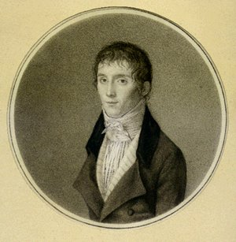
FIGURE I
Nicéphore Niépce jeune, portrait par Laguiche, 1795
Sic vos non vobis - tulit alter honores. Virgile
Paris, librairie des auteurs et de l'académie des bibliophiles, rue de la Bourse, 10. - Chalon-sur-Saône, librairie Ferran, rue de l'Obélisque, 1867.
Plan :
A) - Préambule : alchimie et héliographie [I. Introduction : 1. du point de vue de la physique - 2. du point de vue de la chimie - 3. du point de vue de l'histoire : aperçu de l'histoire de la photographie - II. La matière sensible : 1. la lune cornée et la pierre infernale - 2. le bitume de Judée - 3. l'iode et les sels iodés - le brome - 4. le collodion - 5. chromates associés aux substances organiques - III. Les dissolvants : 1. hyposulfite de soude - 2. huile de lavande et pétrole - IV. Le Lion Vert : 1. lentilles achromatiques - 2. substances accélératrices - V. le Rebis : 1. du noir au blanc - 2. fixation : du blanc au rouge - conclusion] ||
B) - La Vérité sur l'Invention de la Photographie par Eugène Chevreul : premier article, Journal des Savants, février 1873 [avec des considérations sur Abel Niépce de Saint-Victor] - deuxième article, Journal des Savants, mars 1873 [généralités servant d'introduction - première section : de l'héliographie, de la daguerréotypie et de la photographie : §1. de l'héliographie - §2. de la daguerréotypie - §3. de la photographie - deuxième section : perfectionnements apportés à l'héliographie, à la daguerréotypie et à la photographie : §1. perfectionnement de l'image héliographique - §2. perfectionnement de l'image daguerrienne - §3. perfectionnement de la photographie (papier à image inverse - papier à image directe) - troisième section : De l'héliographie, de la daguerréotypie et de la photographie au point de vue théorique. Histoire de la théorie de l'héliographie, de la daguerréotypie et de la photographie : §1. Héliographie - §2. Daguerréotypie - §3. Photographie - quatrième section : différence d'esprit de Claude et de Nicéphore Niépce, et réflexions sur l'histoire de l'héliographie, de la daguerréotypie et de la photographie : §1. les deux frères Niépce - §2. résumé de l'histoire de l'héliographie, de la daguerréotypie et de la photographie ||
C) - Considérations sur la Reproduction, par les procédés de M. Niépce de Saint-Victor, des images gravées, dessinées ou imprimées par Eugène Chevreul, Mémoire de l'Académie des sciences, t. XX, 1849 : introduction - §1. première catégorie d'expériences (Reproduction, au moyen de l'iode, d'une gravure, d'un dessin, d'un imprimé, etc., sur un papier collé en cuve avec de l'amidon et du résinate d'alumine, ou sur un enduit d'amidon cuit et adhérent à une surface unie de verre ou de porcelaine) - §2. deuxième catégorie d'expériences (Reproduction, sur une surface métallique polie, d'une gravure, d'un dessin, d'un imprimé, etc., au moyen de divers fluides élastiques.) - Réflexions - Action de vapeurs autre que celle de l'iode sur les surfaces métalliques - §3. troisième catégorie d'expériences (Reproduction des images du foyer d'une chambre obscure, au moyen d'un composé d'argent, appliqué sur un enduit d'amidon ou d'albumine au lieu de l'être sur du papier.) - Résumé - ||
Préambule : alchimie et héliographie
I. INTRODUCTION [dans ces notes, nous mettons souvent à contribution un fort bon texte de vulgarisation, Les Merveilles de la Science, la Photographie, de Louis Figuier - librairie Furne, Jouvet et Cie, Paris -, sur lequel les alchimistes modernes ont beaucoup médit ; ce texte est adapté, aménagé, agrémenté de notes personnelles et complété par des notes d'Arago - Les notes sont précédées elles-mêmes d'un texte, remanié, dû à Pierre-Paulin Carles, Influence exercée sur les réactions chimiques par les agents physiques autres que la chaleur, J.-B. Baillière et fils, 1880 ]
Chacun sait que la lumière blanche, telle qu'elle nous arrive du soleil, n'est pas simple, mais composée de sept couleurs principales, qui sont, en commençant par la partie la moins déviée, rouge, orangé, jaune, vert, bleu, indigo, violet. Ce fait est mis facilement en relief, soit par la méthode analytique, soit par diverses méthodes synthétiques. Dans le premier cas, on interpose un prisme sur le passage d'un rayon de lumière solaire, et aussitôt ce rayon se trouve divisé en plusieurs rayons colorés, qui rappellent par leur ensemble les couleurs de l'arc-en-ciel et possèdent les teintes énumérées plus haut. Dans le second cas, c'est-à-dire par les méthodes synthétiques, on reconstitue la lumière blanche génératrice en réunissant les divers rayons du spectre, soit à l'aide d'un second prisme identique au premier, mais dont les faces sont dirigées en sens contraire, soit par les lentilles convergentes ou les miroirs concaves, soit enfin par la persistance des impressions lumineuses à l'aide du disque coloré de Newton. Mais les couleurs du spectre possèdent des propriétés plus importantes que celles d'impressionner diversement la rétine; ce sont des propriétés éclairantes, calorifiques et chimiques. [c'est le point de liaison dont parle Fulcanelli entre la CHIMIE et la PHYSIQUE, cf. nos symboles -] D'après Fraünhofer et Herschell, le maximum d'intensité lumineuse est placé dans le jaune, et le minimum dans le violet. Quant à l'intensité calorifique, elle irait en croissant, selon Leslie, du violet vers le rouge, et le maximum aurait son siège dans le rouge même. Ce point varie cependant avec la nature du prisme, et quand on se sert d'un prisme de sel gemme, qui est le plus diathermane de tous les corps, le maximum se forme tout à fait au delà du rouge. Dans un grand nombre de circonstances, la lumière solaire se comporte encore comme un agent chimique; ainsi le calomel, le chlorure d'argent noircissent par l'action de la lumière. Les couleurs végétales sont détruites. Mais cette propriété n'est pas également l'apanage de tous les rayons simples. Ainsi, quand on reçoit le spectre solaire sur une de ces substances impressionnables à la lumière qui sont employées en photographie, on reconnaît que les actions chimiques se produisent diversement. A l'inverse des propriétés calorifiques, les propriétés chimiques se manifestent surtout dans les régions qui correspondent aux rayons les plus réfrangibles, c'est-à-dire aux rayons voisins du violet [ion, proche par assonance de ioV, poison, venin et rouille]. Elles dépassent même du côté de cette couleur la limite sensible du spectre, de telle sorte que le soleil nous envoie, outre les rayons qui sont à la fois chimiques et lumineux, des rayons chimiques obscurs, doués d'une plus grande réfrangibilité que les premiers. On a appelé ces rayons ultra-violets. Cette caractérisation des rayons chimiques a été établie en 1770 par Scheele, qui remarqua que le chlorure d'argent noircit surtout dans le violet ; mais c'est Ritter et Vollaston qui indiquèrent le rôle des rayons ultra-violets (Becquerel. De la lumière, ses causes, ses effets, t I.), en montrant que dans cette région le même sel d'argent y noircissait très rapidement. Il est vrai de dire que, tout d'abord, on avait attribué à la chaleur qui accompagne toujours la lumière, les phénomènes chimiques observés; mais lorsqu'il fut bien constaté que la décomposition du chlorure d'argent se manifestait plus vite dans la région violette que dans les autres rayons, et que les rayons calorifiques n'étaient point placés de ce côté du spectre, il fallut bien se rendre à l'évidence, et l'on admit enfin que clans le spectre la partie chimique active était la région bleue-violette et ultra-violette. Le chlorure d'argent, si sensible à la lumière, ne résistait-il pas d'ailleurs à une chaleur incomparablement plus forte, et ne pouvait-on pas le fondre même sans altérer sa composition ? Mais on vit bientôt que le chlorure argentique n'est pas la seule substance susceptible de s'altérer sous l'influence de la lumière. Aussi les pharmaciens du commencement du siècle, qui étaient surtout à cette époque les dépositaires de la science chimique, écrivaient-ils (Morelot, Cours élément. de pharm. chim., 1803, t, I, p. 60,) qu'il n'est pas de substance simple ou composée, quelque enfermée qu'elle soit, qui n'éprouve de la part de la lumière une altération plus ou moins sensible; les poudres végétales, les huiles volatiles, les sels métalliques subissent, disaient-ils, les modifications les plus singulières. Virey (Virey, t. Il, p. 170.) dit
« que la lumière agit souvent d'une façon remarquable sur les substances chimiques ; qu'elle augmente la couleur verte des feuilles, la rouge et autres des feuilles et des fruits; qu'elle y développe en plus grande abondance le carbone et l'hydrogène, corps combustibles; qu'elle enlève de même à plusieurs oxydes métalliques une grande partie de leur oxygène, et en réduit même quelques-uns, tels que l'oxyde de mercure...; que l'acide nitrique s'y altère aussi et donne des vapeurs rutilantes, etc. Tous ces faits (indiqués par Bouillon-Lagrange) annoncent, dit Virey, que la lumière a beaucoup d'affinité pour l'oxygène. »
En même temps, ajoute-t-il, elle favorise la combinaison de l'oxygène avec différents corps, parce qu'elle agit comme chaleur. Elle enlève de l'hydrogène sulfuré au kermès minéral et lui ôte beaucoup de sa belle couleur... C'est pourquoi il est nécessaire de tenir dans des vases opaques la plupart de ces substances destinées à l'usage médicinal. On connaissait du reste déjà, à cette époque, des faits aussi précis et au moins aussi curieux. Ainsi, en 1722,
« Petit (Becquerel, De la lumière, t. II, p. 46 - 47.) avait vu qu'une dissolution de salpêtre et de sel ammoniac donne au soleil des cristaux plus beaux qu'à l'ombre. Chaptal avait montré que des rayons lumineux tombant sur une capsule décident la cristallisation à l'endroit même où ils sont dirigés. Dorthez, avec des flacons contenant du camphre en solution, avait constaté qu'ils présentaient des cristallisations du côté exposé à la lumière.
« On savait encore que des cristaux prismatiques de sulfate de nickel, séléniate de zinc, se transforment à la lumière en octaèdres à base carrée; que du phosphore étant mis dans le tube barométrique, le tube se couvre de paillettes rouges brillantes; effets qui se produisent rapidement dans les rayons violets du spectre, lentement dans les rouges. »
Aussi s'empressa-t-on de mettre à profit l'action de la lumière. C'est ainsi que commença la photographie.
1. du point de vue de la physique : Il y a trois siècles, un physicien napolitain, Jean-Baptiste Porta [cf. Idée alchimique, III et prima materia], imagina la chambre obscure. En plaçant une lentille convergente au devant de l'orifice percé sur l'une des parois d'une boîte fermée, on obtenait, sur un écran placé à l'intérieur, la reproduction exacte de toutes les vues environnantes. Dans cet espace étroit venaient se peindre, avec une fidélité et une précision extraordinaires, le spectacle changeant, les aspects variés, du paysage extérieur. Mais ces tableaux si parfaits n'étaient qu'une fugitive empreinte, qui s'évanouissait avec la clarté du jour. Trois siècles durant, on les considéra d'un oeil d'envie, avec le regret de n'en pouvoir fixer la trace éphémère : le petit nombre de physiciens qui, dans ce long intervalle, avaient essayé d'aborder un tel problème, avaient reculé tout aussitôt, effrayés et comme honteux de leur audace. Plus tard, la physique et la chimie naissantes vinrent s'exercer tour à tour sur cet objet difficile. Le physicien Wedgwood, le chimiste Humphry Davy, tentèrent de mettre à profit, pour fixer et conserver les images de la chambre obscure, la modification que les composés d'argent subissent au contact des rayons lumineux. Mais Wedgwood et Davy furent contraints l'un après l'autre d'abandonner l'entreprise.
2. du point de vue de la chimie : La lune cornée, ou l'argent corné, en d'autres termes, le chlorure d'argent, fut découvert par les alchimistes, à l'époque de la Renaissance. Ce composé a la propriété essentielle, de se colorer en bleu foncé, quand il reste exposé au soleil, ou à la lumière diffuse. Le premier opérateur qui eut entre les mains, dans un laboratoire, l'argent corné, dut constater aussitôt la modification qu'il subit par l'action des rayons lumineux. D'après Arago, ce serait un alchimiste, nommé Fabricius, qui aurait le premier, en 1566, obtenu l'argent corné, en versant du sel marin dans une dissolution d'un sel d'argent, et qui aurait remarqué la coloration de ce produit, par l'action de la lumière. [in Arago : rapport de M. Arago sur le daguerréotype, Bachelier, 1859 - dans l'ouvrage de Georgius Fabricius, De Rebus Metallicis, Tiguri 1566, il est déjà longuement question d'une sorte de mine d'argent qu'on appelait argent corné, ayant la couleur et la transparence de la corne, la fusibilité et la mollesse de la cire. Cette substance, exposée à la lumière, passait du gris jaunâtre au violet, et par une action plus longtemps prolongée, presque au noir : c'était l'argent corné naturel d'abord appelé mine d'argent vitreuse. Ce sel jouit ainsi de la propriété remarquable de noircir à la lumière, de noircir d'autant plus vite que les rayons qui le frappent sont plus vifs, ce qui sera à la base de l'une de ces procédés « d'augmentation » ou de « multiplication » mis au point par la suite et rappelant tant les fameux « multiplex » alchimiques] C'est donc dans le laboratoire d'un alchimiste qu'il faut chercher l'origine historique du principe général de la photographie. En 1777, le chimiste suédois Scheele reconnut que l'argent corné est plus sensible aux rayons bleus et violets du spectre solaire, qu'aux rayons rouges.
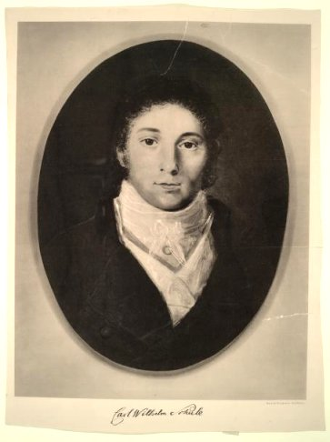
FIGURE II
Carl Wilhelm Scheele (1742 - 1786)
3. du point de vue de l'histoire : Dans les cours publics qu'il donnait, à Paris, vers 1780, Charles montrait aux assistants le curieux spectacle que voici. Il formait une image sur l'écran de la chambre obscure, recouvert d'avance d'une feuille de papier enduite de chlorure d'argent, et les parties lumineuses de l'image s'imprimaient en noir sur le papier. D'autres fois, Charles s'amusait à former la silhouette de l'un des assistants, en plaçant la personne dans un lieu fortement éclairé. L'ombre du modèle se projetait sur l'écran. Une feuille de papier enduite de chlorure d'argent, disposée sur cet écran, recevait la silhouette, qui se maintenait visible tant que la lumière ambiante ne l'avait pas altérée. On se passait de main un main, ce papier qui bientôt, noircissant en entier, offrait un second phénomène aussi curieux que le premier. Charles étant mort sans décrire la préparation dont il faisait usage, il est - selon Arago - de toute justice de faire remonter les premiers linéaments de ce nouvel art à un Mémoire de Wedgwood, célèbre par le perfectionnement des poteries et par l'invention d'un pyromètre destiné à mesurer les plus hautes températures. Wedgwood [physicien et industriel anglais, bien connu par le pyromètre qui porte son nom et par ses travaux dans l'art de la céramique] copiait, au soleil, le profil d'une personne dont l'ombre était projetée sur un papier enduit d'azotate d'argent. C'était l'expérience de Charles, dans laquelle l'azotate d'argent remplaçait la chlorure [le nitrate ou azotate d'argent était auparavant connue sous le nom de pierre infernale, cf. Alchimie en alsace-Lorraine et l'affaire de l'Argentaurum]. En 1802, parut un mémoire posthume de Wedgwood, dans lequel l'auteur faisait connaître le moyen de copier sur du papier enduit d'azotate d'argent, des estampes et des vitraux d'église. Humphry Davy essaya, à la suite de Wedgwood, de fixer sur le papier imprégné d'azotate ou de chlorure d'argent, les images de la chambre obscure. Mais l'azotate d'argent était trop peu impressionnable à la lumière; Davy ne réussit qu'en se servant d'un microscope solaire, c'est-à-dire en éclairant les corps par les rayons du soleil concentrés par une lentille [nous verrons plus loin quelles sont les implications symboliques, au plan de l'alchimie, de la lentille achromatique] dans une chambre obscure. Seulement les images qu'il formait ainsi, disparaissaient rapidement par l'action ultérieure du jour, car les parties non influencées par la lumière dans la chambre obscure, à leur tour sous l'influence de la lumière diffuse, faisaient disparaître les dessins sous une masse uniformément noire.
« II ne manque, écrivait Humphry Davy, en parlant du procédé de Wedgwood, qu'un moyen d'empêcher que les parties éclairées du dessin ne soient colorées par la lumière du jour, pour que ce procédé devienne aussi utile qu'il est simple dans son exécution... La copie d'un dessin, dès qu'elle est obtenue, ajoutait Humphry Davy, doit être conservée dans un lieu obscur. On peut bien l'examiner à l'ombre, mais ce ne doit être que pour peu de temps. Aucun des moyens que nous avons mis en oeuvre pour empêcher les parties incolores de noircir à la lumière n'a pu réussir.... Quant aux images de la chambre obscure, elles se sont trouvées trop faiblement éclairées pour former un dessin avec le nitrate d'argent, même au bout d'un temps assez prolongé. C'était là cependant l'objet principal des expériences. Mais tons les essais ont été inutiles. »
- Description d'un procédé pour copier les peintures sur verre et pour faire des silhouettes par l'action de la lumière sur le nitrate d'argent {Journal de l'Institution royale de Londres, 1802, t. I, p. 170) -
APERÇU DE L'HISTOIRE DE LA PHOTOGRAPHIE [Cet historique a été pris en entier partie, dans le Dictionnaire de Wurtz, art. PHOTOGRAPHIE, partie dans le Dictionnaire de Pelouze et Fremy (id.) et notes de Becquerel, Chastaing, etc. - tiré de Carles, cf. supra]
L'art de produire des images durables par l'action seule de la lumière date des premières années de ce siècle. Vers 1785, le physicien Charles obtenait bien des décalques et des silhouettes à l'aille d'un papier imprégné d'un sel d'argent, mais il ne savait pas fixer cette épreuve, qui d'ailleurs était négative, c'est-à-dire dans laquelle les endroits frappés par la lumière étaient représentés par des noirs et les ombres par des clairs. En 1802, Wedgwood et Davy échouèrent devant le même problème.
[Thomas WEDGWOOD, (1771-1805, troisième fils du grand céramiste anglais Josiah WEDGWOOD) est l’un des premiers, sinon le premier, à avoir eu l’idée d’appliquer des produits photosensibles à la chambre noire. C’est l’idée même de la photographie. Il ne s’agit plus de tracer les contours d’une image projetée par une chambre noire mais bien de laisser la nature accomplir le dessin. Il réussit à obtenir des copies d’objets en utilisant du nitrate d’argent mais ne réussit pas à les fixer. Ses travaux, qui débutèrent en 1791, furent publiés en 1802 par son collaborateur, Humphry DAVY (1778-1829, membre de la Société Royale de Londres en 1803, président de la Société Royale en 1820) dans le « Journal of the Royal Institution of Great Britain » . Ils ne furent connus en France qu’en 1851. Voici les passages les plus importants du mémoire de juin 1802 :
Essai d’une méthode pour copier les tableaux sur verre et pour faire des profils par l’action de la lumière sur le nitrate d’argent.
« Du papier ou du cuir blanc, mouillé avec une solution de nitrate d’argent, ne subit aucune modification lorsqu’on le conserve dans l’obscurité ; mais si on l’expose à la lumière du jour, il change rapidement de couleur et, après avoir passé par différentes teintes de gris et de brun, il devient finalement à peu près noir. Les altérations de la couleur se produisent avec une rapidité proportionnelle à l’intensité de la lumière. Sous l’action directe du soleil, deux ou trois minutes suffisent pour produire pleinement l’effet ; à l’ombre il faut plusieurs heures et la lumière transmise par des verres diversement colorés agit avec des degrés différents d’intensité » (voir les travaux de SCHEELE).
« La considération de ces faits nous permet de comprendre aisément la méthode par laquelle les lignes et les ombres des tableaux sur verre peuvent être reproduits ou par laquelle on peut se procurer des profils au moyen de l’action de la lumière. Quand une surface blanche couverte avec une solution de nitrate d’argent est placée derrière un tableau sur verre exposé à la lumière solaire, les rayons transmis à travers les parties diversement colorées de la surface donnent des teintes distinctes de brun et de noir, différant sensiblement en intensité suivant les ombres du tableau et, là où la lumière n’était pas altérée, la couleur du nitrate a atteint le maximum d’intensité. Quand l’ombre portée d’une figure tombe sur une surface préparée, la partie de cette surface qu’elle cache reste blanche, tandis que les autres parties noircissent rapidement.
Pour copier des tableaux, la solution doit être appliqué sur du cuir et, dans ce cas, elle est impressionnée plus rapidement que lorsqu’on fait usage du papier. Quand la couleur a été une fois fixée sur le cuir ou le papier elle ne peut plus être enlevée par l’eau pure ou l’eau de savon et elle a un caractère de grande permanence. Une copie de tableau ou un profil, immédiatement après qu’ils ont été obtenus, doivent être conservés dans l’obscurité. On peut, à la rigueur, les examiner à l’ombre, mais, dans ce cas, l’exposition ne doit être que de quelques minutes. A la lumière des chandelles ou des lampes qu’on emploie habituellement, ils ne subiront pas d’altération sensible. »
« Les images formées à l’aide de la chambre obscure ont été trouvées trop faibles pour produire, en un temps modéré, un effet sur le nitrate d’argent. Copier ces images, tel a été d’abord le but de M. WEDGWOOD dans ses recherches sur ce sujet ; et, pour cela, il a fait usage du nitrate d’argent qui lui a été indiqué par un de ses amis comme une substance très sensible à l’action de la lumière ; mais ses nombreuses expériences ont été sans succès. »
WEDGWOOD n’a donc pas réussit à fixer les images obtenues. Quasiment dans le même temps, un homme va pourtant trouver une solution. Il s’agit de Nicéphore NIEPCE. site consulté : http://www.ifrance.com/jcmarteau/historia/page8.htm ]
Comme Charles, ils obtenaient des épreuves négatives, et comme lui, ils ne pouvaient fixer l'impression lumineuse. Ils songèrent bien à reproduire l'image fournie par la chambre noire de Porta; mais leurs préparations n'étaient pas assez sensibles pour leur permettre d'arriver à un résultat satisfaisant. La même difficulté arrêta longtemps Niépce et Daguerre. Nicéphore Niépce avait créé un procédé aujourd'hui entièrement oublié, mais qui constituait la première méthode photographique complète, l'héliographie. Il réussissait à fixer les dessins en positif, et il reproduisait même en 1820 l'image de la chambre noire; mais le temps d'exposition était si long qu'il n'était possible de reproduire que l'image d'un paysage ou d'un objet inanimé. La matière impressionnable était l'asphalte ou bitume de Judée. Ce carbure, dissous dans l'essence de lavande, était étendu sur une plaque d'argent bien polie : à l'aide d'une légère chaleur appliquée en dessous, on faisait évaporer le dissolvant, et lorsque la matière ne poissait plus, on l'exposait au foyer de la chambre noire pendant six ou huit heures. Sous l'influence de la lumière, les parties du bitume éclairées s'étaient oxydées, étaient devenues insolubles, et résistaient alors à un deuxième lavage fait avec du pétrole et de l'essence de lavande. Les blancs étaient dès lors formés par les reliefs du bitume et les noirs par la surface polie de la plaque métallique. Pour noircir davantage le fond de l'épreuve, Niépce eut l'idée d'exposer la plaque aux vapeurs d'iode ; mais il mourut peu après, en 1833, sans avoir pu faire porter d'autres fruits à sa découverte. Daguerre, qui depuis quelques années s'était associé avec lui, continua ses essais, et peut-être n'eût-il pas été plus loin que son collaborateur, si un hasard heureux (mais qui n'accorde ses faveurs qu'à ceux qui les méritent) n'était accouru a son aide. Une capsule pleine de mercure avait émis dans une chambre obscure des vapeurs qui, en réagissant sur une plaque d'argent iodée, avaient produit une image que l'exposition à la lumière avait été impuissante a développer. Daguerre s'empara de ces faits et fonda sur leur emploi un procédé photographique bien supérieur a celui de Niépce, et qui permit à la fois d'atteindre une telle rapidité et une telle finesse qu'on le préfère encore quelquefois dans les recherches scientifiques à la photographie sur collodion.
Tel est ce procédé, qu'il publia dès 1838 :
- 1° On dégraisse la plaque à l'aide de l'acide nitrique étendu et de la ponce.
- 2° On la polit.
- 3° On l'expose aux vapeurs d'iode dans une pièce obscure jusqu'à la production d'une couche jaune d'or d'iodure d'argent.
- 4° On la soumet à l'action de la lumière au foyer de la chambre noire.
- 5° On révèle l'image : pour cela, on place la plaque dans une boîte contenant du mercure chauffé à 60 degrés. Les vapeurs mercurielles amalgament l'argent, mis à nu par la lumière, et en rendent la présence visible.
- 6° On fixe l'image en dissolvant, à l'aide d'une solution concentrée de sel marin, l'iodure non altéré, de façon à empêcher toute action ultérieure de la lumière.
« On paya en Allemagne jusqu'à 120 francs des images faites par Daguerre. » (Vogel, Photographie et chimie de la lumière.)
A partir de ce moment, on ne songe plus qu'à perfectionner la découverte de Daguerre. Ainsi, Herschell
montre qu'il est plus avantageux et plus sûr de remplacer le sel marin par l'hyposulfite de soude pour dissoudre le sel d'argent non altéré. Claudet exalte la sensibilité de la plaque iodée en l'exposant aux vapeurs de chlorure d'iode; Fizeau emploie l'eau bromée ; Foucault, le bromure de chaux; enfin, Fizeau renforce l'épreuve en déposant de l'or à sa surface. C'est à cette phase de l'histoire de la photo-chimie que se rattachent les remarquables travaux de M. E. Becquerel sur la reproduction des couleurs naturelles.
Mais le daguerréotype présentait plusieurs défauts : les épreuves étaient coûteuses, elles réfléchissaient désagréablement la lumière, et surtout elles exigeaient une pose nouvelle pour chacune d'elles; aussi, dès 1847, un changement notable commença à se produire dans l'esprit des personnes vouées à l'étude de l'art nouveau; et l'attention se trouva rappelée vers les procédés indiqués par Talbot dès 1839, au moment même où Daguerre faisait connaître son procédé à l'Académie des sciences. Fox Talbot opérait sur papier. Chaque feuille était recouverte d'une couche d'iodure d'argent mélangée d'acide gallique [pensons aux références de Fulcanelli sur la noix de galle et l'étain grenaillé, cf. symboles] et exposée dans la chambre noire; développée ensuite et fixée, elle portait une image négative, c'est-à-dire inverse de celle que formaient les objets naturels et pouvait, parle contact des feuilles préparées de même, fournir un nombre indéfini d'images inverses de la première, c'est-à-dire positives. Le procédé de Talbot n'avait guère qu'un défaut, les négatifs manquaient de finesse. On chercha à leur en donner en modifiant le grain du papier avec de l'amidon, de la cire, de la gélatine [cf. Marc-Antoine Gaudin]... En 1848, Niépce de Saint-Victor, neveu de l'inventeur de l'héliographie, obtint de meilleurs résultats en prenant comme.couche sensible une pellicule d'albumine adhérente à la surface d'une plaque de verre. L'albumine de l'oeuf était additionnée d'iodure de potassium, étendue sur la glace, séchée à l'air, puis sensibilisée dans un bain d'acéto-nitrate d'argent et soumise à une série d'opérations analogues à celles qu'exige la production des épreuves sur papier. Quelques personnes adoptèrent dès l'origine ce procédé nouveau ; mais ses difficultés pratiques et par-dessus tout celle de former une couche homogène d'albumine, déconcertèrent un grand nombre de ses partisans. Aussi, la méthode, malgré la beauté exceptionnelle des épreuves qu'elle fournit, est-elle restée monopolisée jusqu'aujourd'hui en un très petit nombre de mains. Du reste, peu après la publication du procède de Niépce de Saint-Victor, une substance nouvelle, le collodion, devait remplacer l'albumine avec des avantages tels, que son emploi ne pouvait manquer de se généraliser rapidement, à l'exclusion de tout autre.
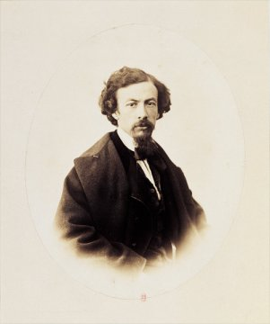
FIGURE III
Gustave Legray (1820 - 1884)
- site consulté : http://expositions.bnf.fr/legray/arret_sur/1/index.htm]
C'est à M. Legray, à Fry et a Scott Archer qu'est due l'introduction du collodion dans les opérations photographiques, et l'on peut dire qu'elle a été une des principales causes du développement considérable que l'art photographique a pris depuis cette époque (1850). La simplicité des procédés, la rapidité des opérations et l'excellence des résultats ont donné une immense impulsion à la branche spéciale des portraits. Le principe de son usage est du reste bien simple : le collodion, additionné d'iodures et de bromures solubles, est versé sur une glace. Dès que par évaporation partielle il a fait prise, on plonge la glace dans un bain d'azotate d'argent, de manière à l'imprégner d'iodure et de bromure d'argent. Chargée de ces composés insolubles, et couverte encore d'azotate libre, la glace est exposée au foyer de la chambre noire pendant quelques secondes. Rentrée ensuite dans une pièce obscure, elle est soumise à l'action d'agents réducteurs susceptibles d'achever la décomposition que la lumière a commencée, et de transformer l'image latente en une image visible et négative. Le sulfate de fer, l'acide pyrogallique, sont principalement employés pour obtenir cet effet. Après ce développement enfin, l'image est fixée, c'est-à-dire débarrassée des sels encore impressionnables au moyen de l'hyposulfite de soude ou du cyanure de potassium. Préparé de cette façon, le cliché, placé sur des feuilles de papier recouvertes de composés argentiques, peut fournir autant de reproductions qu'on le désire. Depuis, on s'est aperçu qu'au bout de quelques années, toutes les épreuves aux sels d'argent manifestent un commencement d'altération sensible ; leur tirage est lent et minutieux. On a donc dû chercher à produire les épreuves à la presse, et à employer l'encre au charbon qui seule résiste à l'action des agents physiques. C'était revenir à l'héliographie de Niépce. Certains expérimentateurs se sont contentés de demander au charbon seul son inaltérabilité. De la plusieurs procédés au charbon, dans lesquels l'agent actif reste toujours le rayon lumineux, mais dont l'action se manifeste par un dépôt de carbone, qui se produit, grâce à des artifices particuliers, aux seuls endroits frappés par la lumière, c'est-à-dire sur les noirs. Si le positif est produit à la surface d'un émail, et si le charbon est remplacé par un émail foncé pulvérisé, la chaleur du feu, en faisant fondre celui-ci, l'incorporera intimement à la surface qui lui sert de support. L'inaltérabilité de pareilles photographies est certainement indéfinie, et c'est de ce côté que devront désormais se concentrer toutes les recherches (Dict. Wurtz, art, LUMIÈRE). »
Pendant toute cette période de temps, l'idée pratique avait fait complètement oublier le côté théorique de la
question : on poursuivait le résultat, mais on se préoccupait peu des propriétés réelles des radiations ; on étudiait l'effet, on négligeait la cause. Bientôt cependant la science pure reprit son véritable rôle. M. Berthelot (Berthelot, Ann. Chim. et phys., t. XVIII, 1869, et Mécanique chimique, t. II, p. 401.) montra en 1869 que les réactions produites par la lumière pouvaient être rangées en deux catégories, et il divisa les actions photo-chimiques en exothermiques, et endothermiques. Dans les premières se placent en première ligne la formation de l'acide chlorhydrique, sous l'influence des rayons les plus réfrangibles, avec le mélange de chlore et d'hydrogène, la formation des produits chlorés, la réduction des sels d'argent par les composés organiques, la décomposition de l'iodhydrique. La lumière agit, il est vrai, comme la chaleur, mais elle n'est que l'étincelle qui allume le bûcher (Berthelot) [l'amoureux de science aura saisi la formulation essentiellement alchimique des propos. Une marqueterie de Lorenzo Lotto où l'on aperçoit deux béliers, jette des lueurs singulières sur ces paroles, cf. section sur Lotto]. La nature gazeuse des composants et le peu de chaleur développé par le phénomène chimique, empêchent la combustion de se propager, la chaleur étant absorbée au dehors. Cette lumière dispose seulement des conditions d'exercice de la force chimique. Ce n'est pas elle qui fait le travail principal, elle n'est, comme dit M. Tyndall (Dictionn. Wurtz, art. AFFINITÉ, p. 81.), que la force qui précipite les atomes penchés sur le bord de l'abîme. Dans les actions endothermiques, au lieu de production de chaleur, il y a au contraire absorption. Ici c'est l'acte de l'illumination qui effectue le travail, c'est la force chimique qui se transforme, c'est la force que produit la chute des atomes dans l'abîme. La réduction par la seule lumière du chlorure d'argent, des oxydes de mercure, de l'acide azotique; la fixation du carbone dans les tissus végétaux, sous l'influence des rayons lumineux, en sont des exemples; mais ils sont plus rares que les précédents. Dans ses recherches, sur l'action opérée par la lumière sur l'acide iodhydrique, M. Lemoine fit voir quelle était l'importance du dégagement ou de l'absorption de la chaleur qui suivent la formation ou la dissociation des corps en réaction. M. Becquerel (Becquerel, De la lumière, ses causes, ses effets.) fit l'étude physico-chimique d'un certain nombre de corps et vit combien les effets produits par la lumière sont nombreux. En agissant sur les sels minéraux, la lumière détermine ordinairement une réduction ; avec les sels organiques elle est sans action ou bien elle les oxyde, surtout lorsque le corps carboné est mêlé à un sel. En séparant au contraire les radiations, l'effet constaté doit être le plus souvent imputé aux rayons violets et ultraviolets, qui restent encore les principaux rayons chimiques. [...]
Cette introduction fait voir, déjà, apparaître des points de jonction évidents, vu sous l'angle historique, entre l'alchimie et l'héliographie, c'est-à-dire la trace par le soleil : voilà déjà, sous l'angle poétique, tout un programme. C'est ce programme que nous souhaitons aborder ici par ce nouveau système de relations symboliques que nous proposons aux lecteurs. Et, à tout seigneur, tout honneur, nous commencerons par le mystère de l'ARGENT CORNÉ et de la PIERRE INFERNALE.
II. LA MATIERE SENSIBLE
1. L'ARGENT CORNÉ et la PIERRE INFERNALE
Glaser, dans son traité de Chymie, n'aborde pas l'argent corné mais parle du caustique perpétuel, alias l'azotate d'argent ou pierre infernale. Voici la préparation qu'il conseille d'adopter :
Et voici pour la préparation de l'argent corné :
Nicéphore Niépce commença par faire usage du chlorure d'argent, c'est-à-dire qu'il suivit les traces de Charles et de Wedgwood, mais que bientôt il abandonna ces substances impressionnables, pour en chercher d'autres. Il copiait des estampes en soumettant à l'action de la lumière cette estampe rendue transparente par un vernis, et l'appliquant sur la substance impressionnable, préalablement étalée, en couche mince, sur une planche d'étain. Il essayait, en même temps, de faire usage de la chambre obscure, car dès l'année 1816, il avait construit une sorte de chambre obscure, en adaptant une lentille à une boîte, qui avait servi de baguier. Tout cela était fort grossier, fort imparfait; mais pouvait-on faire mieux au fond d'une province et dans une campagne isolée ? [...] Nous ne pouvons savoir quelle était la substance impressionnable sur laquelle Niépce recevait l'image de la chambre obscure ; mais il est certain qu'il obtenait déjà par la lumière, de véritables impressions à effet lumineux inverse, c'est-à-dire des plaques sur lesquelles les tons blancs de la nature étaient représentés par des noirs, et les ombres accusées au contraire par des clairs.
[plusieurs points intéressants : cette camera obscura qui est pour nous l'exact équivalent de l'oeuvre au noir ; mais le plus important est cette notion de DOUBLE INVERSION : inversion SPATIALE, le haut de la réalité étant le bas de la fiction ; et le BLANC représenté par le NOIR. N'a-t-on pas là, en effet, l'allégorie du DÉLUGE - le renversement - tel que l'exprime Fulcanelli et E. Canseliet ? Les vieux alchimistes ne nous ont-ils pas dit que l'Artiste devait, par ailleurs, voir d'abord la couleur NOIRE, faute de quoi rien de bon ne suivrait ? Cf. nos Symboles -]
Il est certain que Niépce n'était nullement satisfait du chlorure d'argent ! Mais le fait est là et a son importance, sous l'angle du symbolisme : voilà, en effet, Diane mise en position de ressusciter au XIXe siècle et de jouer son rôle, exactement comme l'exposent les alchimistes dans leurs traités, de MATIÈRE SENSIBLE, c'est-à-dire de SEL ou CHRISTOPHORE [cf. la légende de saint Christophe, qu'expose Fulcanelli au Myst. Cath., reprise pour partie dans notre tarot alchimique]. Il n'est pas jusqu'à la plaque qu'utilisait Niépce qui n'entre dans le système symbolique tel que le fera voir le § suivant. Nous avons insisté ailleurs - emblème XLII de l'Atalanta Fugiens, in chimie et alchimie - sur l'importance qu'il y avait à bien saisir en quoi le MERCURE PHILOSOPHIQUE doit être « commixé » avec le SEL des SAGES, i.e. le PREMIER MERCURE. Nous reviendrons sur ce point fondamental, clef de la réussite qui donne son plein sens à cette maxime, l'un des grands classiques de l'alchimie, due au pseudo Basile Valentin :
« l'Azoth et le Feu en blanchissant Latone, paraîtra Diane sans vêtement. »
Voyez enfin la préparation de l'argent corné, très originale, que donne Frédéric Kuhlmann, que nous rapportons dans la section de la voie humide et de l'or potable.
2. le BITUME de JUDÉE
En 1826, Niépce avait renoncé à tous les agents chimiques expérimentés par lui pendant dix ans, et s'était arrêté à l'emploi du bitume de Judée, substance résineuse qui, étalée en couche mince et soumise à l'action de la lumière solaire, s'oxyde, blanchit, et reproduit en traits blanchâtres, quand on la place dans la chambre obscure, l'image formée au foyer de cet instrument. Après ses déconvenues avec la résine de gaïac, Niépce emploie une résine d'origine minérale : l'asphalte, ou bitume de Judée. Le bitume de Judée, produit photosensible, est une sorte de goudron naturel, connu depuis l'Antiquité. Les Anciens le récupéraient à la surface de la mer Morte (en grec, lac Asphaltite, cf. 1, 2, 3), où il remonte continuellement du fond des eaux. On s'en servait pour embaumer les momies chez les Égyptiens, pour calfater les navires, ou encore pour recouvrir le sol à Babylone. Au XIXe siècle, on savait déjà l'extraire des roches bitumineuses, si bien que le bitume utilisé par Niépce ne venait pas de Judée. Niépce montre que sous l'action de la lumière le bitume de Judée devient insoluble dans ses solvants habituels.
La méthode permettait :
- 1° d'obtenir la reproduction des estampes en les exposant à la lumière extérieure ;
- 2° de fixer l'image formée au foyer de la chambre obscure.
En ce qui concerne le premier objet, Niépce prenait une estampe ; il la vernissait sur le verso, pour la rendre transparente, et l'appliquait sur une lame d'étain, préalablement recouverte d'une couche de bitume de Judée. Les parties noires de l'estampe arrêtaient les rayons lumineux; au contraire, les parties transparentes ou qui ne présentaient aucun trait de burin, les laissaient passer librement. Les rayons lumineux, traversant les parties diaphanes du papier, allaient blanchir la couche de bitume de Judée appliquée sur la lame métallique, et l'on obtenait ainsi une reproduction fidèle du dessin, dans laquelle les clairs et les ombres conservaient leur situation naturelle. La plaque qu'utilise Niépce est faite de cuivre, sur laquelle il dépose une lame d'argent. On comprend qu'il s'agit là du croissant de Lune que porte l'idéogramme du Taureau dans le zodiaque alchimique, cf. supra. Le procédé qui permit à Nicéphore Niépce de fixer les dessins de la chambre noire, était fondé sur la même action chimique qu'il avait appliquée à la copie des gravures. Il reposait sur ce fait, que le bitume de Judée, exposé pendant un certain temps aux rayons lumineux, s'oxyde, [cf. ioV, venin, poison, et aussi rouille du fer et vert-de-gris] et devient insoluble dans certains liquides. L'inconvénient capital de ce moyen, c'était le temps considérable qu'exigeait l'impression
lumineuse
[repris in http://etudesphotographiques.revues.org/index.html :
- Le principe physico-chimique de l'héliographie est la sensibilité du bitume de Judée, basée sur un phénomène de polymérisation (« durcissement »).Ce principe constituera la base du contrat d'association entre Niépce et Daguerre (cf..J. Roquencourt, Louis Daguerre , Vivre en Val d'Oise, n° 48, février-mars 1998, p. 21-22). La sensibilité obtenue avec le combiné bitume de Judée - essence de lavande dépend du dosage du bitume dissout dans l'essence de lavande (ce dosage peut partir d'une concentration nulle ; dans ce cas, la sensibilité minimale est celle du résidu résineux contenu dans l'essence de lavande). L'aspect obtenu sur une plaque de cuivre varie du positif au négatif suivant la concentration du bitume : négatif/positif à faible concentration (utilisable pour les reproductions de gravure), négatif à forte concentration (nécessaire pour la reproduction des demi-teintes). L'effet négatif-positif est connu des graveurs : une plaque faiblement gravée donnant ces deux aspects par réflexion spéculaire, en faisant varier l'inclination de la plaque. Il n'y a pas d'image latente : à faible concentration, l'image est visible, elle est simplement masquée par la coloration du bitume en cas de forte concentration.
- De nombreux essais de reconstitution du procédé au bitume de Judée ont eu lieu depuis ceux d'Abel Niépce de Saint-Victor en 1853 (Recherches photographiques..., Paris, A. Gaudin, 1855). La plupart de ces essais fournissent un faisceau d'indications concordantes, qui situent le temps de pose entre 12 heures (Henry Baden Pritchard, " A Fragment of History... ", Photographic News, 23 mai 1884, p. 326), 14 heures (Joel Snyder, éléments communiqués à la rédaction) et 18 heures (cf. J. Roquencourt, Daguerre, artiste et inventeur de la photographie, thèse de doctorat en cours, Paris X, éléments communiqués à la rédaction), dans des conditions de prise de vue similaires à celles du " Point de vue du Gras ". Souvent citées, les indications fournies par les expérimentations de Jean-Louis Marignier, qui obtient des temps de pose de 40 à 60 heures, soit environ cinq jours (cf. J.-L. Marignier, Michel Ellenberger, " L'invention retrouvée de la photographie ", Pour la Science, n° 232, février 1997, p. 42) représentent une exception dans ce corpus. Une polémique opposera d'ailleurs à ce sujet J.-L.Marignier et H.Gernsheim en 1990-1991 (cf.notamment J.-L. Marignier, " Antwort auf die Kritik von Pr. H.Gernsheim... ", Photo-Antiquaria, 1991, vol. 1-2, p. 17-21 ; H.Gernsheim, " Nicéphore Niépces Heliographien. Replik auf Dr Marigniers Thesen... ", ibid., 1991, vol. 3, 1991, p. 36-37).].
Le bitume de Judée est une substance qui ne se modifie par l'action de la lumière qu'avec une lenteur excessive ; il ne fallait pas moins de dix heures pour produire un dessin. Pendant cet intervalle, le soleil, qui n'attendait pas le bon plaisir de cette substance paresseuse, déplaçait les lumières et les ombres avant que l'image fût saisie. Du reste, cela sera sera à la base de l'idée de l'utilité d'une sorte de photo multiplicateur, sur lequel nous reviendrons au § du Lion Vert. Mais laissons parler Nicéphore :
La
substance
ou
matière première que j'emploie, celle qui m'a
le mieux réussi, et qui concourt plus immédiatement
à
la production de l'effet, est l'asphalte ou bitume
de
Judée, préparé de la manière suivante :
Je remplis à moitié un verre de ce bitume
pulvérisé.
Je verse dessus, goutte à goutte, de l'huile essentielle de
lavande
jusqu'à ce que le bitume n'en absorbe plus, et qu'il en soit
seulement
bien pénétré. J'ajoute ensuite assez de cette
huile
essentielle pour qu'elle surnage de trois lignes environ
au-dessus du
mélange qu'il faut couvrir et abandonner à une douce
chaleur,
jusqu'à ce que l'essence ajoutée soit saturée de
la
matière colorante du bitume. Si ce vernis n'a pas le
degré
de consistance nécessaire, on le laisse évaporer à
l'air
libre, dans une capsule, en le garantissant de l'humidité qui
l'altère et finit par le décomposer. Cet
inconvénient
est surtout à craindre dans cette saison froide et humide,
pour
les
expériences faites dans la chambre noire. Une petite quantité
de ce vernis appliqué à froid,
avec
un tampon de peau très douce, sur une planche d'argent
plaqué
bien poli, lui donne une belle couleur de vermeil, et s'y
étend
en
couche mince et très égale. On place ensuite la planche
sur
un fer chaud, recouvert de quelques doubles de papier dont on
enlève
ainsi, préalablement, toute humidité ; et, lorsque le
vernis
ne poisse plus, on retire la planche pour la laisser refroidir
et finir
de
sécher à une température douce, à l'abri du
contact
d'un air humide. Je ne dois pas oublier de faire observer à ce
sujet
que c'est principalement en appliquant le vernis, que cette
précaution
est indispensable. Dans ce cas, un disque léger, au centre
duquel
est fixée une courte tige que l'on tient à la bouche,
suffit
pour arrêter et condenser l'humidité de la respiration. La planche, ainsi
préparée, peut être immédiatement
soumise aux impressions du fluide lumineux ; mais même,
après
y avoir été exposée assez de temps pour que
l'effet
ait eu lieu, rien n'indique qu'il existe réellement ; car
l'empreinte
reste inaperçue. Il s'agit donc de la dégager, et on n'y
parvient
qu'à l'aide d'un dissolvant.
[Notice de
Nicéphore Niépce, inventeur de la photographie. Fait
double, le
5 décembre 1829.]
Matière première... Dissolvant... Ne sont-ce point là les paroles de l'alchimiste ? Mais le lecteur sait déjà qu'il faut prendre nos paroles avec un grain de « SCEL » ! Voyons à présent les matières avec lesquelles Louis Daguerre a travaillé.
Tout d'abord, quelques mots sur le personnage ne seront pas superflus : Daguerre était un artiste; il n'était rien moins qu'un savant. Il appartenait à cette classe d'infatigables chercheurs, qui, sans trop de connaissances techniques, avec un bagage des plus minces, s'en vont loin des chemins courus, par monts et par vaux, cherchant l'impossible, appelant l'imprévu, invoquant tout bas le dieu Hasard : Daguerre, pour tout dire, était un demi-savant. La race des demi-savants est assez dédaignée , l'ignorance surtout aime à l'accabler de ses mépris; cependant il est peut-être bon de n'en pas trop médire. Les demi-savants font peu de mal à la science, et de loin en loin, ils font des trouvailles inespérées. Précisément parce qu'ils sont malhabiles à apprécier d'avance les éléments infinis d'un problème scientifique, ils se jettent du premier abord, au travers des difficultés les plus ardues; ils touchent intrépidement aux questions les plus élevées et les plus graves, comme un enfant insouciant et curieux touche, en se jouant, aux ressorts d'une machine immense. Et parfois ils arrivent ainsi à des résultats si étranges, à de si prodigieuses inventions, que les véritables savants en restent eux-mêmes confondus d'admiration et de surprise. Ce n'est pas un savant qui a découvert la boussole, c'est un bourgeois du royaume de Naples. Ce n'est pas un savant qui a découvert le télescope, ce sont deux enfants qui jouaient dans la boutique d'un lunetier de Middlebourg. Ce n'est pas un savant qui a réalisé les applications pratiques de la vapeur, ce sont deux ouvriers du Devonshire, le serrurier Thomas Newcomen et le vitrier Jean Cawley ; et l'illustre James Watt, qui porta la machine à vapeur à un si haut degré de perfection, n'était, dans sa jeunesse, qu'un pauvre fabricant d'instruments de la ville de Glasgow. Ce n'est pas un savant qui a découvert la vaccine, ce sont des bergers du Languedoc. Ce n'est pas un savant qui a imaginé la lithographie, c'est un chanteur du théâtre de Munich. Il est donc prudent de ménager un peu cette race utile des demi-savants. C'est parce que Daguerre n'était qu'un demi-savant, que la photographie existe. Assurément, s'il eût été un savant complet, il n'eût pas ignoré qu'en se proposant de créer des images par l'action chimique de la lumière, il se posait en face des plus graves difficultés de la science ; il se fût rappelé qu'en France, le physicien Charles, en Angleterre l'illustre Humphry Davy, et le patient Wedgwood, après mille essais infructueux, avaient regardé ce problème comme insoluble. Le jour où cette pensée audacieuse entra dans son esprit, il l'eût donc reléguée aussitôt à côté des rêveries de Cyrano Bergerac [Figuier cite ici un extrait curieux d'un texte d'Arago... ]; il eût tout au plus poussé un soupir de regret et passé outre. Heureusement pour la science et les arts, Daguerre n'était qu'un artiste, un amateur de sciences.
Après avoir répété diverses expériences avec peu de succès (expériences qui consistaient à perfectionner la méthode de Niépce), un de ces hasards dont les esprits supérieurs savent seuls profiter, le mit sur la voie de la réussite. Une cuiller oubliée sur une plaque iodurée y laissa son empreinte : ce fut une révélation. Abandonnant dès lors tous les enduits bitumeux utilisés par Niépce, Daguerre s'attacha à l'emploi de l'iodure d'argent, substance infiniment plus impressionnable à la lumière et d'un maniement plus facile. Mais la plaque iodurée, après son exposition dans la chambre noire, ne présente aucune altération visible ; l'image y est pour ainsi dire latente ; il faut la faire apparaître au moyen d'un agent révélateur. [on voit le point de jonction avec l'alchimie, qui consiste dans la FIXATION, c'est-à-dire la RÉVÉLATION : rendre l'OCCULTE MANIFESTE] Daguerre découvrit, et c'est là le point capital de son invention, que si l'on place une plaque iodurée au-dessus d'un vase rempli de mercure chauffé, la vapeur métallique ne se dépose que sur les points que la lumière a touchés, et qu'elle s'y attache en quantité d'autant plus grande que la lumière a été vive. Sur cette plaque, qui, au sortir de la chambre noire, ne présente encore qu'une teinte jaune uniforme, on voit l'image se développer comme par enchantement ; on dirait « qu'un pinceau de la plus extrême délicatesse va marquer du ton convenable chaque partie de la plaque. » Nous pouvons à présent lire le § suivant où est brièvement relatée la découverte de l'iode et du brome, qui sert également en photographie, cf. Chevreul infra [1, 2, 3, 4].
3)- L'IODE ET LES SELS IODÉS
Un salpêtrier de Paris, Courtois
(« Courtois, dit M. Frémy, qui était un ami de mon père, que j'ai vu, à la fin de sa vie essayer de produire artificiellement les alcalis organiques, avait obtenu l'iode très pur ; il en donnait des échantillons à tous les chimistes : il montrait son action corrosive sur les corps organiques et les vapeurs violettes qu'il produisait en se volatilisant sur les charbons. On a été injuste pour Courtois, en le traitant de simple salpêtrier; c'était un chimiste très habile ; on aurait dû le récompenser après sa découverte de l'iode et ne pas le laisser dans la misère. » ),
[Bernard Courtois, né à Dijon en 1777, fut d'abord élève en pharmacie, vint à Paris, où il entra dans le laboratoire de Fourcroy à l'École polytechnique, et, appelé aux armées par la réquisition de 1799, servit quelque temps dans les hôpitaux militaires. Il reprit ensuite ses travaux chimiques sous Thenard et Séguin ; il eut part, avec ce dernier, à la découverte de l'alcaloïde de l'opium. En 1801, il établit une nitrière artificielle, où il obtint le nitrate de soude en décomposant le nitrate de chaux par les soudes de varechs; c'est en opérant sur ces soudes qu'il découvrit l'iode. Ruiné par les événements de 1815, il lutta longtemps contre l'infortune : ce fut seulement en 1831 que l'Académie des sciences lut décerna un prix de 6,000 francs. Des cotisations spontanées entre les savants, des secours obtenus de l'Administration sont enfin venus en aide à la veuve de Courtois, et plus tard la Société d'encouragement assura dignement l'existence de l'unique héritière de ce nom, cher à la science comme aux arts et à l'industrie. - extrait de Girardin, Cours de Chimie]
qui demeurait rue du Regard, découvrit, en 1811, dans les eaux-mères des cendres de varech, une matière solide noirâtre, dont il ébaucha l'étude. Mais, détourné des travaux de laboratoire par les soins qu'exigeait une fabrication très active de salpêtre et de plusieurs autres produits, il engagea Clément à continuer ses recherches ; celui-ci en communiqua les résultats à l'Académie des sciences le 6 décembre 1813. Les eaux-mères des lessives de varech, dit Clément, contiennent en assez grande quantité une substance très singulière et bien curieuse ; on l'en retire avec facilité: il suffît de verser de l'acide sulfurique sur les eaux-mères, et de chauffer le tout dans une cornue dont le bec est adapté à une allonge, et celle-ci à un ballon. La substance qui s'est précipitée sous la forme d'une poudre noire brillante, aussitôt après l'addition de l'acide sulfurique, s'élève en vapeur d'une superbe couleur violette quand elle éprouve la chaleur ; cette vapeur se condense dans l'allonge et dans le récipient, sous la forme de lames cristallines très brillantes et d'un éclat égal à celui du plomb sulfuré cristallisé; en lavant ces latines avec un peu d'eau distillée, on obtient la substance dans son état de pureté. [observons que ces opérations suivent celles que les alchimistes décrivent dans leurs traités : PRÉCIPITATION - SUBLIMATION - LAVEURE]
La couleur admirable de la vapeur de cette matière suffit pour la faire distinguer de toutes celles connues jusqu'à présent ; mais elle a beaucoup d'autres propriétés remarquables qui rendent cette découverte intéressante. Elle est due à M. Courtois, salpêtrier à Paris, qui en fit part à MM. Désormes et Clément, il y a environ 18 mois, en les engageant à poursuivre les recherches qu'il avait commencées. Clément fit connaître quelques propriétés de l'iode, mais ses occupations ne lui permirent pas d'en continuer l'étude. Cependant, il était encore occupé de ses recherches lorsque Davy, qui, par une faveur spéciale de Napoléon Ier, avait obtenu la permission de traverser lu France pour se rendre en Italie, arriva à Paris. Clément crut ne pouvoir mieux accueillir un savant aussi distingué, dit Gay-Lussac, qu'en lui montrant la nouvelle substance qu'il n'avait encore montrée qu'à MM. Chaptal et Ampère. [...] On doi(t) conclure que c'est évidemment Davy, et non Gay-Lussac, qui le premier a fait connaître la nature de l'iode.
BROME. [le bromure joue un rôle non négligeable en photographie ; aussi rangeons-nous dans le même chapitre ces lignes]
Le brome a été découvert, en 1826, par Balard, alors préparateur de chimie à la Faculté des sciences de Montpellier ; il lui donna d'abord le nom de muride. J'avais plusieurs fois observé, dit Balard, qu'en traitant par la solution aqueuse de chlore la lessive des cendres de fucus qui contiennent de l'iode, après avoir ajouté une solution d'amidon, i! se manifestait non seulement une zone bleue dont l'iode faisait partie, mais encore un peu au-dessus d'elle une zone d'une nuance jaune assez intense. Cette couleur jaune orangé s'était montrée également lorsque j'avais traité de la même manière l'eau-mère de nos salins ; et la teinte était d'autant plus foncée que le liquide était lui-même plus concentré. La manifestation de cette nuance s'accompagnait d'une odeur vive particulière. Je recherchai quelle pouvait être la nature de ce principe colorant, et mes premières tentatives me conduisirent sur son compte aux observations suivantes :
-1° L'eau-mère des salins, traitée par le chlore, perd sa couleur et son odeur caractéristiques par une exposition d'un ou deux jours au contact de l'air, sans que le chlore puisse ensuite y reproduire le même phénomène ;
- 2° Si on la traite par les alcalis ou les sous-carbonates alcalins, l'odeur et la couleur s'effacent également ;
- 3° Les mêmes effets se produisent lorsqu'on ajoute au liquide coloré un réactif propre à céder de l'hydrogène. ou par lui-même ou avec l'intervention de l'eau. C'est ce que font l'acide sulfureux, l'ammoniaque, l'hydrogène sulfuré, les hydro-sulfates, mais surtout un mélange de zinc et d'acide sulfurique qui présente au liquide de l'hydrogène à l'état de gaz naissant ;
- 4° Dans le cas où la décoloration est l'ouvrage des alcalis ou des corps hydrogénés, l'addition du chlore peut rétablir la nuance primitive,
Deux interprétations se présentaient naturellement pour rendre raison de ces divers phénomènes. En premier lieu, on pouvait supposer que la matière jaune était une combinaison du chlore avec quelqu'un des matériaux contenus dans l'eau-mère des salins. On pouvait admettre, en second lieu, que la substance colorante avait été dégagée de quelqu'une de ses combinaisons parle chlore qui avait pris sa place. Pour savoir à quoi s'en tenir, il était indispensable d'obtenir la matière colorante dans son état d'isolement. Sa volatilité semblait faire espérer que la distillation suffirait pour la séparer du liquide, et j'eus recours à ce procédé. L'eau saline douée de sa teinte jaune, soumise à la distillation, laissa effectivement dégager, dès les premiers instants de l'ébullition, des vapeurs rutilantes très épaisses qui se condensèrent par le refroidissement en un liquide où je retrouvai la majeure partie des propriétés de la liqueur colorée ; mais ces propriétés étaient bien plus prononcées. Ce liquide, d'une couleur jaune-rougeâtre, d'une odeur que l'on serait tenté de comparer à celle de l'oxyde de chlore, était dépourvu d'acidité, et perdait sa teinte par l'action des alcalis, des acides sulfureux, hydro sulfurique, etc. et de tous les agents, en un mot, qui décoloraient l'eau des salins elle-même après l'action du chlore. On ne pouvait douter dès lorsque ce premier produit de la, distillation ne contînt la matière qui m'occupait, d'autant que je reste du liquide avait perdu sous ce rapport, toutes ses qualités primitives. Sa couleur avait disparu : à la place de son odeur vive, on ne trouvait plus qu'une odeur éthérée sur laquelle je reviendrai par la suite. Le chlore n'avait plus la faculté de loi redonner la teinte jaune.
Pour obtenir cette substance dans son état de pureté, il ne s'agissait plus que de la séparer de l'eau qui se volatilisait simultanément avec elle. A cet effet, je fis passer les vapeurs rutilantes sur du chlorure de calcium. Elles se condensèrent dans un petit récipient, en gouttelettes d'une couleur rouge très foncée, très volatiles, très rutilantes, remplissant le petit vase, où elles se trouvaient contenues, de vapeurs comparables, pour la couleur, à la vapeur nitreuse. Je crus avoir ainsi obtenu, dans sa pureté, la matière colorante, mais le procédé était peu productif. Je jugeai qu'une opération m'avait réussi quand elle me donnait une goutte de liquide. Des quantités aussi minimes de matières ne se prêtaient guère à des expériences en quelque sorte microscopiques. Je leur dus cependant d'éclaircir les premières conjectures que je fus porté à essayer sur la nature de cette substance et les recherches que j'ai pu exécuter ensuite plus en grand, sont venues les confirmer.
Je fus tenté d'abord de prendre cette matière pour un chlorure d'iode, différent à la vérité des composés de cette nature signalés par les chimistes. Ce fut, en vain que je dirigeai dans ce sens tous mes essais, le refus de colorer en bleu la solution d'amidon, et de précipiter la solution de sublimé ; la précipitation en blanc du proto-nitrate de mercure, ainsi que du nitrate de plomb, etc., tout m'assurait que l'iode n'était pour rien dans sa constitution. D'un autre côté, j'avais successivement soumis cette substance à l'influence de la pile voltaïque, aussi bien qu'à celle d'une température élevée, et dans aucun de ces cas, elle ne m'avait offert le moindre vestige de décomposition. Une telle résistance ne put que me suggérer l'idée que j'avais affaire à un corps simple, ou se comportant à la manière des corps simples. C'est en effet le sentiment que tous les traitements que je lui ai fait subir sont venus encourager à l'envi. J'ai cru y apercevoir une substance simple ; présentant, dans ses aptitudes chimiques, les plus grands traits de ressemblance avec le chlore et l'iode ; se prêtant à faire partie de combinaisons absolument analogues ; mais offrant toutefois, dans l'ensemble de ses propriétés physiques et de ses actions chimiques, les plus fortes raisons pour en être distinguée.
Corrélat alchimique : à la lumière des notes précédentes, on ne voit pas comment les alchimistes n'auraient pas pu, en manipulant les plantes du littoral maritime, passer à côté de cette substance... Loin de nous de faire accroire qu'ils avaient découvert l'iode. Non. Mais du moins est-il possible qu'ils aient eu l'idée d'utiliser cette substance qui, à l'instar de bien d'autres - découvertes par eux du fait du hasard - devait être douées de propriétés extraordinaires, comme le phosphore de Brandt...
4)- LE COLLODION
Dans une brochure qui parut en janvier 1881, M. Gustave Le Gray [1, 2] annonçait avoir fait usage du collodion, pour remplacer l'albumine [1, 2, 3, 4], dans la photographie sur verre ; mais il ne donnait aucun renseignement sur son mode d'emploi. Pendant la même année, un photographe de Londres, M. Archer, publia une description très-complète des procédés et moyens qui sont nécessaires pour faire usage du collodion en photographie. Les procédés publiés par M. Archer furent aussitôt mis en pratique, et l'on reconnut promptement toutes les ressources que cette matière nouvelle fournit aux opérateurs. Le collodion est le produit de l'évaporation d'une dissolution de coton-poudre dans l'éther sulfurique mélangé d'alcool. En s'évaporant, cette dissolution laisse un enduit visqueux, qui s'obtient en quelques minutes. Or, cette pellicule organique se prête merveilleusement aux opérations photogéniques. Elle s'imprègne très-bien du composé d'argent, et s'impressionne au contact des rayons lumineux avec une rapidité étonnante. Le collodion active à un tel point l'impression photogénique, que l'on peut reproduire, par son emploi, l'image des corps animés d'un mouvement rapide, tels que les vagues de la mer soulevées par le vent, une voiture emportée sur un chemin, un cheval au trot, un bateau à vapeur en marche avec son panache de fumée et l'écume qui jaillit au choc de ses roues. On comprend sans peine, dès lors, que le collodion ait été accueilli avec une grande faveur par les photographes. Le portrait, qui ne pouvait s'obtenir qu'à grand'peine sur la glace albuminée, en raison de la lenteur d'impression de la matière sensible, s'exécute au moyen du collodion, avec la plus grande facilité ; aussi cette matière est-elle aujourd'hui la seule en usage pour l'exécution des portraits.
5)- CHROMATES MÉLANGÉS AUX SUBSTANCES ORGANIQUES
Nous voulons parler des observations de M. Auguste Poitevin concernant la modification chimique qu'éprouvent, par l'action de la lumière, les chromates, mélangés de substances gélatineuses ou albumineuses. Les découvertes de M. Poitevin ont donné le signal d'une foule d'applications nouvelles, et ont conduit, en particulier, à la solution du grand problème de la photographie, c'est-à-dire à la transformation des épreuves photographiques en gravures semblables aux gravures en taille-douce.
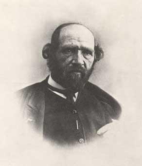
FIGURE IV
Alphonse Poitevin (1819 - 1882)
C'est en 1868 que M. Poitevin fit la découverte de la propriété que possèdent les matières gommeuses, gélatineuses, albumineuses, ou mucilagineuses, quand on les a mêlées avec du bichromate de potasse, [il s'agit de l'alun de chrome, que nous avons déjà étudiés de multiples fois dans ces pages, voir en recherche] et qu'on les a exposées à l'action de la lumière, de pouvoir prendre et retenir l'encre d'impression. Cette observation était fondamentale; elle devint le signal d'une foule de recherches. Elle donna d'abord le moyen de tirer des épreuves positives en excluant les sels d'argent. On n'a pas, en effet, tardé à reconnaître que les épreuves photographiques positives, quand elles ne sont pas tirées avec les soins nécessaires, surtout quand elles sont mal lavées et retiennent encore de l'hyposulfite de soude, s'altèrent, pâlissent, et finissent, au bout de quelques années, par disparaître en partie. De là le précepte théorique qui avait été posé, d'effectuer le tirage avec l'encre ordinaire d'impression, qui sert à tirer les gravures et les lithographies. Le fait découvert par M. Poitevin, de l'impressionnabilité d'un mélange de bichromate de potasse et de gélatine par la lumière, de telle sorte que la gélatine ainsi modifiée peut retenir l'encre d'imprimerie, vint répondre à cette indication de la théorie, et la gélatine chromatée fut appliquée au tirage des positifs. Ainsi fut créée la méthode du tirage des positifs inaltérables au charbon. Mais là ne se sont pas bornées les applications de la découverte de M. Poitevin. La gravure des épreuves photographiques en a été la conséquence. M. Poitevin lui-même est entré le premier avec éclat dans cette voie, qui a ouvert un horizon imprévu à la photographie. Il a, le premier, donné la solution du problème général de la gravure héliographique. M. Poitevin créa la photo - lithographie, c'est-à-dire l'art de transporter sur pierre une épreuve photographique, et de la tirer avec l'encre lithographique, comme une lithographie ordinaire. Sur une pierre convenablement grainée, on dépose un mélange d'albumine et de bi-chromate de potasse ; on place par-dessus le cliché négatif sur verre, d'une épreuve photographique, et on expose le tout à la lumière. La lumière modifie les parties de la pierre gélatinée qu'elle touche, de telle façon que l'encre ne pourra adhérer que sur les parties éclairées. L'encrage et le tirage s'opèrent ensuite comme pour une lithographie ordinaire.
M. Poitevin fit aussi cette autre découverte importante, que la gélatine mélangée de bi-chromate de potasse, ne peut plus se gonfler par l'eau, lorsqu'elle a été frappée par lu lumière, tandis que les parties non influencées par l'agent lumineux, se gonflent rapidement en absorbant l'eau. En prenant une empreinte de cette gélatine ainsi gonflée inégalement, et reproduisant ce moulage de gélatine en une planche de cuivre, grâce aux procédés galvanoplastiques, on arrive à former d'assez bonnes planches pour la gravure ou la typographie. La méthode de M. Poitevin, pour la gravure photographique, impose donc sur la propriété que possède la gélatine imprégnée de bichromate de potasse, et soumise ensuite à l'action de la lumière, de perdre la faculté de se gonfler dans l'eau, tandis que la gélatine ainsi préparée, mais non impressionnée par l'action lumineuse, se gonfle considérablement (au point d'augmenter d'environ six fois son volume), quand on la plonge dans l'eau. La curieuse modification subie, dans cette circonstance, par la gélatine imprégnée de bichromate de potasse, tient à ce que les sels d'acide chromique, et surtout les bichromates, quand ils sont mêlés à des substances organiques, s'altèrent chimiquement au contact des rayons lumineux, l'acide chromique passant, sous cette influence, à l'état d'oxyde de chrome. L'acide chromique, réduit par l'action de la lumière et changé en oxyde de chrome, transforme la gélatine en une substance particulière, qui diffère de la gélatine ordinaire en ce qu'elle n'est pas pénétrable par l'eau et, par conséquent, n'est pas susceptible de se gonfler par l'absorption de ce liquide. Grâce à la propriété du mélange qui vient d'être décrit, M. Poitevin transporte à volonté une épreuve photographique sur une pierre lithographique ou sur une lame de cuivre, pour en tirer des épreuves lithographiques sur papier ou des gravures sur cuivre. Pour le premier cas, c'est-à-dire pour la litho-photographie, le procédé de M. Poitevin consiste à déposer à la surface d'une pierre lithographique, de la gélatine mêlée avec une solution de bichromate de potasse ; on laisse sécher, puis on recouvre cette pierre avec un cliché négatif, et on l'expose à l'influence de la lumière solaire : sous cette influence, le bichromate passe à l'état d'oxyde de chrome et devient insoluble. Au moyen de lavages à l'eau, on enlève la gélatine qui n'a pas été altérée ; on passe sur la pierre le rouleau lithographique ou le tampon, et l'encre s'attache seulement aux endroits où il est resté de l'oxyde de chrome.
III. LES DISSOLVANTS
1. hyposulfite de soude
On prépare d'abord du sulfite de soude : pour ce faire, on prend une dissolution concentrée de carbonate de soude, que l'on divise en 2 parties égales; dans l'une des moitiés on fait passer un courant d'acide sulfureux, jusqu'au moment où la liqueur rougit sensiblement le papier de tournesol, et on ajoute à la liqueur l'autre moitié de la dissolution alcaline [E. Canseliet parle dans ses livres d'une phase ou, effectivement, l'une des deux parties d'un certain composé doit être réservée. Mais nous avons situé cette phase dans le 3ème oeuvre, au lieu que là, nous parlons du 2ème oeuvre qui a trait à la préparation du dissolvant]. On évapore et on fait cristalliser le sel par le refroidissement. L'acide sulfureux en excès a d'abord transformé le carbonate de soude en bisulfite de soude, qui ne rougit pas le papier de tournesol. On peut employer ce premier sel dans la fabrication du sucre de betterave [Fulcanelli parle au moins par deux fois de la betterave dans sa trilogie...] pour arrêter la fermentation des pulpes ; mais là n'est pas notre sujet. Puis, on prépare l'hyposulfite en faisant bouillir la dissolution de sulfite neutre avec de la fleur de soufre [oxyde de soufre]. On filtre, on évapore et, par refroidissement, l'hyposulfite cristallise en grands pans rhomboïdaux. L'intérêt de ce sel en héliographie est qu'il a le pouvoir de dissoudre très facilement le chlorure d'argent [lune cornée des vieux alchimistes]. Il y a alors production de chlorure de sodium et d'un hyposulfite double de sodium et d'argent. Il dissout très facilement l'oxyde de mercure et il y a production de sulfure de mercure. C'est un corps RÉDUCTEUR de premier ordre.
2. huile de lavande et pétrole
En 1832, Daguerre découvre les propriétés photosensibles du résidu de l'essence de lavande, substance résineuse qui durcit sous l'effet de la lumière. Associée à d'autres composants, en particulier les résidus des hydrocarbures comme le naphte ou le pétrole (qui étaient considérés comme des bitumes), cette substance forme un vernis plus sensible que le bitume de Judée, que Niépce propose de dénommer "physautotype". Ce procédé permet à Daguerre de mieux évaluer les modifications apportées à ses optiques, comme il l'explique à Niépce dans un courrier du 3 octobre, où il décrit un nouvel objectif de 6 pouces de foyer (162 mm), résultat de ses recherches : " Il m'est bien agréable de vous annoncer que j'ai fait une nouvelle combinaison qui est tellement préférable, que j'ai mis tous mes autres verres de côté, ne voulant plus m'en servir. La combinaison qui réussit si bien est un achromatique à deux verres qui, réunis et collés ensemble, n'en forment plus qu'un de courbure périscopique ; il faut de même un diaphragme dont l'ouverture est déterminée par le diamètre du verre. La netteté qui en résulte est telle qu'elle surpasse tout ce que nous avons obtenu même par le contact des gravures. "
IV. LE LION VERT
Dans son acception alchimique, le LION VERT est un symbole qui a trait au dispositif mercuriel. C'est lui qui dispose de la médiation du SOUFRE et du SEL. Nous ne pouvons, dans le cadre de cette section, rappeler tout ce que nous avons déjà dit sur le lion vert ; le lecteur pourra se reporter à l'outil recherche sur la page d'index.
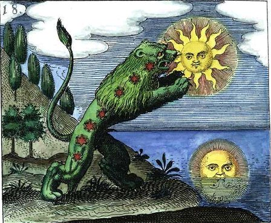
FIGURE V
Le LION VERT des alchimistes [d'après une figure d'un mss du Rosarium Philosophorum]
Aussi bien peut-on considérer le lion vert comme l'intercesseur ou MÉDIATEUR entre les deux Principes des philosophes. D'un côté leur SOUFRE ou SOLEIL. De l'autre côté, leur SEL ou LUNE. Le Soleil est assimilé de tout temps à l'OR ALCHIMIQUE : c'est la teinture de la PIERRE PHILOSOPHALE. La Lune est un symbole plus complexe que le Soleil [cf. prima materia et chimie et alchimie] et elle recouvre aussi bien le principe SEL ou CHRISTOPHORE - c'est-à-dire au sens propre du terme, la TOYSON D'OR - que le Mercure - mais il ne s'agit, notez-le bien, que du PREMIER MERCURE - voyez la section chimie et alchimie, au chapitre du SOUFRE BLANC - ou Mercure dit COMMUN, qui n'a d'ailleurs nul rapport avec le vif-argent vulgaire des chimistes [cf. sur ce point complexe de doctrine le pseudo Lulle et sa Clavicule]. Si nous transposons ces propos au domaine de la photographie, il n'est pas difficile de saisir l'allégorie qui n'est, au vrai, que légèrement dissimulée : elle va nous renvoyer aux recherches OPTIQUES de Nicéphore Niépce. [extraits de : Daguerre et l'Optique, article de Jacques Roquencourt; c'est nous qui soulignons]
1. lentilles achromatiques
Le 28 mai 1816, Nicéphore Niépce envoie à son frère Claude ses premiers essais d'enregistrement d'images grâce au muriate (chlorure) [p. 27] d'argent, accompagnés du commentaire suivant :
« Tu trouveras une des deux grandes et deux petites moins colorées que les deux autres quoique les contours des objets soient très bien marqués ; ceci provient de ce que j'avais trop rétréci l'ouverture du carton qui couvre l'objectif. Il paraît qu'il y a des proportions dont on ne peut pas trop s'écarter, et je n'ai peut-être pas encore trouvé la meilleure. Lorsque l'objectif est à nu, l'épreuve qu'on obtient paraît estompée et le spectre coloré a cette apparence-là, parce que les contours des objets sont peu prononcés et semblent en quelque sorte se perdre dans le vague. »
Ces observations, encore approximatives, résument ce qui va devenir pour Niépce l'une de ses préoccupations majeures : la recherche d'un objectif lui procurant des résultats " convenables ", dans un temps " acceptable ", avec une ouverture adéquate notions éminemment subjectives qui dépendent, en dehors de tout moyen de mesure, des exigences intuitives, culturelles et professionnelles de l'expérimentateur. Niépce utilise alors de simples lentilles biconvexes, qui ne sont pas corrigées des aberrations chromatiques et dont la courbure de champ et l'astigmatisme sont importants.
Le problème auquel Niépce était confronté résultait de la conséquence du temps considérable exigé pour l'impression lumineuse : en effet, un quart d'heure d'exposition à une vive lumière, était indispensable pour obtenir une épreuve. Aussi les premiers efforts de perfectionnement eurent-ils pour but de diminuer la durée de l'exposition de la plaque dans la chambre obscure. Ce résultat fut obtenu très-vite par des modifications apportées à l'objectif de la chambre noire. Daguerre avait fixé avec beaucoup de soin les dimensions de l'objectif correspondant à la grandeur de la plaque ; mais on reconnut bientôt que les règles qu'il avait posées à cet égard, excellentes pour la reproduction des vues et des objets éloignés, ne pouvaient s'appliquer aux objets plus petits ou plus rapprochés. On imagina alors de raccourcir le foyer de la lentille. Par cet artifice, on condensa sur la plaque une quantité de lumière beaucoup plus grande, et la plaque étant ainsi plus vivement éclairée, on put diminuer d'une manière notable la durée de l'exposition dans la chambre noire. Et c'est là où surgit l'analogie évidente entre la CONCENTRATION de la LUMIÈRE et le LION VERT des vieux alchimistes. Car, l'objet de l'une des parties du Grand Oeuvre n'a d'autre visée que de concentrer le principe SOUFRE afin qu'il soit infusé en quantité suffisante - sous l'espèce d'une véritable insémination, dont le résultat s'appelle le REBIS hermétique - dans le principe SEL. Là encore, rapporté à la photographie, il est évident que le REBIS ou hermaphrodite alchimique, n'est autre que la TRACE laissée par la lumière sur la MATIÈRE SENSIBLE.
Accru par le recours au bitume de Judée, peu sensible, le souci de la durée de l'exposition est réactualisé par Claude le 3 septembre 1824, lorsque celui-ci propose à son frère d'employer un miroir situé devant l'objectif pour accroître l'intensité de la lumière. Reprise par Nicéphore le 8 octobre, cette " ingénieuse idée " va se traduire par la commande, l'année suivante, d'un prisme ménisque à l'opticien Vincent Chevalier, inventeur de ce dispositif qui regroupe en un seul élément objectif et miroir réflecteur (fig. 3. Schéma du brevet du prisme ménisque Chevalier, 1823 (INPI)). Dans l'intervalle, le mariage du fils de Niépce, Isidore, le 22 janvier 1825, avec la fille d'un notable d'Autin, a introduit de nouveaux témoins de ses essais, en particulier Adolphe Bataille, [p. 28] comte de Mandelot (1785-1864), voyageur et excellent dessinateur, familier de l'emploi de la chambre claire et de la chambre obscure (fig. 2. A. Brochet, A. Bataille, comte de Mandelot, portrait carte, v. 1855). Grâce à ses connaissances du milieu artistique parisien, c'est de Mandelot qui est à l'origine des relations de Niépce avec Vincent Chevalier, ainsi qu'avec le graveur Lemaître.
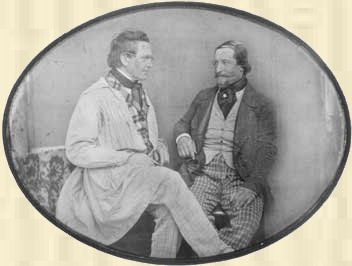
FIGURE VI
Charles Wheatstone (1802 - 1875) et Charles Chevalier (1804 - 1859)
« Je suis parvenu, lui répondit l'inconnu, à fixer sur le papier l'image de la chambre obscure. Mais je n'ai qu'un appareil grossier, une espèce de caisse de bois de sapin, garnie d'un objectif, que je place à ma fenêtre, et qui me sert à obtenir des vues de l'extérieur. Je voudrais me procurer votre nouvelle chambre noire à prisme, afin de continuer mes essais avec un appareil optique plus puissant et plus sûr. »
Charles Chevalier resta frappé d'étonnement. Il savait que le problème consistant à fixer les images de la chambre obscure, était poursuivi, en ce moment, par bien des expérimentateurs, entre autres par M. Talbot, en Angleterre, et par Daguerre, à Paris. Mais lui, Chevalier, regardait ces tentatives comme des entreprises chimériques, bonnes tout au plus à lui procurer, de temps en temps, l'occasion de vendre des objectifs et des appareils optiques à ces chercheurs de l'impossible. L'assurance et la tranquillité avec laquelle l'inconnu lui annonçait une découverte aussi capitale, bouleversaient notre opticien. Il aurait cru que son interlocuteur était fou, s'il n'eût été rassuré à cet égard par sa contenance et par ses paroles. Il se borna donc à lui répondre :
« Je connais plusieurs physiciens qui s'occupent de cette question. Mais ils ne sont encore arrivés à aucun résultat. Auriez - vous été plus heureux ? Je serais charmé d'en avoir la preuve, »
Pour toute réponse, le jeune homme tira de sa poche un vieux portefeuille usé et rapiécé. Dans ce portefeuille, il prit une feuille de papier enveloppée avec soin ; puis, la dépliant, il la plaça sur la vitrine de l'opticien : « Voilà ce que je puis obtenir, » dit-il avec simplicité. La surprise de l'opticien fut alors à son comble. Ce qu'il avait sous les yeux n'était rien moins qu'une photographie sur papier, et non une image imparfaite, mais une véritable épreuve positive, comme on l'appela plus tard. Le dessin, quoique confus sur les bords, en raison de l'imperfection de l'objectif employé, représentait une vue de Paris, celle que le pauvre inventeur avait devant ses fenêtres : une réunion de cheminées et de toits, avec le dôme des Invalides au second plan. Cette image prouvait que le pauvre jeune homme habitait quelque grenier des environs de la rue du Bac.
« Pourrai-je vous demander, dit l'opticien, avec quelle substance vous opérez pour obtenir un tel résultat ? »
Le jeune homme fouilla encore dans sa poche. Il en tira une fiole pleine d'un liquide noirâtre, et la posant sur la vitrine, à côté de l'épreuve photographique :
« Voilà, dit-il, la liqueur avec laquelle j'opère; et vous pourrez, ajouta-t-il, en suivant mes instructions, obtenir le même
résultat que moi. »
Après avoir donné à l'opticien les indications nécessaires pour opérer avec sa liqueur, l'inconnu se retira, emportant son épreuve photographique, et lui laissant sa fiole. Resté seul, Chevalier se hâta de mettre à profit les indications de l'inconnu. Il exécuta les opérations prescrites. Seulement, telle était alors l'ignorance générale en fait de photographie, qu'il fit maladresses sur maladresses, et par exemple, qu'il n'eut pas l'idée de préparer son papier impressionnable, dans l'obscurité. Il opéra en pleine lumière. Toute réussite était impossible, car, nous n'avons pas besoin de le dire, pour qu'un papier photogénique puisse fournir une épreuve dans la chambre noire, il faut qu'il ait été préparé dans une obscurité complète. Charles Chevalier ne pouvait donc obtenir aucun résultat en opérant comme il le fit, en plein jour. Il attendait une seconde visite de l'inconnu; mais ce dernier ne reparut pas, et on ne le revit jamais. Que devint ce pauvre inventeur ? La misère et la maladie se lisaient sur son visage. Quoique jeune encore, il était pâle et amaigri ; les privations matérielles et les angoisses de recherches passionnées, avaient altéré son organisation ; la lame avait usé le fourreau,
Povreté empesche les bons esprits de parvenir, a dit Bernard Palissy (1). L'hiver était triste et froid ; la vie était dure et difficile aux malheureux abandonnés sans ressources, dans la grande et égoïste capitale...]
Bientôt l'opticien Charles Chevalier, le même qui a joué, dans l'invention de la photographie, le rôle accessoire que nous avons fait connaître [il s'agit d'un épisode très curieux - cf. supra- où un personnage totalement inconnu semble avoir inventé un dispositif révélateur. La façon dont cette histoire est racontée par Louis Figuier rappelle en tout point celle où un alchimiste donna quelques parcelles de sa poudre de transmutation à Van Helmont : selon Jacques Sadoul, il ne pouvait s'agir que de Philalèthe...], imagina une modification de l'objectif, qui en doubla, pour ainsi dire, la puissance. La chambre noire qu'avait employée Daguerre, n'avait qu'un objectif. Charles Chevalier eut l'idée de réunir et de combiner deux objectifs achromatiques, pour en faire la lentille de l'instrument. Cette disposition permit tout à la fois, de raccourcir les foyers, pour concentrer sur le même point une grande quantité de lumière, d'agrandir le champ de la vue, et de faire varier à volonté les distances locales. La disposition et la combinaison de ces deux lentilles sont tellement ingénieuses, que, sans même employer, si on le veut, de diaphragme, on conserve à la lumière toute sa netteté et toute son intensité. Le système du double objectif permit de réduire de beaucoup la durée de l'exposition lumineuse ; on put dès ce moment opérer en deux ou trois minutes. Toutefois ce problème capital d'abréger la durée de l'exposition lumineuse ne fut complètement résolu qu'en 1841, grâce à une découverte d'une haute importance. Claudet, artiste français qui avait acheté à Daguerre le privilège exclusif d'exploiter en Angleterre les procédés photographiques, découvrit, en 1841, les propriétés des substances accélératrices. [amplification et accélération sont des constantes intervenant dans le symbolisme alchimique. Il suffit de voir l'une des gravures du Mutus Liber où l'auteur, Altus sans doute, parle de la MULTIPLICATION - il s'agit de la planche XIII, volet inférieur. Rappelons que, jusqu'à présent, aucune tentative faite dans le sens d'une explication de ces « multiplications » singulières n'a pu faire l'objet d'une interprétation rationnelle.Voyez Ripley et ses Douze Portes là-dessus. Eugène Chevreul a beaucoup écris sur cette multiplication : il l'associait au FERMENT des alchimistes qui, pour lui, ne pouvait être que l'OR ENTE qui leur servait de LEVAIN. La FERMENTATION de la PIERRE était, dans ce sens, parfaitement assimilable à l'acte du boulanger lorsqu'il fait lever sa pâte. Cf. Idée alchimique.] On voit par là que :
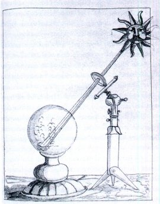
FIGURE VII
Action du Soleil sur le SEL, d'après mss. M79.2 BPH Amsterdam - on voit parfaitement le dispositif concentrateur, expression vulgaire du LION VERT [Merci à Alain Mauranne pour la gravure]
- 1° La concentration des rayons solaires est parfaitement assimilable à l'idée de la concentration de l'or alchimique, objet de la préparation du Mercure philosophique ;
- 2° De ce pouvoir concentrateur et amplificateur dépend la formation du REBIS ;
- 3° Outre cette concentration, on trouve l'idée d'une amplification ou MULTIPLICATION qui va dans le droit sens d'une formulation alchimique, qui abonde du côté du symbolisme le plus orthodoxe de la doctrine hermétique.
2. substances accélératrices
On donne, en photographie, le nom de substances accélératrices à certains composés qui, appliqués sur la plaque préalablement iodée, en exaltent à un degré extraordinaire, la sensibilité lumineuse. Par elles-mêmes, ces substances ne sont pas photogéniques, c'est-à-dire qu'employées isolément elles ne formeraient point une combinaison capable de s'influencer chimiquement au contact de la lumière ; mais si on les applique sur une plaque déjà iodée, elles communiquent à l'iode la propriété de s'impressionner en quelques secondes.
Les composés capables de stimuler ainsi l'iodure d'argent, sont nombreux. Le premier, dont la découverte est due à Claudet, est le chlorure d'iode ; mais il le cède de beaucoup en sensibilité aux composés qui furent découverts postérieurement. Le brome en vapeur, le bromure d'iode, la chaux bromée, le chlorure de soufre, le bromoforme, l'acide chloreux, la liqueur hongroise, la liqueur de Reiser, le liquide de Thierry, sont les substances accélératrices les plus actives. Avec l'acide chloreux on a pu obtenir des épreuves irréprochables dans une demi-seconde. La découverte des substances accélératrices permit de reproduire avec le daguerréotype l'image des objets animés. On put dès lors satisfaire au voeu universel formé depuis l'origine de la photographie, c'est-à-dire obtenir des portraits. Déjà, en 1840, on avait essayé de faire des portraits au daguerréotype ; mais le temps considérable qu'exigeait l'impression lumineuse avait empêché toute réussite. On opérait alors avec l'objectif à long foyer, qui ne transmet dans la chambre obscure qu'une lumière d'une faible intensité ; aussi fallait-il placer le modèle en plein soleil et prolonger l'exposition pendant un quart d'heure. Comme il est impossible de supporter si longtemps, les yeux ouverts, l'éclat des rayons solaires, on avait dû se résoudre à faire poser les yeux fermés. Quelques amateurs intrépides osèrent se dévouer, mais le résultat ne fut guère à la hauteur de leur courage. On voyait en 1840, à l'étalage de Susse, à la place de la Bourse, une triste procession de Bélisaires, sous l'étiquette usurpée de portraits photographiques.
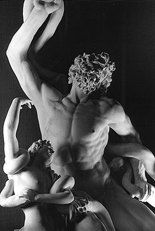
FIGURE VIII
Laocoon, Rome, Vatican [http://www.ashmol.ox.ac.uk/ash/departments/cast-gallery/highlght.html]
Grâce aux objectifs à court foyer, on put réduire l'exposition à quatre ou cinq minutes; alors le patient put ouvrir les yeux. Néanmoins il fallait encore poser en plein soleil. Ce soleil, qui tombait d'aplomb sur le visage, contractait horriblement les traits, et la plaque conservait la trop fidèle empreinte des souffrances et de l'anxiété du modèle. On s'asseyait avec cet air agréable que prend toute personne ayant la conscience de poser pour son portrait, et l'opérateur vous apportait l'image d'un martyr ou d'un supplicié. Pendant six mois, avec la prétention d'obtenir des portraits photographiques, on ne fit guère que multiplier les copies d'un même type : la tête du Laocoon. Rien qu'à voir ces traits crispés, ces faces contractées, ces spécimens cadavéreux, on eût pris en horreur la photographie. C'est là qu'ont trouvé leur source la plupart des préventions défavorables que les productions daguerriennes eurent longtemps à combattre. Les artistes passaient en ricanant devant ces déplorables ébauches. Cependant toutes les préventions durent disparaître, tous les préjugés durent tomber, en présence des résultats qu'amenèrent la découverte et l'emploi des substances accélératrices. Dès ce moment, la physionomie put être saisie en quelques secondes, et reproduite avec cette continuelle mobilité d'expression qui forme le signe et comme le cachet de la vie. Voyons quelques-uns de ces agents accélérants, dont les rapports avec Atalante et Mercure n'apparaîtrons point fortuits aux Amoureux de science.
- COMBINAISONS DE L'IODE AVEC LE CHLORE
PROTOCHLORURE D'IODE. ICl.
Ce composé est liquide, d'une couleur jaune rougeâtre, d'une consistance oléagineuse; il a une odeur piquante, une saveur faiblement acide et plutôt astringente. Il attire rapidement l'humidité de l'air. L'alcool et l'eau le dissolvent en se colorant en jaune ; l'éther le précipite sans altération de sa dissolution aqueuse. Cette dissolution, soumise à l'action de la chaleur, dégage du chlore et se colore en brun en dissolvant l'iode mis en liberté. Le protochlorure d'iode peut dissoudre une certaine quantité d'iode, qui s'en sépare quand on le soumet à la distillation. L'ammoniaque produit avec lui du chlorhydrate d'ammoniaque et le composé fulminant connu sous le nom d'iodure d'azote. (M. MITSCHERLICH.) On obtient le protochlorure d'iode en faisant agir le chlore sur l'iode en excès. Il peut aussi être préparé en distillant un mélange de 1 partie d'iode et de 4 parties de chlorate de potasse. Il se forme de l'iodate et du perchlorate de potasse, et il se dégage de l'oxygène et du chlorure d'iode. [rappelons que ce produit tache la peau et la corrode]
PERCHLORURE D'IODE. ICl3.
Le perchlorure d'iode est solide et cristallisable, d'une couleur jaune. Il est déliquescent, et répand à l'air des fumées blanches qui rappellent l'odeur du chlore et de l'iode. L'acide sulfurique le précipite de sa dissolution aqueuse. L'alcool et l'éther anhydre décomposent le perchlorure d'iode ; il se forme de l'acide chlorhydrique, de l'acide iodique et du protochlorure d'iode. L'acide iodique reste sous forme d'une poudre blanche. Le perchlorure d'iode se décompose en partie quand on le soumet à la distillation; il dégage une certaine quantité de chlore qu'il reprend lorsque la température s'abaisse. Lorsqu'on dissout dans l'eau le perchlorure d'iode et qu'on sature la dissolution par du carbonate de soude, il se forme du chlorure de sodium et de l'iodate de soude; il se précipite en même temps une grande quantité d'iode. C'est ce qu'indique l'égalité suivante :
Si l'on fait passer du chlore dans de l'eau qui tient de l'iode en suspension, il se forme d'abord du perchlorure d'iode ICl3; sous l'influence d'un grand excès de chlore et d'une proportion d'eau considérable, la liqueur se décolore et ne contient plus alors que de l'acide chlorhydrique et de l'acide iodique. Mais si l'on ajoute de l'acide sulfurique à cette dissolution, on voit se précipiter du perchlorure d'iode qui se forme de nouveau.
Le perchlorure d'iode est préparé en soumettant l'iode à l'action d'un courant de chlore sec et en excès.
Ce corps se combine avec certains chlorures métalliques, tels que les chlorures de potassium, de magnésium et le chlorhydrate d'ammoniaque. Ces composés ont pour formule générale MCI,ICl3. Ils cristallisent en prismes bien définis, de couleur jaune. Pour les obtenir, on traite directement une dissolution saturée d'un chlorure métallique par le chlorure d'iode ; on ajoute de l'acide chlorhydrique chaud et concentré, qui détermine la cristallisation du sel par le refroidissement. Ils peuvent se produire dans un grand nombre de circonstances, et notamment dans l'action de l'acide chlorhydrique sur les iodates.
- Bromure d'iode : cf. supra
- où nous voyons réapparaître la figure de Marc-Antoine Gaudin :
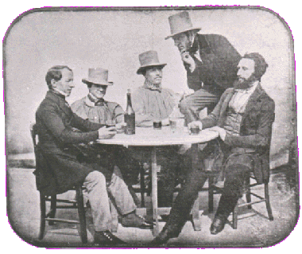
FIGURE IX
Marc-Antoine Gaudin, assis à droite (1801 - 1880) -
daguerréotype de Mmme Darlot
Marc Antoine, qui a fait des études de chimie, s'intéresse beaucoup à la photographie. Il fabrique en 1839 un appareil avec lequel il fait son premier daguerréotype. Il le nomme le " Daguerréotype Gaudin " et le commercialise. Il ouvre alors un studio avec l'opticien Lerebours. Il invente en 1840 la " liqueur Gaudin ", une substance accélératrice qui permet d'obtenir des clichés instantanés. Il publie entre 1843 et 1850 plusieurs ouvrages techniques sur la photographie. Il est récompensé en 1867 pour ses recherches en chimie par le prix Trémont. Il publie en 1873 L'Architecture des Atomes et meurt en 1880 -le 2 août - d'empoisonnement par les produits chimiques qu'il utilisait. Alexis Ignace ouvre lui aussi un studio et se lance dans la fabrication de plaques pour daguerréotypes grâce aux précieuses recommandations de son frère aîné Marc Antoine.
- prolongation de la sensibilité du collodion :
Un jeune physicien enlevé prématurément aux sciences, Taupenot, donna le moyen de communiquer aux plaques de verre recouvertes de collodion, la propriété de conserver pendant plusieurs jours leur sensibilité.
Quand on opère avec le collodion, il faut agir extemporanément ; car la sensibilité de l'enduit disparaît au bout de peu de minutes, par sa dessiccation, ce qui prive le paysagiste et le photographe voyageur, de l'avantage d'emporter au loin, avec lui, des lames de verre collodionnées préparées d'avance. C'était là un grave inconvénient pour la pratique de la photographie. Taupenot a parfaitement obvié à cette difficulté en ajoutant au collodion ioduré un peu d'albumine. Grâce à cette addition, la plaque sèche conserve toute la sensibilité de la plaque humide, et on peut l'employer après plusieurs jours de préparation. Il a été reconnu depuis, que le miel et quelques autres substances agglutinatives qui s'opposent au fendillement qu'éprouve par la dessiccation, la couche de collodion, produisent le même effet, c'est-à-dire permettent de conserver pendant plusieurs jours aux plaques collodionnées, leur sensibilité à la lumière. Le collodion étendu sur une lame de verre, est donc le meilleur moyen que l'on possède aujourd'hui pour la production des négatifs. Le cliché négatif sur verre donne des images d'une finesse presque égale à celle de la plaque daguerrienne.
V. LE REBIS
Le Rebis est ce que les alchimistes nomment l'androgyne hermétique, autrement dit, ne substance double, possédant à la fois des traits propres à SOL et d'autres propres à LUNA. C'est une constante du symbolisme et elle apparaît dans tous les textes jusque et y compris dans la Table d'Emeraude. Qu'est-ce que ce Rebis ? Il s'agit d'un AMALGAME PHILOSOPHIQUE - mais non point d'un amalgame au sens où pas un atome de mercure vulgaire n'y participe. Si l'on considère la voie sèche, le Rebis passe par plusieurs phases où il est nommé successivement LAITON, AIRAIN. Cela, jusqu'à ce que la CONJONCTION entre les deux principes soit dite RADICALE, chose qui opère lorsque les couleurs de la queue de paon sont visibles [cf. Mutus Liber]. Ce Rebis n'est autre que la PIERRE, encore à l'état embryonnaire, qui va croître et se multiplier dans son liquide nutritionnel qui est le MERCURE, l'ensemble formant le COMPOST ou MERCURE PHILOSOPHIQUE. L'opération ultime, la FIXATION, va consister à faire cristalliser la PIERRE par volatilisation progressive du dissolvant [MERCURE]. Tâchons d'appliquer ces données à l'IMPRESSION photographique et à son EXPRESSION secondaire.
1. De la noirceur à la blancheur
Nous avons dit, plusieurs fois, que les sels d'argent, naturellement incolores, particulièrement le bromure, le chlorure et l'iodure d'argent, étant exposés à l'action de la lumière solaire ou de la lumière diffuse, noircissent, [c'est la condition sine qua non : la NOIRCEUR est la première couleur que l'Artiste doit voir ; TOUS les textes s'accordent là-dessus. Sur les couleurs de l'oeuvre, il semble que le plus fin connaisseur ait été Jacques Tol -] par suite d'une modification chimique ou physique provoquée dans leur substance, par la lumière. D'après cela, si l'on place au foyer d'une chambre noire, une surface imprégnée d'iodure d'argent, une feuille de papier, par exemple, l'image formée par l'objectif s'imprimera sur le papier, parce que les parties éclairées noirciront, et noirciront d'autant plus qu'elles recevront plus de lumière, tandis que les parties obscures, soustraites à l'influence lumineuse, laisseront au reste du papier sa blancheur. [cf. la Lux Obnubilata de Crasselame] L'empreinte, ainsi obtenue, n'est que très-peu visible au moment où l'on retire la feuille de papier de la chambre obscure. [il s'agit là du LAITON à proprement parler : c'est la première révélation, fugitive, de la conjonction des principes : SOL et MATIÈRE SENSIBLE.] - cf. infra si l'on souhaite passer l'exemple.
Nous allons ici donner l'exemple du LAITON formé à partir de l'association SOL et LUNE CORNÉE. La lune cornée est de tous les composés d'argent celui qui est le plus sensible aux rayons lumineux. Nous avons déjà établi comment cette propriété avait servi de base à la photographie. Les altérations que ce composé éprouve à la lumière ont été reprises dans ces derniers temps par M. Tomasi en Italie, et par M. Riche en France. M. Tomasi (Comptes rendus, Institut lombard, 1878, et Journ. pharm. et chim., mars 1879, p. 293), ayant mis du chlorure eu suspension dans l'eau et l'ayant exposé à la lumière, a obtenu la réduction ordinaire; mais il n'a pu constater que des traces d'acide chlorhydrique dans le liquide, même en opérant sur 9 grammes de chlorure d'argent. D'autre part, le chlorure violet desséché et réduit par le zinc a donné une quantité le chlore correspondant à AgCl et non à Ag2Cl. Ces expériences viendraient contredire l'opinion générale des chimistes, qui pensaient que le chlorure, par la lumière, perdait la moitié de son chlore. Dans une seconde note, le même auteur prétend :
- 1° que le chlore mis en suspension dans de l'eau saturée de chlore prend au soleil une teinte violette qui ne se modifie plus :
- 2° que le chlore sec enfermé dans un tube scellé devient violet à la lumière, mais reprend sa couleur normale dans l'obscurité;
- 3° que le chlorure violet sec, agité dans l'obscurité avec de l'eau de chlore, reprend sa couleur blanche
après quelques heures;
- 4° que le chlorure violet bouilli dans l'acide azotique, puis lavé, redevient bleu au contact de l'eau de chlore.
Dans une note postérieure à la précédente. M. Riche (Journ, pharm. et chim, t. XXIX, p. 392.) n'admet pas que le chlorure argentique ne soit pas décomposé par l'action solaire, et il publie en réponse les résultats de diverses expériences qu'il a entreprises sur la même question depuis douze ans. Ces essais ont porté sur des poids de chlorure d'argent qui vont de 0.300 à 0.932; l'exposition à la lumière a varié de huit mois à deux ans. A la fin de la période d'expérience, ce savant a trouvé : qu'il existait toujours du chlore en dissolution dans l'eau et que le poids d'argent contenu dans le précipité insolé était variable. De la comparaison des nombres relevés, il conclut :
- 1° Que la lumière attaque incontestablement le chlorure d'argent en présence de l'eau; que la liqueur devient acide et à un moment donné exhale même l'odeur du chlore; que l'action est très lente ; qu'il faut renouveler souvent les surfaces;
- 2° Que les quantités d'argent contenues dans les divers chlorures insolés ne correspondent ni à AgCl, ni à Ag2Cl, mais plutôt à Ag8Cl2. Il est permis, toutefois, de penser qu'à l'époque ou l'on a arrêté l'opération, la réduction n'était pas encore complète, et qu'il existait au centre des flocons des parties non réduites, comme il était facile de le prouver en traitant le chlorure par l'ammoniaque. Sous l'influence de ce réactif, le chlorure insolé se scindait effectivement en deux parties : chlorure d'argent qui entrait en dissolution et argent métallique.
Plus récemment encore (Journ. pharm. et chim., 8e série, t.1, p. 224.), M. Tomasi a repris ses expériences et en tire ces conclusions : que le chlorure d'argent éprouve sous l'influence des rayons solaires une décomposition partielle proportionnelle à sa surface, au temps d'insolation et à l'intensité de la lumière; si bien que le chlorure insolé sérail formé d'un mélange en proportions variables de AgCl, Ag2Cl et Ag. Ces conclusions ressemblent beaucoup à celles de M. Riche. Lorsqu'on projette un spectre sur un écran recouvert de chlorure d'argent fraîchement préparé, on constate d'abord, comme on pouvait le prévoir d'après ce que nous savons déjà, que le sel noircit dans la partie la plus réfrangible seulement. Mais si, avant l'action du spectre, l'écran recouvert de chlorure a été soumis soit à la lumière diffuse, soit à l'action des rayons les plus réfrangibles, on s'aperçoit, dans la seconde action du spectre, que la portion impressionnée est d'abord plus grande; mais, fait plus remarquable, c'est qu'il s'est formé du côté des rayons les moins réfrangibles d'abord une teinte rose, suivie d'une couleur bleue, tandis que dans la région la moins lumineuse il s'est produit une légère décoloration (E. Becquerel, De la lumière, t. II, p. 84.). Si l'on exalte la sensibilité de la couche de chlorure en l'imprégnant d'azotate d'argent, le spectre de réduction développé par la lumière s'étend encore plus loin vers le bleu et arrive jusqu'au rouge en présentant deux maxima bien marqués.
Les matières organiques susceptibles, sous l'influence d'une légère température, de réduire le chlorure d'argent, le sensibilisent comme le nitrate. Bien mieux, Talbot [1, 2, 3, 4, 5, 6, 7] a montré que l'action réductrice du composé organique pouvait s'exercer aussi bien après que le chlorure avait subi l'action de la lumière, et alors même que la réduction était presque insensible a l'oeil nu. Dans ces conditions, le produit organique révèle l'action de la lumière en réduisant l'argent dans tous les endroits où elle a frappé, et en proportion de son activité chimique (Talbot, Phil. Mag., t. XIV, p. 196.). Cette curieuse observation a donné naissance à la photographie sur papier.
Nous aurons soin à ce sujet de ne pas oublier une remarque de M. Niépce de Saint-Victor (Journ. pharm. et chim., 5e série, t. VI, p. 335) qui ne le cède certainement pas à la première en intérêt. Au lieu d'impressionner le chlorure d'argent le premier, dit ce physicien, on peut, au contraire, soumettre d'abord à l'action de la lumière l'agent révélateur. Il emmagasine l'activité chimique des rayons actifs, et, lorsqu'on le mettra en contact avec le sel d'argent, il le réduira dans les points impressionnés. L'expérience est facile à réaliser avec un papier imprégné d'acide pyrogallique, que l'on expose dans la chambre noire et que l'on met ensuite en contact avec le sel d'argent dans l'obscurité. Mais voici qui est encore plus remarquable : du papier non préparé et insolé possède la propriété de noircir dans l'obscurité le papier sensible sur lequel on le place. Il a fait provision lui-même d'activité photo-chimique et il peut la rendre manifeste, fut-ce même après trois mois de conservation dans un étui de fer-blanc, ou dans n'importe quel gaz. Cette activité persistante n'est pas cependant générale à tous les rayons. Pour le démontrer, on prend une feuille de papier imprégnée d'azotate d'urane ou d'acide tartrique, et on l'expose non pas à la lumière blanche, mais sous un écran formé de plusieurs bandes offrant les diverses teintes du spectre. Si, après avoir ainsi insolé ce papier, on le porte dans l'obscurité et on l'arrose sous forme de traînée par une solution de nitrate d'argent, il se produira immédiatement une coloration très forte dans les parties exposées aux rayons bleu, indigo, violet, et nulle teinte dans les autres. Si l'on renouvelle la même expérience avec du papier amidonné, et qu'après l'avoir semblablement insolé on l'immerge dans une solution d'iodure de potassium, il se produira une couleur intense sur les parties influencées par les rayons les plus réfrangibles, mais qui ira en décroissant et deviendra nulle dans les régions correspondantes aux rayons moins réfrangibles.
Poursuivons : cette empreinte, on la fait apparaître à l'aide de certains agents chimiques, qu'on nomme, pour cette raison, révélateurs : tels sont l'acide gallique, l'acide pyrogallique et le sulfate de fer.
- Sur l'acide gallique : Nous commencerons par l'acide tannique ou tanin, substance qui, par sa faible acidité et par la nature de ses applications, pourrait, jusqu'à un certain point, être rangée avec les substances colorantes.L'écorce du chêne, du marronnier d'Inde, de l'orme, du saule, les feuilles de certains arbres, plusieurs racines vivaces des plantes dont les liges meurent annuellement, l'enveloppe de plusieurs fruits charnus, quelques sèves, quelques sucs, enfin certaines excroissances végétales, telles que la noix de galle (Excroissance qui se montre sur les chênes), contiennent une substance que l'on désigne sous le nom de tanin. Quelle qu'en soit la provenance, le tanin jouit toujours de la propriété de former des combinaisons insolubles avec l'albumine, le gluten, la gélatine, la fibrine, les tissus, l'épiderme et la peau des animaux; mais tous les tanins ne se ressemblent pas, et toutes les plantes qui en contiennent en sont différemment pourvues.
- Extraction et propriétés de l'acide tannique ou tanin. Le tanin de la noix de galle, ayant été le mieux étudié, sera le seul que nous examinerons. Voici comment on l'extrait : On tasse la noix de gallo, grossièrement pulvérisée, dans une allonge dont le col est bouché par un tampon de colon terminé par une mèche; on introduit cette allonge dans le goulot d'une carafe; on finit de la remplir avec de l'éther du commerce, et on la bouche: l'éther filtre à travers la noix de galle, et dissout, par sa partie aqueuse (L'éther du commerce renferme 10 pour 100 d'eau.), le tanin qu'il rencontre. Le liquide qui se réunit dans la carafe se divise en deux couches : l'une lourde, sirupeuse , ambrée et formée d'une solution aqueuse de tanin, l'autre, légère, verdâtre et formée d'une dissolution éthérée de quelques matières organiques. On enlève cette dernière, on lave plusieurs fois avec de l'éther la couche pesante, puis on la transporte dans le vide de la machine pneumatique. On obtient ainsi le tanin très-pur, sous forme d'une masse spongieuse, légère, brillante, sans apparence de cristallisation, rarement blanche, le plus souvent jaunâtre. Le tanin est inodore; sa saveur est purement astringente et sans aucune amertume; il est très-soluble dans l'eau; sa dissolution a une réaction faiblement acide. L'acide tannique ou le tanin précipite presque toutes les dissolutions métalliques, et les précipités ont souvent des couleurs caractéristiques : aussi est-ce un réactif très-souvent employé dans les laboratoires. Une de ses réactions les plus importantes est celle qu'il manifeste lorsqu'il est mis en contact avec une dissolution de peroxyde de fer: la liqueur prend une coloration d'un bleu si intense, qu'elle paraît noire. L'encre ordinaire n'est qu'un tannate de sesquioxyde de fer tenu en suspension dans de l'eau épaissie par de la gomme. Avec les sels à base de protoxyde de fer, le tanin ne produit aucune réaction : cela explique pourquoi les caractères tracés avec une encre pâle noircissent en séchant. On prépare l'encre avec du tanin et du sulfate de fer ordinaire (sulfate de protoxyde de fer) (On prépare l'encre en faisant bouillir une partie de noix de galle dans 15 parties d'eau; on filtre la liqueur et on la mêle avec une demi-partie de sulfate de fer, et autant de gomme, on y ajoute souvent du sucre et du sulfate de cuivre. On abandonne le mélange à l'air jusqu'à ce qu'il ait prit une teinte noire foncée.); or, pour qu'un pareil mélange devienne noir, il faut que le protoxyde de fer passe à l'état de peroxyde, phénomène qui, dans le cas de ne peut avoir lieu que par l'action lente de l'air. Le tanin ne se combine pas seulement avec les bases minérales, mais encore avec un grand nombre d'alcaloïdes et avec plusieurs acides minéraux : Il a une affinité toute spéciale pour le derme des animaux. Ce tissu, plongé dans une dissolution de tanin, l'absorbe d'une manière si complète, qu'il pourrait servir à le doser : on n'aurait qu'à le peser avant et après l'absorption. Le tanin est employé spécialement pour le tannage des peaux et pour corriger les vins qui ont tourné au gras, c'est-à-dire qui ont subi un commencement de fermentation visqueuse. Introduit dans l'économie animale, il paraît se transformer en acides gallique, pyrogallique et métagallique (Wöhler et Frerichs).
- Préparation et propriétés de l'acide gallique. - Pour obtenir l'acide gallique, on abandonne à la température de 28 à 30° de la noix de galle pulvérisée et humectée; après plusieurs mois, la matière se recouvre de petits cristaux blanchâtres : alors on laisse dessécher la masse, puis on la traite par l'alcool bouillant, qui ne dissout que l'acide gallique, dont il laisse déposer la plus grande partie par le refroidissement. On peut également préparer cet acide on introduisant du tanin dans de l'acide sulfurique, moyennement étendu et bouillant, tant qu'il peut s'en dissoudre : pur le refroidissement il se dépose de l'acide gallique coloré. On le fait cristalliser plusieurs fois pour le débarrasser d'acide sulfurique, et puis, après en avoir fait une nouvelle dissolution, on le précipite par l'acétate de plomb. Le gallate de plomb qui se formera sera suspendu dans l'eau bouillante, que traversera un courant d'hydrogène sulfuré; dès que tout le plomb aura été converti on sulfure de plomb, on filtrera la liqueur, qui, en se refroidissant, laissera déposer l'acide gallique cristallisé et incolore. L'acide gallique cristallise en prismes confus incolores, solubles dans 100 p. d'eau froide et dans 3 p. seulement d'eau bouillante. Il est très soluble dans l'alcool, très peu soluble dans l'éther, ne précipite pas la gélatine et ne se fixe pas sur les membranes animales: propriétés négatives qui le séparent nettement du tanin. L'acide gallique se comporte comme le tanin vis-à-vis des sels de fer. Il ne précipite pas les sels au minimum et forme un précipité bleu noir dans les sels au maximum. Sous l'influence de la lumière solaire, il réduit rapidement l'azotate d'argent et le perchlorure d'or : aussi est-il employé dans la préparation des papiers photographiques.
[on voit, au plan hermétique, que ces révélateurs ont pour fonction de rendre l'occulte manifeste ; là encore on consultera avec profit la Lux Obnubilata de Crasselame] Une pareille image ne pourrait être conservée en plein jour, car le papier est encore imprégné d'iodure d'argent non décomposé, qui noircirait à la lumière. Il faut donc le débarrasser de ce sel d'argent. On y parvient en plongeant l'épreuve dans une dissolution d'hyposulfite de soude ou de cyanure de potassium ; le sel d'argent non impressionné par la lumière est dès lors enlevé. Cette opération s'appelle fixage. [c'est la phase ultime du processus, là encore en parfaite analogie avec les opérations alchimiques où l'Artiste doit assurer la parfaite fixation de sa matière] On obtient ainsi une espèce de silhouette dans laquelle les parties éclairées du modèle sont représentées par une teinte noire, et les ombres par des blancs ; c'est ce que l'on nomme une image négative. Maintenant, si l'on place cette image négative sur une feuille de papier imprégnée de chlorure d'argent, et que l'on expose le tout à l'action du soleil, ou de la lumière diffuse, l'épreuve négative laissera passer le jour à travers les parties transparentes du dessin, et lui fermera passage dans les portions opaques. Les rayons lumineux allant ainsi agir sur le papier sensible, placé au contact de l'épreuve négative, donneront naissance à une image sur laquelle les clairs et les ombres seront placés dès lors dans leur situation naturelle. On aura formé ainsi une image directe ou positive. Bien entendu qu'il faut fixer, comme on l'a fait pour le cliché négatif, à l'aide des agents fixateurs déjà employés pour l'image négative.
2. Fixation : de la blancheur à la rougeur
Après la découverte des substances accélératrices, le perfectionnement le plus important que reçut la photographie sur métal, consista dans la fixation des épreuves. Les images daguerriennes obtenues à l'origine, étaient déparées par un miroitement des plus choquants. En outre, le dessin ne présentait que peu de fermeté, puisque le ton résultait seulement du contraste formé par l'opposition des teintes du mercure et de l'argent. [il s'agit exceptionnelelement du mercure vulgaire. Il est en effet très rare de voir ainsi accolés l'argent et le mercure pour la raison que les alchimistes ont voilé leurs matières sous l'hiéroglyphe de la Lune qui se partage en deux, si l'on nous suit bien, deux arcanes majeurs de l'oeuvre : le PREMIER MERCURE - cf. chimie et alchimie - ou SEL et le MERCURE PHILOSOPHIQUE] Enfin (et c'était là un inconvénient des plus graves), l'image était extrêmement fugitive [manifestant là encore son caractère mercuriel accusé, cf. Atalante] ; elle ne pouvait supporter le frottement : le pinceau le plus délicat, promené à sa surface, l'effaçait en entier.
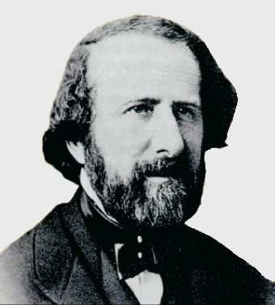
FIGURE X
Hippolyte Fizeau (1819 - 1896)
Un physicien français, M. Fizeau, fit disparaître tous ces inconvénients à la fois, en recouvrant l'épreuve photographique d'une légère couche d'or. Il suffit, pour obtenir ce résultat, de verser à la surface de l'épreuve, une dissolution de chlorure d'or mêlée à de l'hyposulfite de soude, et de chauffer légèrement : la plaque se recouvre aussitôt d'un mince vernis d'or métallique. La découverte du fixage des épreuves, faite par M. Fizeau, est le complément le plus utile qu'ait reçu la photographie sur métal. Elle permit, tout à la fois, de rehausser le ton des dessins photographiques, de diminuer beaucoup le miroitage, et de communiquer à l'épreuve une grande solidité, c'est-à-dire une résistance complète au frottement et à toutes les actions extérieures. Comment la dorure d'un dessin photographique peut-elle communiquer à celui-ci la vigueur de ton qui lui manquait, et faire disparaître en grande partie le miroitage ? C'est ce qu'il est facile de comprendre. L'or vient recouvrir à la fois l'argent et le mercure de la plaque ; l'argent, qui forme les noirs du tableau, se trouve bruni par la mince couche d'or qui se dépose à sa surface : ainsi les noirs sont rendus plus sensibles, et le miroitage de l'argent n'existe plus ; au contraire, le mercure, qui forme les blancs, acquiert, par son amalgame avec l'or, un éclat beaucoup plus vif, ce qui produit un accroissement notable dans les clairs. Le ton général du tableau est, d'ailleurs, singulièrement rehaussé par l'opposition plus vive que prennent les teintes des deux métaux superposés. Tous ces avantages ressortent d'une manière surprenante, si l'on compare deux épreuves daguerriennes, dont l'une est fixée au chlorure d'or, et l'autre non fixée. La dernière, d'un ton gris-bleuâtre, paraît exécutée sous un ciel brumeux et par une faible lumière ; l'autre, par la richesse de ses teintes, semble sortir de la chaude atmosphère et du beau ciel des contrées méridionales. Quant à la résistance qu'une épreuve ainsi traitée oppose au frottement, elle s'expliquera sans peine, si l'on remarque que le mercure, qui tout à l'heure formait le dessin à l'état de globules infiniment petits et d'une faible adhérence, est maintenant recouvert d'une lame d'or, qui, malgré son extraordinaire ténuité, adhère à la plaque en vertu d'une véritable action chimique.
Conclusion
Nous ne pouvons développer plus avant cette section qui prendrait rapidement un caractère démesuré... Néanmoins, il nous semble avoir montré plusieurs points intéressants qui, jusqu'à présent, n'avaient point encore été développés. Résumons ces points :
point 1 : il existe des analogies incontestables entre des points touchant à la photographie et à l'alchimie. Ces points de jonction sont multiples et touchent, pour ce qui concerne l'alchimie, à des points fondamentaux du symbolisme : SOL et LUNA.
point 2 : on retrouve, et sous une forme presque inchangée, les trois principes de l'oeuvre : SEL, SOUFRE et MERCURE. Le SEL est représenté par la MATIÈRE SENSIBLE. Le SOUFRE est la LUMIÈRE du soleil. Le MERCURE, comme d'habitude, est la partie la plus complexe. Il associe les moyens de dissolution, de lavage et de fixation, ainsi qu'un principe nouveau : celui de RÉVÉLATION.
point 3 : on retrouve de nombreuses substances chimiques manipulées par les vieux alchimistes et dont certaines ont été nommément décrites par Fulcanelli et E. Canseliet. Ainsi en est-il de la lune cornée, de la pierre infernale, du sucre de Saturne [acétate de plomb]. La noix de galle, l'acide gallique méritent une mention spéciale et nous incitons le lecteur à se reporter à nos sections de symbolisme général et au Philalèthe [Introïtus, VI : l'Air des Sages].
point 4 : le point crucial est, là encore, comme dans d'autres interprétations du symbolisme alchimique, le traitement spécial du REBIS. Il apparaît pour ainsi dire virtuellement lorsque la lumière touche la matière sensible : c'est l'IMPRESSION. L'art consiste à conserver l'image et à la restituer : c'est l'EXPRESSION.
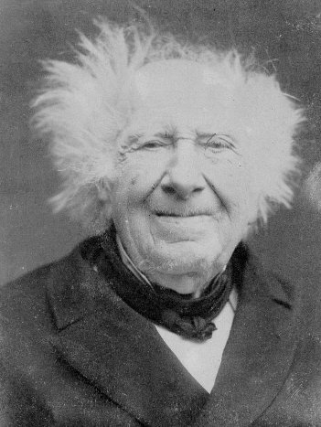
Eugène Chevreul
Plus d'un motif m'a engagé à rendre compte d'un ouvrage historique sur l'héliographie, afin de montrer comment cette découverte incontestable de Joseph Nicéphore Niépce a donné successivement naissance à la daguerréotypie et à la photographie. En retraçant, non les détails, mais les principaux traits de la découverte mère et des deux arts ses fils, je serai juste envers l'inventeur dont le génie fut méconnu dans son pays, sans manquer de l'être à l'égard de l'appréciation du mérite de ceux qui, à l'exemple de Daguerre et de Talbot, ont marché dans la route que leur avait ouverte Nicéphore Niépce. On parle beaucoup d'inventions; elles sont le sujet d'un grand nombre d'écrits, depuis l'histoire d'une science jusqu'aux articles d'une revue ou d'un journal; mais, pour peu qu'on soit capable d'en apprécier la valeur, en dehors des écrits relatifs à l'histoire des sciences mathématiques dont les éléments ont une précision réelle, pense-t-on que, pour écrire l'histoire des sciences naturelles ou celle d'une de leurs branches, il y ait beaucoup d'écrivains qui soient à la hauteur de leur sujet ? Je ne le crois pas. S'il n'appartient qu'à quelques esprits d'écrire avec succès sur l'histoire des sciences mathématiques ou d'une de leurs branches, reconnaissons que l'accomplissement de l'oeuvre présente moins de difficultés que s'il s'agissait d'autres sciences eu égard au nombre des éléments à prendre en considération, à la difficulté de les démêler nettement, et à la diversité de leurs origines; de sorte que ces éléments ne se présentent point à l'historien avec la simplicité des éléments des sciences mathématiques; malgré l'instruction qu'il pourra avoir, il arrivera rarement qu'il soit capable de tirer parti de toutes les sciences dont la connaissance lui serait cependant nécessaire pour mener son oeuvre à bonne fin. Il existe une condition sans laquelle l'histoire d'une science laissera toujours à désirer, si, comme la physique, la chimie, la physiologie, etc., elle recourt à l'expérience, c'est que l'auteur connaisse celle-ci par sa pratique propre, et que lui-même ait fait des découvertes originales dans les sciences dont il veut retracer les progrès. Il est entendu, d'ailleurs, que tout historien d'une science doit avoir la conscience du magistrat, convaincu que ce serait forfaire à son ministère, s'il négligeait de s'éclairer des lumières indispensables pour que justice soit rendue à qui le mérite, quand l'heure est venue de prononcer un jugement définitif.
Je ne sache pas de sujet dont l'histoire prête autant que celle de l'héliographie pour mettre à découvert toutes les difficultés qu'il faut surmonter quand il s'agit de porter un jugement équitable autant qu'éclairé sur les mérites respectifs de son inventeur et des hommes auxquels on doit la daguerréotypie et la photographie. Nous avons vu en France les grands corps de l'État décerner à deux personnes des récompenses nationales inégales, dont la plus grande ne fut pas donnée à l'auteur de la découverte originale, et, pour justifier cette préférence, nous avons vu le rapporteur du projet de loi à la Chambre des députés, Arago, se plaire à rabaisser le mérite de Nicéphore Niépce pour exalter celui de Daguerre dans le passage suivant, que nous extrayons de son rapport (page 9).
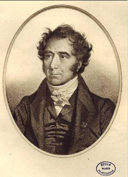
FIGURE XI
François Arago (1786 - 1853)
« C'est que dans les produits d'une méthode aussi défectueuse tous les effets résultant des contrastes d'ombre et de lumière étaient perdus; c'est que, maigre ces immenses inconvénients, on n'était pas sûr de réussir; c'est qu'après des précautions infinies, des causes insaisissables, fortuites, faisaient qu'on avait tantôt un résultat passable, tantôt une image incomplète, ou qui laissait ça et là de larges lacunes; c'est enfin qu'exposés aux rayons solaires les enduits sur lesquels les images se dessinaient, s'ils ne noircissaient pas, se divisaient, se séparaient par petites écailles. »
Maintenant voici le coup de grâce pour Nicéphore Niépce, et l'exaltation pour Daguerre :
« En prenant la contre-partie de toutes ces imperfections, ajoute Arago, on aurait une énumération à peu près complète de la MÉTHODE (sic) que M. Daguerre a découverte à la suite d'un nombre immense d'essais minutieux, pénibles, dispendieux. »
Gay-Lussac, honorable à tous égards, qui fut le rapporteur du projet de loi concernant l'invention de l'hélioqrapnie, à la chambre des pairs, ne parla pas, pour ainsi dire, de Nicéphore Niépce. Certes, en m'abstenant de toute remarque sur les rapports faits à la Chambre des Députés et à la Chambre des Pairs en 1839, je craindrais qu'une opinion différente des opinions des rapporteurs, énoncée trente-trois ans après la leur, fût considérée comme insignifiante ou trop tardive, mais, en soumettant deux remarques à mes lecteurs, je serai justifié sans doute. La première est qu'en 1889 un Anglais, membre de la Société royale de Londres, M. Bauër, qui avait connu Nicéphore Niépce en 1827 à Londres, annonça des faits qui étaient loin d'être d'accord avec l'opinion d'Arago.
« Maintenant, dit M. Bauër, je ne pense pas que M. Niépce ait pu donner quelque idée imparfaite il y a quinze ans, car les spécimens apportés par M. Niépce, et exposés en Angleterre en 1827 (ET DONT QUELQUES-UNS SONT ENCORE ENTRE MES MAINS) étaient tout aussi PARFAITS que les produits de M. Daguerre décrits clans les papiers français de 1839, et cependant c'est la première fois que le nom, dé M. Niépce est mentionné !...»
M. Bauër avait donc vu en 1827 ce qu'Arago n'avait pas vu en 1839; Nicéphore Niépce n'était donc pas IMPUISSANT, et dès lors Daguerre n'était pas l'inventeur de la reproduction permanente des images de la chambre noire ! Je vais plus loin : admettez l'opinion d'Arago, et supposez que, parmi ses collègues les députés, il s'en fût trouvé un, logicien animé de l'amour de la vérité, n'eût-il pas été fondé à dire au rapporteur qu'après avoir montré l'impuissance de la méthode de M. Niépce et l'EXCELLENCE de celle de Daguerre, il ne trouvait pas conséquent de demander une pension de 4000 francs pour le fils de M. Niépce et une pension de 6000 francs seulement pour Daguerre. Je passe à la seconde remarque.
Il serait vraiment superflu de revenir, en 1872, un tiers de siècle après la récompense nationale décernée à Daguerre comme inventeur de la reproduction fixe des images de la chambre noire, si l'opinion en faveur de laquelle j'écris fût devenue celle du public éclairé par les réclamations de Bauër et d'un grand nombre de Français en faveur de Nicéphore Niépce. Mais il n'en est point ainsi, surtout quand un membre de l'Institut, dans une séance des cinq académies, a parlé de Daguerre comme inventeur de cette branche de la physique devenue si féconde en si peu d'années, et qui, chez tous les peuples dits civilisés, satisfait à tant de besoins divers. Je suis trop partisan des libertés académiques et des convenances pour me permettre la moindre réflexion critique sur ce qui se passe dans chaque académie de l'Institut, aussi me garderai-je bien de la moindre critique sur le prix décerné, en 1714, par l'Académie française, à l'abbé du Jarry, dans la pièce couronnée duquel on lit le vers devenu célèbre
Pôles glacés, bruslants, où sa gloire connue
[(1) De cendres en ce jour couvrant son diadème,
Il ignore son rang, se le cache à lui-même.
Isles, vastes climats, lointaines régions,
Dont l'infidèle nuit couvre les nations,
Pôles glacés, bruslants, où sa gloire, connue
Jusqu'aux bornes du monde, est chez nous parvenue,
Puisse la renommée, en louant ce grand Roy. ....
(P. 71 et 73, poème chrétien qui a remporté le prix de poésie, au jugement de l'Académie française, en l'année 1714, par l'abbé du Jarry.) ]
A cette époque un lien commun ne réunissait pas ensemble les académies, et, d'ailleurs, le vers de l'abbé du Jarry ne blessait personne, et devait plaire, je ne dis pas aux amis de l'opposition, mais aux amis de l'antithèse. Les choses ont changé; aujourd'hui cinq académies sont les parties d'un Institut de France, le lien commun qui les unit est consacré par une séance publique annuelle où chacune d'elles est représentée par un lecteur de son choix, qui a soumis son écrit à une commission composée des bureaux des cinq académies. Dans la séance du 25 d'octobre 1871, je fus d'autant plus affecté d'entendre Daguerre proclamé l'inventeur de la photographie par le lecteur de l'Académie française, que M. Legouvé eut plus de succès par la finesse de ses observations sur les moeurs du jour et par le piquant des réflexions qu'elles lui suggérèrent. Je savais trop l'histoire de Nicéphore Niépce, les obstacles qu'il avait dû surmonter m'étaient trop connus, pour ne pas faire des observations dans la séance de l'Académie des sciences du 30 d'octobre qui suivit la séance des cinq académies de l'Institut. Je me sais d'autant plus de gré de ces observations consignées dans le compte rendu de la séance, que le général Morin, lecteur de l'Académie des sciences dans la séance du 20, déclara avoir réclamé au sein de la commission composée des bureaux des cinq académies. Après avoir entendu la lecture de M. Legouvé, après avoir entendu les paroles de M. le général Morin, je ne doutai plus de l'opportunité d'une réclamation faite dans le Journal des Savants avec les détails convenables à porter la conviction dans tous les esprits. Voilà l'origine des articles qu'on va lire, et qui jamais n'auraient été composés, si l'opinion énoncée par M.Arago en faveur de Daguerre, au détriment de Nicéphore Niépce, n'avait pas encore des partisans; au sein même de l'Institut,ainsi que le témoigné la lecture faite dans la séance annuelle du 25 d'octobre.
Mon opinion n'ayant jamais varié sur les mérites respectifs de Joseph Nicéphore Niépce et de Daguerre, je l'exposerai, avec l'espérance de la faire partager à mes lecteurs en leur soumettant les motifs sur lesquels elle repose. Mais je ne le ferai pas dans cet article, exclusivement réservé à l'examen du livre de M. Victor Fouque, dont on ne peut trop louer le zèle à faire connaître tout ce qui se rattache à la personne de l'inventeur de l'héliographie, inventeur qui se recommande aux amis des sciences par les qualités morales alliées aux facultés de l'esprit. Les lecteurs trouveront dans la quatrième partie de l'ouvrage de M. Victor Fouque tous les détails désirables sur la famille Niépce à partir de l'année 1595. Je me bornerais à l'indication de ce simple renvoi, si mon intention n'était pas de dire quelques mots d'Abel Niépce de Saint-Victor, né le 26 de juillet 1805 et mort à Paris en 1870. Je l'ai trop connu et trop estimé pour passer ses travaux sous silence dans un écrit consacré à la mémoire de son cousin Nicéphore Niépce, qu'il appelait son oncle, conformément à la mode de Bretagne, qui est aussi celle de Bourgogne; en réalité, Nicéphore n'était que le grand cousin d'Abel Niépce de Saint-Victor, comme le montrera bientôt un extrait du tableau généalogique de la famille Niépce. La famille Niépce, anoblie par une charge héréditaire à la fin du XVIIe siècle, était une des plus anciennes de Chalon-sur-Saône; elle comptait de nombreuses alliances avec la noblesse. M. Victor Fouque en fait connaître la généalogie à partir de Jean Niépce qui vivait en 1595; en voici le résumé : Jean Niépce eut deux enfants : Charlotte et Antoine. Antoine, dont la fortune était considérable, eut onze enfants, parmi lesquels M. Victor Fouque distingue :
- 1° CHARLES; il fut la tige des Niépce de Tournus, éteinte en 1814 ;
- 2° CLAUDE; il fut la tige des Niépce de Saint-Ambreuil, également éteinte;
- 3° PIERRE, il fut la tige des Niépce de Senecey-le-Grand;
- 4° Enfin BERNARD, cadet des onze enfants d'Antoine; il fut la tige de la branche des Niépce de Châlon et de celle des Niépce de Saint-Cyr.
Bernard Niépce et Anne Nodot eurent trois enfants :
- 1° Une fille devenue Mme de Marcenay;
- 2° CLAUDE (Qu'il ne faut pas confondre avec son oncle Claude Niépce, qui fut la tige des Niépce de Saint-Ambreuil ), père de Nicéphore, avocat, conseiller du roi, mari de là fille de Barrault, avocat. Elle avait apporté à Claude une dot de trois cent mille livres.
Joseph Nicéphore Niépce appartient à la branche des Niépce de Châlon. Il naquit le 7 de mars 1765 à Châlon-sur-Saône, et mourut le 5 de juillet 1833. [notez que le décès fut brutal ; rien ne le laissait deviner ; on dispose d'une lettre datée de la veille où rien ne vient transparaître d'un affaiblissement quelconque] Il eut une soeur,Victoire; un frère aîné, Claude, né le 10 d'août 1763, et un jeune-frère, Bernard, né en 1773. Les deux frères de Nicéphore moururent célibataires, et sa soeur, devenue Mme Maillard, n'eut pas d'enfant. En définitive, des quatre enfants de Claude Niépce et d'Anne Claude Barrault, fille aînée d'un célèbre avocat, conseiller du roi, il n'y eut qu'une seule branche fertile, celle de Nicéphore; son fils Isidore mourut après 1867 : il a laissé deux fils.
- 3° BERNARD, dit Cadet. Il eut de Claudine Thérèse de Courteville plusieurs enfants, dont l'un d'eux fut Laurent Augustin, marié à Mme Elisabeth Pavin de Saint-Victor. De ce mariage naquit Abel Niépce de Saint-Victor, le 26 de juillet 1805. Il mourut à Paris le 6 d'avril 1870; il appartenait donc à la branche de Niépce de Saint-Cyr.
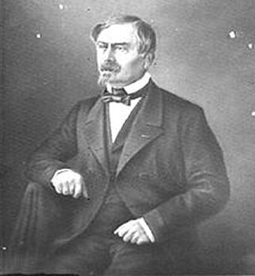
FIGURE XII
Abel Niépce de Saint-Victor (1805 - 1870) - photographie de Nadar -
L'exécution de ce procédé expéditif épargna au trésor un déboursé de plus de 100,000 fr. Après avoir reçu, avec les compliments de ses chefs, une gratification de 300 francs du maréchal Soult, le lieutenant reprit le chemin de Montauban. Ce lieutenant était M. Abel Niépce de Saint-Victor, cousin de Nicéphore Niépce, le Christophe Colomb de la photographie. Pendant son séjour à Paris, M. Abel Niépce de Saint-Victor avait senti s'accroître son goût des manipulations scientifiques. La découverte de son parent avait jeté sur le nom qu'il portait une gloire impérissable, et, comme par une sorte de piété de famille, il se sentait instinctivement poussé dans les voies de la science. Il commença donc à s'occuper de physique et de chimie, et s'attacha particulièrement à l'étude des phénomènes daguerriens. Mais une ville de province offre peu de ressources à une personne placée dans la situation où se trouvait M. Niépce. Convaincu que la capitale lui offrirait plus d'avantages pour continuer ses recherches, il demanda à entrer dans la garde municipale de Paris. Il y fut admis, en 1843, avec le grade de lieutenant, et fut caserne, avec sa brigade, au faubourg Saint-Martin. C'est alors que M. Niépce de Saint-Victor découvrit les curieux phénomènes auxquels donne naissance la vapeur d'iode quand elle se condense sur les corps solides. Il démontra, en 1847, que l'inégale absorption de la vapeur d'iode par les différents corps qui la reçoivent, se trouve liée à la couleur des corps absorbants, phénomène physique singulier, dont l'explication soulève beaucoup de difficultés, et qui mériterait d'être étudié d'une manière approfondie. A la suite de ce premier travail, qui commença à attirer sur lui l'attention, M. Niépce de Saint-Victor imagina le négatif photographique sur verre,découverte qui sera pour lui un titre de gloire durable. Ces intéressantes recherches, qui apportaient un puissant secours aux progrès de la photographie, M. Niépce les exécutait dans le plus étrange des laboratoires. Il y avait à la caserne de la garde municipale du faubourg Saint-Martin, une salle toujours vide : la salle de police des sous-officiers ; c'est là qu'il avait installé son officine. Le lit de camp formait sa table de travail, et sur les étagères qui garnissaient les murs, se trouvaient disposés les appareils, les réactifs et tout le matériel indispensable à ses travaux. C'était un spectacle assez curieux que ce laboratoire installé en pleine caserne ; c'était surtout une situation bien digne d'intérêt que celle de cet officier poursuivant avec persévérance des travaux scientifiques, malgré les continuelles exigences de sa profession. Nos savants sont plus à l'aise d'ordinaire ; ils ont, pour s'adonner à leurs recherches, toute une série de conditions favorables, entretenues et préparées de longue main par un budget clairvoyant. Ils ont de vastes laboratoires, où tout est calculé pour faciliter leurs travaux ; après avoir eu des maîtres pour les initier, ils ont des disciples auxquels ils transmettent les connaissances qu'ils ont acquises. Quand le succès a couronné leurs efforts, ils ont le public qui applaudit à leurs découvertes, l'Académie qui les récompense, et au loin la gloire qui leur sourit. M. Niépce était seul ; comme il avait été sans maître, il était sans disciples ; sa solde de lieutenant formait tout son budget; une salle de police lui servait de laboratoire. Le jour, dans tout l'attirail du savant, il se livrait à des recherches de laboratoire, entrecoupées des mille diversions de son état; la nuit, il s'en allait par la ville, le casque en tête et le sabre au côté, veillant en silence à la tranquillité de la rue, et s'efforçant de chasser de son esprit le souvenir inopportun des travaux de la journée. En dépit des obstacles d'une position si exceptionnelle, M. Niépce de Saint-Victor avançait dans la voie scientifique, et tout faisait espérer qu'une réussite brillante viendrait couronner ses efforts. Mais il avait compté sans la révolution de février. Les révolutions sont impitoyables ; elles n'épargnent pas plus l'asile du savant que le palais des rois Le 24 février 1848, l'insurrection triomphante entra dans la caserne du faubourg Saint-Martin ; elle commença par la saccager, puis elle y mit le feu. Ce laboratoire élevé avec tant de soins et de sollicitude, les produits, les spécimens de ses travaux, le modeste mobilier du lieutenant, tout périt dans ce désastre. Nous eûmes occasion de voir M. Niepce après cette journée. Il s'était retiré dans le haut du faubourg Saint-Martin, chez un ecclésiastique de ses parents : peu de jours auparavant, sur la place de l'Hôtel-de-Ville, quelques gardes municipaux, reconnus, avaient manqué d'être victimes de la fureur d'un peuple égaré. Il vivait donc chez son parent, attendant des jours meilleurs ; et c'était, je vous l'assure, un spectacle pénible que cet homme de coeur contraint de suspendre à son chevet son épée devenue inutile à la défense des lois, que ce savant réduit à pleurer la perte de son sanctuaire dévasté. Cependant, comme à la fin tout devait reprendre sa place, M. Niépce de Saint-Victor fut incorporé dans la garde républicaine, au moment de son organisation. Quand elle prit le nom de Garde de Paris, M. Niépce de Saint-Victor reçut le grade de capitaine, et en 1854 celui de chef d'escadron. En 1855 il fut appelé par l'Empereur, au poste de commandant du Louvre, où il continue de poursuivre ses travaux. Mais en acceptant ce poste de confiance, M. Niépce de Saint-Victor dut renoncer à son avancement dans l'armée et à une partie notable de son traitement, par suite d'une décision du ministre de la guerre, qui prescrit que les commandants des résidences impériales ne peuvent entrer en fonction qu'après avoir été mis en non-activité. Grâce à ses nouvelles fonctions, M. Niépce de Saint-Victor trouve plus de loisirs qu'autrefois, pour s'adonner aux études concernant la photographie. [...] Son invention des négatifs sur verre a été l'une des plus utiles, en ce qu'elle a rendu à la photographie un service pratique d'une valeur incontestable. Malgré tous les progrès qu'a faits la photographie, tous les opérateurs s'en tiennent aujourd'hui à l'usage des clichés négatifs sur verre, dont M. Niépce de Saint-Victor eut le premier l'idée en 1848. - extrait de Les Merveilles de la Science, la Photographie, de Louis Figuier]
La généalogie qui précède montre le degré de parenté d'Abel Niépce de Saint-Victor avec Joseph-Nicéphore Niépce. L'histoire de Nicéphore Niépce, telle que la raconte M. Victor Fouque, est étroitement liée à celle de son frère Claude; dans la maison paternelle ils eurent le même précepteur, l'abbé Montaugérand, et suivirent, en outre, les cours des Pères Oratoriens. Leur jeune frère fut élevé comme eux. Les deux aînés, enfants studieux, doux et timides, vivaient dans leur famille, et s'occupaient, lors de leurs récréations, à construire avec du bois de petites machines qu'ils façonnaient au moyen de leurs couteaux et de leurs canifs. Nicéphore et Hubert étaient destinés à l'état ecclésiastique; et, parce que Nicéphore eut achevé ses études avant l'âge fixé pour recevoir l'ordre de la prêtrise, il professa l'une des classes des Pères de l'Oratoire dans leur collège d'Angers. Mais la Révolution changea ses destinées en le jetant dans la carrière militaire; le 10 de mai 1792 , il devint sous-lieutenant au 42e de ligne, et le 6 de mai 1793, nommé lieutenant au 2e bataillon de la 83° demi-brigade, il fit la campagne de Sardaigne; la même année celle d'Italie. Enfin le 9 de mars 1791, il fut adjoint de l'adjudant général Frottier. Nul doute que, si une maladie épidémique des plus graves ne l'eût atteint à Nice et mis dans la nécessité de renoncer à la carrière militaire, il fût parvenu aux grades les plus élevés, comme le témoignent les paroles du général Kerveguen, qui, en signant son congé définitif, lui dit :
« Je perds en vous le plus beau lustre de mon état-major. »
Nicéphore malade se trouva si bien des soins de Mme Roméro, chez laquelle il demeurait, que, revenu à la santé, il lui demanda en mariage sa fille, dont l'âge dépassait le sien de quelques mois, et qui déjà était veuve d'un avocat. La demande agréée, le mariage se fit le 4 d'août 1791 à la satisfaction de trois personnes. Trois mois et demi après, les représentants du peuple, P.J. Litter, Tureau et Cassanyas, le nommèrent membre de la commission du district de Nice, mais, peu de temps après, le mauvais état de sa santé l'obligea de donner sa démission. Il quitta Nice et se retira dans le village de Saint-Roch peu éloigné de la ville. C'est là que, libre de soins, sa santé devint meilleure, et qu'il eut bientôt le plaisir de revoir son cher Claude, le compagnon de son enfance ! Claude s'était embarqué à Toulon comme volontaire; après deux ans de navigation et quelques jours de repos, il prit encore du service, s'embarqua sur La Modeste à Boulogne, navigua quelques mois, et quitta définitivement le service pour rejoindre son frère. Une anecdote racontée par M. V. Fouque témoigne de l'estime dont jouissait Nicéphore Niépce et son frère dans le pays de Nice, qui cependant n'était pas le soi natal ! Depuis six ans des brigands, voleurs et assassins, connus sous le nom de Barbets, portaient le trouble et la désolation dans cette partie du midi de la France; un jour la nouvelle d'une irruption de Barbets dans le village de Saint-Roch se répand, la population effrayée se retire à Nice; les frères Niépce, sans peur et sans reproche, restent chez eux. Le soir de l'envahissement, se promenant dans leur jardin, au détour d'une allée un inconnu les aborde et leur dit avec politesse :
« Messieurs, je vous connais, je suis le chef des Barbets ; il ne vous sera fait aucun mal, vous pouvez rester ici sans crainte. »
Et, après un court entretien plein de courtoisie, il gagne la petite porte par laquelle il était entré dans le jardin et disparaît. C'est à Saint-Roch que naquit l'enfant unique de Nicéphore, Jacques-Marié-Joseph-Isidore Niépce. C'est à Saint-Roch encore que Nicéphore et son frère Claude eurent l'idée de trouver une force capable d'imprimer le mouvement à un grand bateau, à un navire,sans recourir ni à la voile ni à la rame. Mais souvent l'argent leur manquait, et, d'ailleurs, l'amour du sol natal se réveillait de temps en temps, et on le sentait d'autant plus que ce malheureux directoire n'existait plus, et qu'au vif éclat du consulat se rattachait l'espérance d'un heureux avenir, sentiment si cher au coeur de l'homme ! Le 23 de juin 1801, après plus de dix ans d'absence, ils revirent la maison de leurs pères. Ils y retrouvèrent leur mère et leur frère Bernard. Ils habitèrent tour à tour Châlon et le Domaine-Niépce situé au Gras, commune de Saint-Loup-de-Varennes, et c'est dans leur pays natal qu'ils achevèrent ce qu'ils avaient commencé à Saint-Roch, la réalisation d'une machine propre à mettre en mouvement les grands bateaux et les navires, sans le secours des voiles ni des rames. Ils la nommèrent pyréolophore. La force qui l'animait naissait de
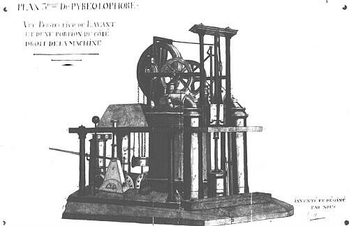
FIGURE XIII
plan du premier pyréolophore
l'inflammation soudaine du lycopode par l'air. Un brevet d'invention de dix ans leur fut délivré par un décret de Napoléon, daté de Dresde, 20 de juillet 1807. Un bateau, muni d'un pyréolophore, fut vu naviguer sur la Saône et sur l'étang de Batterey, au milieu des bois de la Charmée à Saint-Loup-de-Varennes.
On lit dans un rapport fait à la première classe de l'Institut par Berthollet et Carnot, que les auteurs pouvaient remplacer le lycopode par la poussière de houille mélangée, au besoin, avec une très-petite portion de résine. La conclusion du rapport est que la machine proposée par MM. Niépce est ingénieuse, et peut devenir très-intéressante par ses résultats physiques et économiques, et qu'elle mérite l'approbation de la classe. Les frères Niépce concoururent pour les plans d'une machine hydraulique destinée à remplacer celle de Marly; ils proposèrent une pompe très-ingénieuse et très-simple, qu'ils qualifiaient d'hydrostatique; mais, en réalité, elle n'était pas exempte de défauts. Enfin, lors du blocus continental, ils se livrèrent à la préparation de l'indigo, du pastel, sur laquelle le gouvernement de l'Empereur appelait alors l'attention publique, avec l'espérance qu'on parviendrait à remplacer par une plante indigène une des matières colorantes les plus renommées pour teindre les étoffes en bleu vraiment solide.
Personne mieux que moi ne pouvait prévoir l'inutilité des efforts tentés alors pour atteindre ce but; car, dans un mémoire sur l'indigo, lu à la 1ère classe de l'Institut le 13 de juillet 1807, en démontrant, contrairement à l'opinion de Fourcroy, que l'indigotine, le principe colorant essentiel de l'indigo, existe tout formé dans le pastel, il ne pouvait dès lors être le produit de l'altération de la plante; de plus j'avais mis en évidence que là quantité en était trop faible pour qu'on pût l'en extraire avec avantage (Annales de Chimie, t. LXVIII, p. 284; Annales du Muséum d'histoire naturelle, t. XVIII, p. 251 ). Le temps, en faisant justice de toutes les publications officielles relatives à l'avantage de l'extraction de l'indigo du pastel, m'a donné raison. Plus d'un demi-siècle s'est écoulé depuis que les frères Niépce essayaient de préparer l'indigo avec le pastel; 1814 vint et montra le néant du pouvoir le plus formidable pour créer une industrie qu'une simple analyse de laboratoire avait condamnée avant sa naissance, en prouvant que la proportion de la matière utile était trop faible dans la plante pour que l'extraction fût jamais susceptible de rémunérer celui qui l'entreprendrait au point de vue industriel, tandis que le sucre découvert dans la betterave par Margraff [rappelons les allusions répétées de Fulcanelli au sucre de betterave, cf. section sur les carbonates] s'y trouvait en une proportion assez forte pour qu'on pût espérer avec raison qu'un temps viendrait où l'extraction en serait possible pourvu qu'elle fût avantageuse. Si les frères Niépce ne purent faire l'impossible, ils ont laissé dans leur pays des témoins de leurs efforts à l'égard du botaniste qui parcourt le domaine qu'ils habitèrent et les campagnes au centre desquelles il est situé. Non-seulement les jardins de l'habitation, mais les champs voisins; les vieux fossés, véritable terre promise pour les voyageurs amis des plantes, offrent partout aux regards le pastel en possession du sol; il s'y multiplie sans culture tantôt isolément, tantôt par groupes plus ou moins étendus.
Nous voici arrivé à la deuxième partie de l'ouvrage, la plus longue; elle comprend cent trente-cinq pages consacrées presque exclusivement à la découverte de l'héliographie. Les frères Niépce se livraient encore à la préparation de l'indigo-pastel en 1813, lorsque la lithographie excita l'étonnement, frappa les esprits et inspira ai plusieurs l'idée de l'établir en France. La découverte de cet art remonte à la fin du XVIIIe siècle; mais son auteur, Aloys Senefelder, venu en 1802 en France avec l'intention de l'exploiter, fut accueilli trop froidement pour y rester. Il alla à Munich, où l'art nouveau se développa rapidement, et c'est alors que plusieurs Français pensèrent à fonder des établissements à Paris; l'homme dont les efforts furent les plus grands pour en faire une industrie française est le comte de Lasteyrie-Dussaillant, gendre du général de Lafayette. Après avoir fait un voyage à Munich en 1812, y être retourné à la paix de 1814, il revint en France, avec d'habiles ouvriers, fonder un établissement vraiment modèle. Ce que je raconte de l'établissement en France de la lithographie n'est pas une digression, surtout au point de vue où je me place pour faire connaître l'esprit de Nicéphore et ce qui le distinguait de son frère Claude; c'est cette différence qui va nous montrer comment celui-ci quitta son pays en 1816; il le quitta, et ne le revit plus; entraîné par sa passion pour la mécanique pratique, il s'y abandonna absolument, et sembla en proie à une idée fixe, qui, en définitive, devait aboutir au mouvement perpétuel; après avoir consommé argent, temps et santé à Paris, il alla mourir en Angleterre sans plus de succès, mais avec la pensée peut-être d'avoir trouvé ce qui avait été cherché avant lui sans succès.
Nicéphore Niépce, malgré sa participation aux travaux de mécanique de son cher Claude, à l'invention du pyréolophore et de la pompe hydrostatique, avait une disposition qui l'entraînait du côté des sciences, dont le but est la connaissance des actions moléculaires ; ou, ce qui est plus exact, les applications de ces sciences fixaient surtout son attention, et, sans lui, jamais Claude n'aurait pensé au pastel; Nicéphore dut à cette même disposition l'idée de s'occuper de la lithographie. La première recherche à laquelle il se livra en s'engageant dans cette voie fut celle de pierres calcaires d'un grain fin susceptibles de se prêter à l'impression, et à peine crut-il en avoir trouvé qu'il chercha à s'en servir lui-même pour reproduire des dessins; on ne peut en douter en lisant les indications données à M. Fouque par son fils Isidore, qui, comme dessinateur, coopérait à ses essais. En les lisant, il devient évident que c'est surtout en cherchant à composer des vernis propres à la lithographie qu'il fut conduit à découvrir l'héliographie, dont son nom sera toujours inséparable. Quoique je ne veuille parler que de ce qui a trait à cette découverte dans la correspondance des deux frères, dont M. V. Fouque a publié une partie, cependant la correspondance des deux frères a tant d'intérêt par l'expression de l'affection la plus vive; les sentiments du frère, du père et de l'époux, exprimés, par Nicéphore, ont tant de vérité, et l'esprit y est confondu si bien avec la sensibilité du coeur le plus tendre, que je me reprocherais de taire quelques réflexions que m'a suggérées l'amitié des deux frères. Élevés ensemble, livrés aux mêmes études et obéissant aux mêmes goûts dans leurs récréations, ils savaient que l'aîné jouirait de la fortune pour continuer la famille, tandis que le cadet, avec le jeune frère, prendraient les ordres; voilà ce qui était réglé, et chacun d'eux le trouvait bon, conformément à l'usage des anciennes familles. Mais la Révolution arrive. La Constitution de 1791 proclame l'égalité des parts dans les héritages, et crée un état de choses absolument nouveau en abolissant l'ancien qui comptait des siècles de durée. Que va-t-il arriver dans la famille Niépce ? l'union de Claude et de Nicéphore serait-elle brisée ? Non, assurément; l'amour de la patrie anime les deux frères, évidemment partisans des nouvelles idées; ce sont des patriotes de 89, et je sais la valeur de cette expression et le sens qu'on y attachait encore dans un département de l'Ouest, où, en 1843 j'avais le bonheur aussi d'entendre des hommes qui, ayant pris quelque part aux événements de la Révolution, se faisaient un point d'honneur de n'être pas confondus avec les hommes de 93 [allusion à la Terreur et à ses massacres qui ont hanté les jeunes années de Chevreul, cf. biographie]. Les frères Niépce partageaient ces idées, dit M. V. Fouque; et, dès qu'il fallut défendre la France contre l'invasion de l'étranger, l'aîné s'engagea sur la flotte, et le cadet, Nicéphore, servit dans l'armée, ainsi que nous l'avons vu. Enfin le futur oratorien, après avoir payé sa dette à la patrie comme militaire, devint père de famille, et l'aîné, destiné à continuer le nom de Niépce, garda le célibat, en devenant un second père pour son neveu', de sorte que le nouvel état de choses, loin d'avoir affaibli l'amitié mutuelle des deux frères, l'avait, au contraire, augmentée près des personnes qui avaient pu l'apprécier avant et après la Révolution. C'est le 21 de mars 1816 que commence l'intérêt de la correspondance des deux frères relativement à l'héliographie. Nicéphore a fait des essais dont il augure de bons résultats. Dès le 1er d'avril il pense à fixer les couleurs des images; le 12, il parle d'une espèce d'oeil artificiel qui n'est, en définitive, qu'une chambre noire ; le 22, il entretient son frère d'un accident qu'il a eu bien des peines à réparer : il a cassé l'objectif dont le foyer était le plus convenable à ses expériences, et il faut le remplacer. Sa lettre du 5 de mai raconte les difficultés qu'il a rencontrées; il a quitté la campagne pour aller à la ville chercher une lentille; il n'est pas jusqu'au nom italien de Scotti, marchand de lunettes chez lequel il a trouvé une lentille, mais différente de celle qu'il fallait rencontrer par un foyer plus long, qui m'a rappelé qu'une douzaine d'années auparavant un Italien aussi était le marchand unique de lunettes dans le chef-lieu d'un département de l'Ouest où la population s'élevait à trente-deux mille âmes, et Dieu sait quels étaient les baromètres et les thermomètres qu'il vendait avec ses instruments d'optique ; mais il avait l'avantage d'être seul, comme son compatriote de Châlon, Heureusement que le fils de Nicéphore, Isidore, avait un baguier; et que le grand-père Barrault avait laissé un microscope solaire muni de ses lentilles, et qu'une d'elles avait un foyer convenable; voilà un malheur réparé, et le 9 de mai il annonce à Claude qu'il a obtenu DES IMAGES sans que le soleil luise, et dès lors, sans que le mouvement de l'astre occasionne des changements dans la distribution des ombres de l'image. Dix jours après, un dimanche, le 19 de mai, il écrit ces lignes à son cher Claude :
« Je m'empresse de répondre à ta lettre du 14 , que nous avons reçue avant-hier et qui nous a fait un bien grand plaisir. Je t'écris sur une simple demi-feuille, parce que la messe ce matin, et ce soir une visite à rendre à Mme de Morteuil, ne me laisseront guère de temps; et, en second lieu, pour ne pas trop augmenter le port de ma lettre, à laquelle je joins deux gravures faites d'après le PROCÉDÉ QUE TU CONNAIS. La plus petite provient du baguier, et l'autre de la boîte dont je t'ai parlé, qui tient le milieu entre le baguier et la grande boîte. »
Me blâmera-t-on d'être profondément touché de la lecture de ces lignes écrites sans que Nicéphore eût la pensée qu'un jour elles seraient rendues publiques ? La pureté, l'honnêteté des sentiments et la simplicité de l'homme de famille parlant d'une manière si modeste de l'oeuvre qui assurera l'immortalité à son nom, ne donne-t-elle pas de Nicéphore l'idée d'un homme excellent, et cet homme, après avoir porté l'épée, devenu père de famille, s'amoindrit-il lorsqu'il parle de la messe à laquelle il assiste, dans les lieux mêmes où, enfant et jeune homme, il l'entendait avec la pensée de la célébrer lui-même un jour comme prêtre ? Je ne le pense pas. Le 28 de mai, quatre nouvelles épreuves sont adressées à Claude. De nouveaux succès ont été obtenus ; il s'est aperçu de l'heureuse influence d'un carton percé au centre qui, placé devant l'objectif, en diminue le diamètre, et contribue ainsi à la perfection de l'image en la rendant et plus vive et mieux dessinée. Le 2 de juin, nouveaux détails. Il parle, sans la nommer, d'une substance excessivement sensible pour retenir les moindres impressions de la lumière, et enfin de l'espérance de pouvoir graver, au moyen des acides, les images obtenues sur une plaque métallique, qui deviendrait ainsi propre à les multiplier.
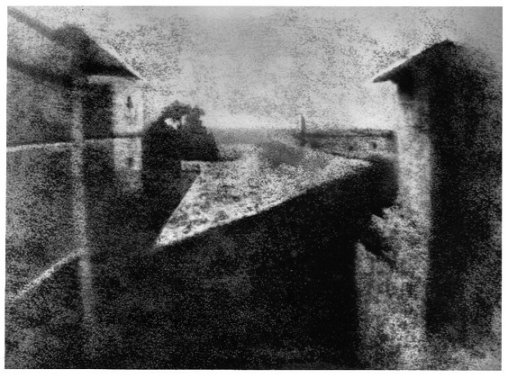
FIGURE XIV
première photographie de Nicéphore Niépce, prise en 1826 :
« point de vue de la fenêtre, à Gras » [photo découverte en 1952 par Helmut Gernsheim], cf. fig. XXIV
Cette lettre est remarquable, puisqu'elle témoigne que, dès 1816, Nicéphore ne s'occupait pas seulement de fixer l'image peinte par la lumière dans la chambre noire, mais qu'il concevait nettement encore la possibilité que cette image , une fois reçue sur une plaque métallique convenablement préparée pourrait être gravée en recourant à un acide, et qu'ainsi il multiplierait les épreuves de l'image en la rendant inaltérable. Le nom d'héliographie était donc clairement dans l'esprit de Niépce dès 1816, et nous verrons bientôt qu'en 1824 la conjecture avait passé dans le domaine de la réalité. M. V. Fouque cite des passages de diverses biographies de Nicéphore Niépce dont il ne nomme pas les auteurs, mais qui, par leur malveillance, semblent continuer le passage reproduit plus haut du rapport d'Arago à la Chambre des Députés; passons outre, ils ne valent pas la peine qu'on prendrait en les réfutant. La correspondance des deux frères, du 16 de juin 1816 au 11 de juillet 1817, contient beaucoup d'indications de résultats d'expériences. Après de nombreux essais, Nicéphore renonce au chlorure d'argent, au chlorhydrate de peroxyde de fer, dont la solution jaune blanchit à la lumière, il croit que le bioxyde de manganèse, qui, de brun étendu sur le papier, devient blanc par le contact de l'acide muriatique oxygéné , donnerait peut-être un bon résultat. Il a soumis à plusieurs essais la résine de gayac, connue par la propriété de devenir verte sous l'influence de la lumière. Mais reconnaissons que ce qui ôte de l'intérêt à cette correspondance est la crainte qu'avaient les deux frères de la violation du secret de leurs lettres; en un mot ils se tinrent constamment en garde pour qu'un étranger ne profitât pas de leurs travaux par la lecture de leur correspondance, aussi étaient-ils convenus de n'écrire que ce qu'ils considéraient comme indispensable à ce que l'un comprît l'autre. Dans cette correspondance est un fait qui, pour n'avoir pas conduit Nicéphore à son but, ne doit pas être omis, lorsqu'il s'agit de donner une preuve de la justesse d'esprit qui présidait à ses recherches. Il avait lu dans une note de Vogel, insérée dans la traduction du dictionnaire de chimie de Klaproth et de Wolf, que le phosphore pur et incolore, exposé dans le vide à la lumière du soleil, devient rouge, en perdant la propriété de se dissoudre dans divers liquides, notamment dans le sulfure de carbone; et que devenu rouge, il a perdu son inflammabilité à l'air. Cette simple indication de Vogel lui suggéra la pensée d'enduire une plaque d'une couche mince de phosphore incolore et de l'exposer ensuite dans la chambre noire, espérant que la lumière d'une image qui toucherait le phosphore en le rougissant le rendrait insoluble dans le sulfure de carbone, par exemple; et que, dès lors, le phosphore de la plaque qui n'aurait pas été éclairé, ayant conservé sa solubilité, serait enlevé par le liquide, et qu'on aurait pour résultat l'image de la chambre noire de couleur rouge. Si les nombreuses expériences auxquelles Nicéphore soumit son idée ne répondirent pas à ses espérances, il n'en est pas moins vrai que l'esprit qui le dirigea était celui d'un véritable inventeur. Après avoir renoncé au phosphore, il reprend la résine de gayac et constate le fait que la partie sensible à l'action dé la lumière réside dans la partie résineuse que l'alcool dissout, de sorte qu'il faut n'employer la résine de gayac qu'après en avoir séparé la partie soluble dans l'eau.
C'est au mois d'août 1817 que Claude quitta définitivement Paris pour aller en Angleterre, où il mourut. Il avait alors complètement renoncé à l'idée de tirer parti en France du pyréolophore comme agent moteur. Quelques jours après le départ de son frère, Nicéphore reçut une lettre de Jomard, secrétaire de la Société d'encouragement, dans laquelle on le remerciait de l'envoi de ses pierres propres à la lithographie. Cette lettre ne lui fut point agréable. M V. Fouque exprime ses regrets de n'avoir eu aucune lettre de Nicéphore depuis juillet 1817, au mois de mai 1826 ; il n'a eu entre les mains, dans ce laps de temps, que des lettres de Claude à Nicéphore, et il se borne à en extraire ce qui concerne les travaux héliographiques. Des lettres de Claude nous n'en citerons que deux. La première constate, qu'avant le 19 de juillet 1822, Nicéphore avait reproduit sur verre un portrait de Pie VII, qui faisait l'admiration de tous ceux qui le voyaient. Le général Poncet du Maupas, cousin par alliance des frères Niépce, voyant ce portrait, le demanda avec tant d'instances à Nicéphore, qu'il l'obtint. Il le fit encadrer par Alphonse Giroux, de manière que l'on pouvait voir l'image sur les deux faces du verre; malheureusement, ne pouvant s'en séparer, il l'emportait dans ses voyages, et ce qui devait arriver arriva; un jour un admirateur du chef-d'oeuvre l'ayant saisi, le laissa tomber, et l'oeuvre de Nicéphore fut détruite. La seconde lettre, du 3 de septembre 1824, témoigne que Nicéphore avait réussi à reproduire, d'une manière fixe, les points de vue qui se dessinent dans la chambre noire. Enfin le musée de Chalon-sur-Saône possède deux plaques d'étain, dont l'une montre l'image d'un PAYSAGE, et l'autre l'image d'un CHRIST PORTANT SA CROIX, avec l'indication dessin héliographique, inventé par J. N. Niépce, 1825 ; et à cette occasion, je suis heureux de mettre sous les yeux de la conférence du Journal des Savants le portrait du cardinal Georges d'Amboise, avec le
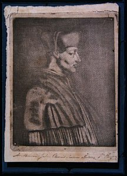
FIGURE XV
cardinal Georges d'Amboise d'après une Gravure de Briot (1460-1510), épreuve, vers 1820 -
Don d'Isidore Niépce (vers 1864)
certificat d'origine de Niépce de Saint-Victor, qui a bien voulu se dessaisir de cette épreuve en ma faveur, sachant la profonde estime que j'ai toujours eue pour l'illustre inventeur de l'héliographie. Elle a d'autant plus de prix pour moi, que Isidore Niépce, le fils de Nicéphore, écrivit le 10 de mars 1867 une lettre que M. V. Fouque a insérée dans son ouvrage, où se trouve décrit le procédé tel qu'il fut exécuté par son père pour obtenir ce portrait (Invention de la photographie, par V. Fouque, p. 122 et 123). Je me dispense d'en parler maintenant, me réservant de le faire dans le second article, où j'examinerai l'héliographie comme invention.
Nous sommes arrivés à l'époque des relations de Nicéphore avec Daguerre. Voici comment elles s'établirent. Le colonel Niépce, de la branche de Sennecey-le-Grand, allant à Paris, fut chargé par son cousin Nicéphore de l'acquisition de divers objets, une chambre obscure à prisme ménisque entre autres, chez Vincent et Charles Chevalier. Ces deux artistes furent émerveillés d'une épreuve héliographique de Nicéphore, représentant une jeune fille filant sa quenouille. Le colonel prononça le nom de Nicéphore Niépce, l'auteur de l'épreuve, et Charles Chevalier celui de Daguerre, le peintre associé à Bouton; auteur de l'idée mère du diorama. Le lecteur trouvera tous les détails désirables dans désirables dans l'ouvrage de M. V. Fouque, ainsi que dans l'acte d'association de Nicéphore avec Daguerre. Je me bornerai, dans cet article, à établir que la découverte de l'héliographie, tout à fait originale, appartient entièrement à Nicéphore Niépce, quelle que soit l'estime qu'on professe pour Daguerre ; d'un autre côté, tout en reconnaissant le tort de Daguerre dans l'acte qu'il passa, après la mort de Nicéphore Niépce, avec son fils Isidore, de substituer son nom à celui de Nicéphore Niépce, je ne serai point injuste à son égard lorsque je parlerai de la manière de fixer l'image
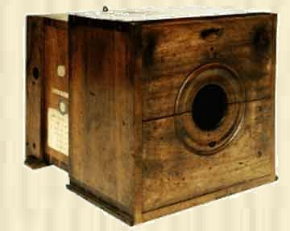
FIGURE XVI
camera obscura (ca. 1820 -1830)
de la chambre obscure par le procédé auquel on a donné son nom, je parlerai donc de Daguerre avec la même impartialité que de Talbot, auquel on doit la photographie sur papier. Mais je ne peux omettre, avant de terminer cet article de dire quelques mots de la vie de Claude et de Nicéphore Niépce, mon intention étant d'examiner les deux frères dans un second article, relativement à ce qu'on appelle l'esprit d'invention. Nicéphore, ayant appris que son frère était malade en Angleterre, n'hésita point à se rendre près de lui dans la seconde quinzaine du mois d'août 1827 avec Mme Niépce. Il s'arrêta quelques jours à Paris ; il y vit non seulement M. Daguerre, mais encore M. Lemaître, artiste graveur aussi distingué par le talent que par l'honnêteté de ses sentiments. Déjà des rapports existaient entre lui et Nicéphore, et, depuis la mort de l'inventeur de l'héliographie, la famille Niépce, et particulièrement Niépce de Saint-Victor, n'a eu qu'à se louer de M. Lemaître. Une lettre de Nicéphore, adressée de Paris à son fils, et publiée pour la première fois dans l'ouvrage de M. Fouque, a un véritable intérêt. A cette époque Nicéphore parlait avec enthousiasme du diorama de Daguerre et l'on peut d'autant moins suspecter sa sincérité, que les détails qu'il donne sur le travail de Daguerre n'ont, comme il le remarque lui-même, aucun rapport avec l'héliographie ; il y a plus, c'est que je ne conçois pas comment Daguerre les citait comme preuve de recherches analogues à celles de Niépce. Je reviendrai plus tard sur cet objet. Nicéphore partit enfin pour l'Angleterre. En y arrivant, il trouva son frère bien plus gravement malade qu'il ne s'y attendait ; non-seulement Claude était hydropique, [c'est-à-dire qu'il était probablement atteint de cirrhose éthylique] mais il y avait encore affection mentale, et certes l'idée fixe qui le préoccupait, surtout dans les dernières années. de sa vie, la recherche du mouvement perpétuel, n'avait, pas peu contribué à ce résultat.
C'est à Kew que Nicéphore connut M. Bauër, membre de la Société royale de Londres, dont j'ai cité plus haut une lettre honorable en faveur de l'inventeur de l'héliographie; il ne tint pas à M. Bauër que Nicéphore publiât en Angleterre sa découverte ; mais Nicéphore la quitta en janvier 1828 sans s'y résoudre. Claude mourut à Kew-Green, le 10 de février de la même année. Enfin, c'est le 5 de décembre 1829 qu'un traité d'association pour exploiter l'héliographie fut passé entre Joseph-Nicéphore Niépce et Daguerre. Le traité est reproduit intégralement par M. V. Fouque; il me suffit de citer les articles 1 et 5 ainsi conçus :
« Art. 1. Il y aura entre MM. Niépce et Daguerre société sous la raison de commerce Niépce-Daguerre, pour coopérer au perfectionnement de ladite découverte, INVENTEE par M. Niépce et perfectionnée par M. Daguerre.
Art. 5. M. Niépce met et abandonne à la société, à titre de mise, son invention, représentant la valeur de la moitié des produits dont elle sera susceptible; et M. Daguerre y apporte une nouvelle combinaison de chambre noire ; ses talents et son industrie équivalent à l'autre moitié des susdits produits. »
Si l'on admet que Nicéphore a obtenu des images héliographiques qui ont excité l'admiration, en Angleterre, des Baüer, en France, du général Poncet et des nombreux amateurs des beaux-arts qui visitaient les magasins de la maison Alphonse Giroux (la vérité sur l'invention de la photographie, par V. Fouque, p. 108 et 109), etc., les articles 1 et 5 prouvent, sans discussion, que Nicéphore Niépce a inventé l'héliographie. Ajoutons que, conformément à l'article 3 du traité, les procédés sont fidèlement décrits. il ne peut donc y avoir doute sur l'auteur de la découverte. En outre, l'article 5 ne porte comme invention de Daguerre qu'une nouvelle combinaison de chambre noire, expression qui, n'étant pas définie par le traité, est tout à fait étrangère à l'invention de l'héliographie. Tels sont les faits d'après lesquels je démontrerai, j'espère, dans le second article :
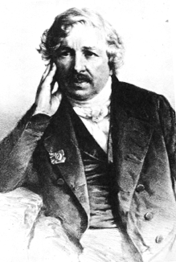
FIGURE XVII
Louis Jacques Mandé Daguerre (1787-1851)
-1° Que l'honneur de la découverte originale de l'héliographie appartient absolument à Joseph-Nicéphore Niépce, et qu'il a parfaitement établi les conditions de la réalisation de la découverte ;
- 2° Que Daguerre a eu le mérite incontestable, en observant ces conditions, de substituer au bitume de Judée, la matière sensible à l'action de la lumière, l'argent ioduré, beaucoup plus impressionnable ;
- 3° Enfin, que Talbot a eu le mérite incontestable de substituer aux métaux et au verre, employés par Joseph-Nicéphore Niépce et Daguerre, le papier, de sorte qu'aujourd'hui le daguerréotype n'est plus d'usage.
Nicéphore mourut au Gras, dans sa maison de campagne, à l'âge de soixante-huit ans et quatre mois, le 5 de juillet 1833. [il s'est agit selon toute vraisemblance d'une mort subite, cf. supra] Ses restes mortels reposent dans le cimetière de Saint-Loup-de-Varennes, près de Châlon - sur - Saône. La IIIe partie de l'ouvrage de M. V. Fouque a pour objet de montrer que Joseph Nicéphore Niépce est bien l'auteur de l'héliographie, et que Daguerre a eu le grand tort de forcer Isidore Niépce, le fils de Nicéphore, à signer un traité après la mort de son père, dans lequel il est dit qu'un procédé nouveau de fixer les images de la chambre obscure portera le nom seul de Daguerre, par la raison que jamais, sans l'intervention de Nicéphore, Daguerre n'eût imaginé le daguerréotype. Enfin la IVe partie est un exposé généalogique de toutes les branches de la famille Niépce. Je ne puis terminer le compte que je viens de rendre de l'ouvrage de M. Victor Fouque sans le féliciter, au nom de la vérité et de la science, d'avoir attaché son nom à une oeuvre consciencieuse et tout à fait patriotique en faveur d'un de ses concitoyens, je m'estimerai heureux si, dans l'article qui suivra celui-ci, j'apporte quelques raisons scientifiques en faveur d'un homme de génie, qui eut toutes les vertus du père de famille et du citoyen.
Lorsqu'on veut exposer des faits scientifiques dont on ne peut rattacher les causes à un système de principes propres à satisfaire un esprit rigoureux, l'ordre chronologique de leur découverte doit être préféré à tout autre, par la raison qu'il est conforme à la vérité ; il va sans dire que, de rigueur, au point de vue de l'histoire des sciences, on ne peut lui en préférer aucun autre ; de sorte que le lecteur d'une telle oeuvre n'aura rien à désirer, si en outre, l'auteur a étudié le passé avec l'intention de rattacher à chaque découverte tout ce qui peut avoir de l'analogie avec les faits qu'elle concerne, soit qu'il veuille relever un mérite oublié, soit qu'il s'agisse du cas contraire où les faits rappelés relèvent le mérite de l'auteur de la découverte dont on parle.
Généralités servant d'introduction
En appliquant cette manière de voir à l'histoire de la découverte de l'héliographie, je parlerai avant tout d'un composé que l'on connut d'abord sous le nom de lune cornée [voir l'introduction en commentaire de toute cette séquence]; lune parce que c'était le nom de l'argent, et cornée, à cause de la ressemblance apparente du composé avec la corne [cf. l'article ARGENT du traité de chimie de Girardin]. Les alchimistes et les métallurgistes anciens le connaissaient sous cette dénomination. La nomenclature de Lavoisier le nomma muriate d'argent, le supposant formé d'acide muriatique et d'oxyde d'argent. Aujourd'hui, il porte le nom de chlorure d'argent, parce que le chlore et l'argent en sont considérés comme les éléments. Lorsque ce composé se produit par la réaction de l'acide chlorhydrique et de la solution aqueuse d'un sel d'argent, de l'azotate, par exemple, il apparaît sous la forme d'un précipité du blanc le plus beau, susceptible d'éprouver, sous l'influence de la lumière, une coloration d'autant plus vive et plus rapide jusqu'au noir que la lumière sera plus vive, ou si, diffuse, l'action en sera prolongée davantage. Il y a longtemps que, dans les cours de chimie, on rendait cette propriété évidente en opérant un précipité de chlorure d'argent à l'obscurité dans un vase de verre sur lequel on avait appliqué un papier noir découpé de manière à représenter une figure ou des caractères d'écriture. En exposant ensuite le chlorure précipité au soleil, la découpure laissant arriver la lumière à certaines parties du chlorure seulement, reproduisait en noir sur fond blanc l'image de la découpure, et l'effet frappait tous les yeux, si l'on avait enlevé le papier noir après l'insolation. Faut-il s'étonner, d'après la connaissance de ces faits, que le physicien Charles, à la fin du XVIIIe siècle, et, au commencement de celui-ci, Wedgwood d'abord et H. Davy ensuite, aient essayé de tirer parti de cette propriété du chlorure d'argent ? Mais leurs essais n'aboutirent à rien, par la raison que la conservation de l'image, une fois produite, exigeait nécessairement la séparation de la portion du chlorure qui avait été préservée de l'insolation pan le papier noir dont il était couvert ;car le papier une fois enlevé, la lumière le noircissant, l'image cessait d'apparaître sur un fond blanc. De là cette conclusion : pour obtenir l'image dessinée par la lumière dans une chambre obscure sur une matière sensible à son action, il ne faut pas seulement une matière sensible, mais il faut encore connaître un moyen de séparer la PARTIE INSOLÉE DE CETTE MATIÈRE, DE LA PARTIE QUI NE L'A PAS ÉTÉ. Ajoutons que, si la matière sensible était, comme le chlorure d'argent, susceptible de noircir sous l'influence de la lumière, l'épreuve serait dite inverse, puisque les parties frappées alors parla lumière, dans l'image du modèle de la chambre noire où étaient les clairs, se trouveraient, sur l'épreuve, reproduites en noir : en ce cas, la qualification d'inverse donnée à l'image est donc de toute justesse, puisqu'une reproduction fidèle de l'image eût exigé que les clairs et les ombres fussent disposés comme ils le sont dans le modèle, pour que l'épreuve reçût la qualification de directe. Ainsi, avant Nicéphore Niépce, on avait cherché à fixer l'image de la chambre obscure sur le chlorure d'argent, et nous avons dit pourquoi on n'avait pas réussi. En mentionnant maintenant un second procédé, qui aurait pu être employé, si on l'eût voulu, nous aurons passé en revue tout ce qui est relatif à l'héliographie considérée avant les recherches de Nicéphore Niépce. Dans un mémoire lu à l'Académie des sciences (le 2 de janvier 1837), où j'ai examiné l'influence de la lumière sur les étoffes teintes mises dans différents gaz et le vide, je suis arrivé à la conclusion que la plupart des matières colorantes d'origine organique fixées par la teinture sur les étoffes ne sont, en général, décolorées qu'à la double condition de recevoir l'influence de la lumière dans l'air atmosphérique ou le gaz oxygène, de sorte qu'elles conservent leur couleur dans le vide éclairé par le soleil et dans l'air obscur. Une application de ce principe pour conserver les étoffes teintes, les tableaux, etc., c'est de les soustraire à la lumière du soleil au moyen de housses, si ce sont des meubles, ou de rideaux, si ce sont des tableaux encadrés, de les couvrir avec des étoffes vertes, bleues foncées ou noires, et, à l'appui de cette application, j'extrais le passage suivant du mémoire précité :
« Un croisé de coton teint à l'indigo, couvert d'une bordure de la même étoffe teinte également en bleu d'indigo, mais dans laquelle un dessin blanc avait été réservé sur les deux faces, ayant reçu, pendant plusieurs années, l'action du soleil, de manière que toute la face de la bordure qui y était exposée fût entièrement passée en fauve grisâtre, a présenté le résultat suivant : lorsqu'on a eu détaché la bordure qui le recouvrait, les parties du croisé bleu correspondantes au dessin blanc de la bordure étaient décolorées par la lumière que le dessin blanc avait transmise, de manière que ce même dessin était reproduit sur le croisé, et, d'un autre côté, les parties bleues de la face de la bordure qui touchaient le croisé n'étaient pas sensiblement affaiblies. Cette observation est donc une preuve évidente de l'influence exercée par une toile de couleur foncée, pour préserver des matières altérables par la lumière. »
Je mets sous les yeux de la conférence le croisé bleu dont je viens de parler. Cette observation, faite avant le 2 de janvier 1837 et plus d'un an avant la publication du procédé de Daguerre, montre qu'on aurait pu recourir à un procédé de cette catégorie comme
moyen héliographique, auquel je l'avoue, je ne pensais nullement alors. Si l'on alléguait maintenant que la figure de la bordure laisse beaucoup à désirer, je répondrais par un second exemple où des lettres d'une couleur, orangée rabattue ont été fidèlement reproduites en rose sur une feuille de papier de cette couleur dont la matière colorante était très-altérable par les actions simultanées de l'air et de la lumière. La feuille blanche imprimée en caractères de couleur orangée rabattue recouvrait la feuille rose; or la lumière transmise à celle-ci par la partie blanche de la première agissant avec l'oxygène de l'air, ayant détruit toute la couleur rosé correspondante, tandis que la couleur rose correspondante aux lettres ne l'avait pas été, ces lettres ayant fait fonction d'écran, on voit comment les caractères orangés furent reproduits en rose sur la feuille de cette même couleur. La conférence pourra juger de la fidélité de cette reproduction par le fait matériel que je mets sous ses yeux : je le dois à un honorable instituteur de la commune de Gentilly, qui, après l'avoir observé, m'en demanda la cause. En rapportant ces deux faits plus de quarante ans après la découverte de Nicéphore Niépce, loin d'avoir l'intention d'affaiblir en quoi que ce soit le mérite de l'illustre inventeur de l'héliographie, je veux encore le relever, en disant bien haut qu'il fut le premier à chercher par l'expérience à fixer les images de la chambre noire en recourant à des procédés de décoloration plus ou moins analogues aux deux faits que je viens de citer. Je rappelle encore avec la même intention l'esprit d'investigation qui lui suggéra l'idée, pour atteindre son but, de profiter de l'observation de Vogel relativement à la modification que subit le phosphore exposé dans le vide à la lumière; alors le combustible se colore en rouge et perd sa solubilité dans des liquides qui le dissolvaient avant sa modification, observation que l'on a peut-être perdue de vue depuis les travaux du chimiste de Vienne, M. Schroetter. Certes, plus les essais de Nicéphore, qui n'ont pas répondu à ses espérances ont été nombreux, plus il a donné de preuves de son esprit d'invention, en même temps qu'il a montré à tous les savants capables d'apprécier les actes de cet esprit, combien le but qu'il a atteint était difficile à toucher; et c'est cette réflexion qui, développée plus loin relativement au procédé de Daguerre, nous montrera l'extrême différence qu'il y a entre une découverte vraiment originale et un procédé qui l'a reproduite plus tard avec quelque avantage réel; et tel est le mérite incontestable du procédé de Daguerre, quoique, dès à présent, nous fassions la remarque que ce procédé a des inconvénients, ou, en d'autres termes, n'a pas, au point de vue pratique, tous les avantages de l'héliographie.
En résumé, à Nicéphore Niépce revient incontestablement l'honneur d'avoir découvert l'héliographie, de laquelle dérivent la daguerréotypie et la photographie sur papier, due à Talbot.
PREMIERE SECTION
DE L'HÉLIOGRAPHIE, DE LA DAGUERRÉOTYPIE ET DE LA PHOTOGRAPHIE
§ I - De l'héliographie
C'est Nicéphore Niépce qui a rempli le premier les deux conditions nécessaires à fixer l'image de la chambre obscure, à savoir :
-1° l'emploi d'une matière sensible a l'action de la lumière, laquelle après avoir été appliquée sur une surface solide, est exposée au foyer de la chambre obscure, là où se peint l'image;
- 2° l'emploi d'un liquide capable de dissoudre toute la matière sensible qui n'a point été modifiée par la lumière à l'exclusion de celle qui l'a été.
Nicéphore Niépce, après plusieurs années d'essais, donna la préférence, comme matière sensible, au bitume de Judée [rappelons que Fulcanelli parle du bitume de Judée pour assurer la jointure des cornues... N'est-ce pas là cabale de la part de l'Adepte et n'avait-il pas autre chose à l'esprit en lançant l'expression ? Cf. le Livre secret d'Artephius -], qu'il appliqua sur une plaque métallique en le pénétrant d'abord d'huile volatile de lavande, puis le faisant dissoudre dans un mélange d'une partie en volume d'huile de lavande et de neuf parties d'huile de pétrole. La plaque enduite de la solution de bitume, après l'évaporation du dissolvant, était exposée au foyer de la chambre noire; il arrivait alors que toutes les parties du bitume que frappait la lumière perdaient leur solubilité dans l'huile de lavande et de pétrole, [parlant par cabale, il faut dire leur volatilité ; on rejoint ainsi la notion d'AIR des SAGES, développée par Philalèthe dans son Introïtus : ce milieu dissolvant, dans le cas présent, est représenté par cette huile mixte de lavande et de pétrole] et que dès lors, en plongeant la plaque, à la sortie de la chambre obscure, dans le liquide huileux, tout le bitume non insolé se dissolvait, tandis que celui qui échappait à l'action du dissolvant était la portion de bitume qui, ayant été frappée par la lumière, [fixation du Mercure par le Soufre : voilà la fable d'Atalante et d'Hippoménès ; voilà encore Appolon, aux chaussures d'or, vainqueur de Mercure à la course... Est-il besoin d'en dire plus ?] conservait les traits de l'image, et la modification étant proportionnée à l'énergie de la lumière, on avait des clairs et des ombres de différents tons, qui produisaient le relief de l'image. [N'a-t-on pas là, de même, l'image de cet athanor sur lequel l'artiste, transformé en chevalier bardé de fer, protège des rigueurs du soleil, symbolisé par un rayon igné, un four que l'on voit distinctement, sis au portail central de Notre-Dame de Paris ? Cf. Gobineau de Montluisant] On conçoit que la matière du dessin était le bitume modifié qui restait fixé sur la partie de la plaque où la solution avait été appliquée. Telle est la manière dont Nicéphore Niépce a réalisé la fixation de l'image, mais là n'est pas toute la découverte. Il s'est dit : si le bitume qui recouvre le métal représente l'image de la chambre obscure, n'arrivera-t-il pas qu'en faisant mordre par un acide le métal mis à nu après l'apparition de l'image, j'aurai ainsi une planche gravée de telle sorte qu'en enlevant le bitume modifié qui a protégé lé métal contre l'action érosive de l'acide, l'image apparaîtra, les reliefs du métal en seront les clairs et les parties creuses en seront les ombres ou les traits correspondants.
Eh bien, l'expérience a justifié la conjecture de Nicéphore Niépce, et je rappelle la reproduction du portrait gravé de Georges, cardinal d'Amboise, exécuté en 1824 sur plaque d'étain, en faisant remarquer que cette épreuve est une des premières obtenues par le procédé que je viens de décrire.
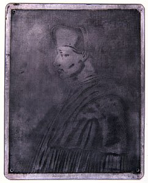
FIGURE XIX
Cardinal d'Amboise, plaque d'étain - vers 1820 - cf. figure XV
On ne peut donc pas refuser à Nicéphore Niépce l'invention de l'héliographie, ni celle de la gravure héliographique. Et, quoi qu'en ait dit Arago dans la citation que nous avons faite d'un passage de son rapport, le procédé de Nicéphore Niépce mérite parfaitement la qualification de méthode, car il est de toute évidence que la daguerréotypie et la photographie sur papier, de Talbot, ne font que répéter la découverte mère avec des matières sensibles différentes sur des subjectifs dont la nature peut varier. Après avoir donné les raisons pour lesquelles Nicéphore Niépce doit être considéré comme l'inventeur de l'héliographie, je vais examiner son oeuvre au point de vue des difficultés qui naissent des matières qu'il a employées, acte de justice pour reconnaître les véritables perfectionnements apportés à l'oeuvre originale, sans atténuer la gloire de l'inventeur, puisqu'elle doit être considérée comme incontestable, par les raisons que nous en avons données (Dans le premier article, février 1873, p. 81 et 82).
La durée de huit heures qu'exigeait l'exposition du bitume à la lumière, pour que l'image de la chambre obscure fût satisfaisantes, était un inconvénient à cause des changements de la répartition des clairs et des ombres dans la reproduction de l'image. Mais cet inconvénient n'était point inhérent à la méthode, comme le démontra, en 1853, le petit-cousin de Nicéphore, Niépce de Saint-Victor, en donnant au bitume de Judée plus de sensibilité à la lumière. Si, en outre, on tient compte de la position de Nicéphore, habitant à la campagne, loin des ressources d'une grande ville comme Paris, et à une époque où la facilité des communications était si différente de ce qu'elle est aujourd'hui, de sorte que, pour réparer un accident de chambre obscure, Nicéphore n'avait que l'opticien Scotti, de Châlon et le baguier de son fils Isidore (premier article, p. 76), on a une idée vraie des difficultés contre lesquelles il a lutté sans succomber ! Ajoutons encore que la passion de Claude pour construire des machines propres à démontrer, croyait-il, le mouvement perpétuel, mit trop souvent à l'épreuve le désintéressement de Nicéphore; si la générosité fraternelle allait trop loin, l'excellent père de famille, pénétré de ses devoirs, se croyait obligé à faire passer l'économie sur la dépense même qu'entraînaient incessamment ses propres recherches et n'oublions pas que, commencées dès 1814, la mort seule y mit un terme le 3 de juillet 1833. Parlons maintenant de la daguerréotypie et de la photographie.
§2 - De la daguerréotypie
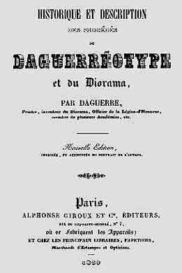
FIGURE XX
Historique et Description des procédés du Daguerréotype et du Diorama - 1839
Après avoir mis hors de doute, dans l'article précédent, la découverte de l'héliographie par Nicéphore Niépce, j'ai montré que Daguerre, en s'associant avec lui pour exploiter les avantages de la découverte, n'avait apporté à la société que son talent personnel et les connaissances pratiques du peintre mises en évidence par les Tableaux du Diorama; car les perfectionnements de la chambre obscure, tout à fait étrangère à l'invention de l'héliographie, et dont cependant l'acte faisait mention, remontaient à 1812 (11 de juin), et avaient pour auteur Wollaston, et quant à l'achromatisme des verres, opéré plus tard, on le devait à l'artiste Charles Chevalier. N'oublions pas que Nicéphore, en 1827 et 1828, ne vit jamais aucun essai héliographique de Daguerre, et qu'en 1835 son fils Isidore, venu à Paris pour une révision de l'acte passé avec Nicéphore , que la mort avait frappé en 1833, comme nous l'avons dit, n'en vit pas davantage, et cependant alors il était de l'intérêt de Daguerre de prouver qu'il avait trouvé un procédé en réalité supérieur à celui de Nicéphore, puisque, dans le nouveau traité, le nom de Daguerre devait précéder celui de Nicéphore Niépce. Mais ce ne fut que de 1835 à 1837 qu'après beaucoup de travaux Daguerre fut en droit de se dire auteur du procédé qui porte son nom. Quelles conclusions tirais-je de ces faits, en m'abstenant de toute réflexion relative à la conduite de Daguerre, à l'égard des changements au traité primitif qu'il imposa au fils de l'inventeur de l'héliographie ?
- La première, c'est que Daguerre jusqu'à la mort de Nicéphore, n'avait fait aucune recherche qui eût trait à l'héliographie.
- La seconde, c'est qu'il mit beaucoup de temps à découvrir le procédé qui porte son nom, procédé qui lui appartient incontestablement.
- La troisième, c'est qu'incontestablement, à mon sens, il n'aurait point imaginé ce procédé, s'il eût ignoré les recherches originales de Nicéphore Niépce, qui avait démontré par le fait la possibilité de fixer l'image produite par la lumière dans la chambre obscure, au moyen d'une matière sensible [notons qu'il s'agit là du point crucial dans le développement que nous entendons donner au symbolisme alchimique, appliqué à l'héliographie], de laquelle on séparait ensuite la portion de cette matière sur laquelle la lumière n'avait point agi.
[nous montrons que cette séparation est en tout point semblable à celle des alchimistes. Il n'est bien sûr pas question d'établir le fait - d'ailleurs impossible - que les vieux alchimistes aient pratiqué l'héliographie ! Non. Ce serait une absurdité et rien, ni dans l'histoire des sciences ni dans l'histoire de l'alchimie, ne prête en quoi que ce soit de point en ce sens. Du moins pouvons-nous émettre des conjectures, posées non en hypothèse mais en pure allégorie, en pure métaphore spirituelle, qui permettent d'établir des points de jonction des plus curieux et des plus intéressants entre les couleurs de l'oeuvre - voyez là-dessus Jacques Tol - et les couleurs qui se dégagent, par l'entendement, des procédés techniques des pères de la photographie, c'est-à-dire de l'héliographie. Et Chevreul met justement l'accent sur les difficultés extrêmes qu'éprouva Nicéphore Niépce à progresser, sur sa solitude - qui s'inscrit en filigrane dans la correspondance qu'il échange avec Claude, toqué du mouvement perpétuel... - et sur le fait, non moins important que Nicéphore fut le SEUL et VERITABLE inventeur, le père fondateur, de ce qui allait, en un sens, révolutionner le monde en le faisant verser progressivement, et comme par avance, vers le XXe siècle. Nous développons ces points dans le préambule aux articles de Chevreul]
Je ne puis donc admettre, d'après la manière dont je me représente l'esprit humain [voyez là-dessus deux autres articles de Chevreul, consacrées aux connaissances du ressort de la philosophie naturelle : 1, 2] lorsqu'il fait des découvertes vraiment originales, que le procédé de Daguerre, quelque admirable qu'en paraisse le résultat, soit une découverte originale susceptible d'amoindrir en quoi que ce soit la découverte vraiment mère de l'héliographie. Effectivement, les recherches de Nicéphore Niépce ont le caractère d'une découverte absolument originale; nombreuses et variées, poursuivies des années avec la plus vive persévérance, elles aboutissent enfin au but que l'auteur s'était proposé, et sans précédent. [on ne se rend plus compte de la SIGNIFICATION, du SENS philosophique, qui s'inscrit sous une héliographie moderne... Il serait vain d'en dire plus là-dessus ] Daguerre lui-même, avant d'en connaître le résultat, le disait impossible. Quelle que soit la beauté de l'image daguerrienne, elle est produite, comme l'image héliographique, par une matière sensible, l'argent iodé [matière éminemment alchimique, termes mêmes qu'emploie Louis Figuier quand il traite de Daguerre, cf. préambule : qu'on en juge. La lune cornée - Diane aux cornes lunaires, Diane chasseresse - jointe à l'IOV grec, c'est-à-dire au venin, au poison, à la rouille, au vert-de-gris, etc. par la cabale phonétique, et aussi à ION, c'est-à-dire à la couleur violet, si souvent peinte et décrite par les vieux - et les modernes, voyez Fulcanelli et E. Canseliet - traités alchimiques.], et celui-ci, après avoir reçu dans la chambre obscure [évidemment réductible à la fameuse « putréfaction des philosophes chymiques », cf. supra et nos symboles. La chambre obscure tient ici lieu de tombeau : c'est celui que l'on voit sur les gravures et dessins du Rosaire des Philosophes] l'impression de la lumière [le Soufre rouge ou teinture : c'est une autre version du rayon igné solaire de Fulcanelli], est soumis à un dissolvant [le Mercure], l'hyposulfite de soude, qui, en dissolvant la matière sensible que la lumière n'a pas frappée, assure la durée de l'image. [nous trouvons là l'exact équivalent des laveures ignées de Nicolas Flamel]. La différence des procédés est celle-ci : dans le procédé de Nicéphore, l'image apparaît en traitant la plaque, à sa sortie de la chambre obscure, par un dissolvant formé de six volumes d'huile de pétrole blanche et d'un volume d'huile de lavande, tandis que, dans le procédé de Daguerre, l'image, avant d'être soumise à l'hyposulfite de soude, est exposée à la vapeur de mercure, qui la rend visible. Si le procédé de Daguerre a une valeur incontestable, s'il a reconnu la sensibilité de la plaque iodée, il est certain que Nicéphore a pensé le premier à recourir à l'iode pour ses travaux héliographiques, et, s'il n'en a pas tiré autant parti que Daguerre, les difficultés eussent été, pour l'artiste parisien, bien plus grandes dans le cas où il eût ignoré que l'argent iodé pouvait servir en héliographie. Cette seule remarque suffit pour apprécier combien la position où Daguerre se serait trouvé aurait été différente, s'il n'eût pas connu le procédé héliographique de Nicéphore Niépce, ou que, l'ayant connu, il eût ignoré que l'iode, en se portant sur l'argent, pouvait contribuer au progrès de l'héliographie. Quoi qu'il en soit, Daguerre a raconté, dans une lettre imprimée dans le compte rendu de la séance du 23 de septembre 1839, comment il découvrit la sensibilité de l'argent iodé à la lumière et l'usage de la vapeur de mercure pour faire apparaître l'image sur la plaque à sa sortie de la chambre obscure. Il dit avoir reconnu la sensibilité de l'argent iodé à la lumière dans le mois de mai 1831, et l'action de la vapeur de mercure en 1835. Cette lettre est loin d'être claire et précise, mais, en l'écrivant, l'intention était évidente, il prétendait avoir perfectionné le procédé héliographique de Nicéphore en substituant le résidu de la distillation de l'huile de lavande au bitume de Judée, et, en second lieu, n'employa la vapeur de mercure avec l'intention de se servir de la plaque iodée passée au mercure, pour la graver au moyen d'un acide. En définitive, il concluait que la gravure héliographique serait toujours imparfaite. Nous verrons plus loin que l'auteur du daguerréotype ne fut pas heureux dans sa conclusion; mais cette lettre fait connaître que l'exposition convenablement prolongée de la plaque iodée dans la chambre obscure donne lieu à une image inverse. Si j'ai bien interprété la lettre de Daguerre, lorsqu'il observa ce fait il ignorait que l'image est déjà produite sur la plaque avant que la vapeur de mercure la rende visible. Tel est de récit de Daguerre : il ajoute que l'image inverse produite sur la plaque par une exposition convenablement prolongée revient directe par l'exposition de la plaque, légèrement mouillée, au contact de l'acide carbonique, parce qu'alors, dit-il, le gaz acide produit, par sa combinaison avec les parties de l'iode frappées par la lumière, un composé
très-blanc. Si le fait est vrai, l'explication a besoin de contrôle pour être admise définitivement comme l'expression de la vérité.
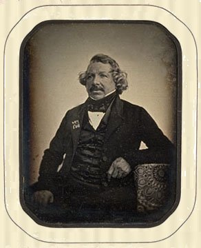
FIGURE XXI
Louis Daguerre par Jean Baptiste Sabatier-Blot, 1844
L'auteur d'une histoire de la photographie attribue au hasard la découverte de la sensibilité de l'argent iodé. Une cuiller placée sans intention sur une plaque d'argent iodé exposée à la lumière, y laissa son image. Pour comprendre ce fait, il faudrait admettre que l'exposition eût été suffisamment prolongée, puisque ce n'est qu'alors que l'image apparaît, d'après Daguerre, dans la chambre obscure; mais évidemment alors l'image n'eût pas été produite comme elle l'est dans la chambre, car c'est l'argent iodé placé en dehors de la cuiller, recevant directement l'influence de la lumière, qui eût été bruni par elle. Et en effet, l'expérience que j'ai répétée ne m'a pas donné l'image de la cuiller, mais, en plaçant une spatule de platine parfaitement plane sur une plaque daguerrienne exposée à la lumière, j'ai eu l'image de la spatule, effet qui est le contraire de l'image héliographique ou photographique, puisqu'il provient de ce que la spatule, en faisant écran, a préservé la partie de la plaque qu'elle recouvrait de l'action de la lumière, tandis que le reste de la plaque s'est colorée en la subissant. Cet exemple justifie bien ce que j'ai dit de la difficulté d'écrire l'histoire d'une science quand on est étranger à ses procédés.
§ 3. - De la Photographie.
Lorsque l'héliographie fut connue, quelques personnes revinrent à l'idée de chercher les moyens de fixer l'image de la chambre obscure sur un papier sensible, de préférence à une plaque métallique. Parmi elles M. Talbot assure s'être livré à ce travail dès 1835, mais il ne fit connaître son procédé que de mai à juin 1841, c'est-à-dire après Daguerre; mon intention n'est pas de le décrire, mais seulement d'en montrer l'analogie avec l'héliographie relativement à une matière sensible et au moyen d'enlever, après l'exposition à la lumière du soleil, la partie de la matière non insolée, à l'exclusion de la partie qui l'a été, ce qui, selon moi, sont les deux conditions qui justifient la qualification de découverte MÈRE, que j'ai donnée à l'invention de l'héliographie. M. Talbot prépare un papier sensible en plongeant un papier imprégné de nitrate d'argent dans de l'iodure de potassium. Ce papier, renfermant de l'iodure d'argent, est passé dans une solution de nitrate d'argent, d'acide acétique et d'acide gallique, appelée gallo-nitrate d'argent. On opère à la lueur d'une bougie. Ce papier ainsi préparé est exposé une minute environ au foyer de la chambre obscure puis, à la lumière d'une bougie, il est replongé dans le gallo-nitrate d'argent, puis chauffé doucement, et l'image apparaît; on le lave, on l'humecte avec une solution de bromure de potassium, puis on le lave et on le sèche. L'image ainsi obtenue est inverse; pour l'obtenir directe, on applique le papier inverse sur le papier sensible qui doit reproduire l'image directe; les deux papiers sont pressés fortement pendant l'insolation, puis on les sépare, et on traite le papier à image directe comme le premier.
DEUXIEME SECTION.
PERFECTIONNEMENTS APPORTÉS À L'HÉLIOGRAPHIE, À LA DAGUERRÉOTYPIE ET À LA PHOTOGRAPHIE.
Il entre dans ma manière d'écrire l'histoire des découvertes, d'exposer chacune d'elles d'abord telles que l'auteur en a parié, et d'exposer ensuite les principaux perfectionnements dont elle a été l'objet. Cette manière de procéder a le grand avantage de montrer clairement qu'une découverte, qu'une invention, quelque surprenante qu'elle paraisse, quelque favorable que soit le jugement qu'on en .porte, prête à recevoir promptement des modifications propres à la perfectionner davantage.
§ 1 - Perfectionnement de l'image héliographique.
Nous avons dit plus haut (p. 282), que Niépce de Saint-Victor, le petit-cousin de Nicéphore, avait montré, en 1853, que la durée de huit heures d'exposition à la lumière, de la plaque rendue sensible par le bitume de Judée, n'était point inhérente au procédé de Nicéphore : c'est maintenant l'occasion de dire que Niépce de Saint-Victor, en enduisant la plaque à graver d'un vernis formé de benzine anhydre, 90 grammes, d'essence de zeste de citron, 16 grammes, de bitume de Judée pur, 2 grammes, a réduit la durée de l'exposition de la plaque sensible, dans la chambre obscure, de vingt-cinq minutes à une heure, seulement de quatre à huit minutes, lorsqu'il s'agit de copier une gravure appliquée contre la plaque sensible. Et, en rappelant les progrès de la gravure héliographique, nous aurons un fait de plus à citer de la persévérance que Daguerre a mise à discréditer les travaux de l'inventeur de l'héliographie, car nous avons vu plus haut (page 285) que, des expériences auxquelles il s'était livré, il avait conclu, que la gravure héliographique serait TOUJOURS imparfaite, ne pouvant croire que, si le succès n'avait pas couronné ses recherches, personne désormais pût dépasser la limite qu'il posait avec tant d'assurance ! Les publications de gravures héliographiques qui suivirent la recherche de Niépce de Saint-Victor témoignent que le sentiment de la famille, qui l'avait porté à perfectionner la gravure héliographique, n'était point une illusion du coeur, mais un sentiment d'accord avec une raison intelligente, bien plus près de la vérité que ne l'était la passion sous l'impression de laquelle Daguerre déclarait impossible le perfectionnement de la gravure héliographique. Parmi les publications de gravures héliographiques, je citerai :
- Celle des cuivres d'Albert Dürer, et la reproduction de quelques-unes des estampes de Marc-Antoine Raimondi, par Benjamin Delessert (neveu) ;
- Celle des eaux fortes de Lepautre, par Baldus ;
- L'Iconographie zoologique, par MM Deveria et Louis Rousseau, d'après les clichés des frères Bisson ;
- Les publications de M. Riffaut.
Parmi les savants qui se sont occupés de perfectionner la gravure héliographique, je citerai M. Donné comme un des premiers qui s'en occupa avec quelque succès, et surtout M. Fizeau, qui, par un ingénieux procédé, montra une fois de plus la sagacité de son esprit.
§ 2 - Perfectionnement de l'image daguerrienne
Si de notables perfectionnements ont été apportés à l'héliographie, des perfectionnements non moins notables l'ont été à la production de l'image daguerrienne, et cela à une époque bien plus rapprochée, par le temps, de l'origine de la daguerréotypie, que les perfectionnements apportés à la gravure héliographique que ne l'ont été de l'invention de Nicéphore Niépce, et, fait curieux, lorsque Daguerre insistait sur le grave inconvénient d'une durée de huit heures d'exposition de la plaque héliographique dans la chambre obscure, il était loin de prévoir qu'un des premiers perfectionnements de son procédé aurait pour objet de réduire la durée de l'exposition de la plaque métallique de quinze minutes à quelques minutes, et même à quelques secondes, comme il est possible de le faire aujourd'hui. Pour être juste, il faut reconnaître que ce résultat a été obtenu par le perfectionnement apporté à la chambre obscure et par la découverte des substances accélératrices [comment là encore ne pas voir un parallèle avec les fameuses « multiplications » des alchimistes où, lors des réitérations de certaines phases du grand oeuvre, ils voient leurs matières subir une évolution de plus en plus rapide... Cf. Ripley et nos symboles]. Charles Chevalier est l'auteur du premier perfectionnement : c'est d'avoir appliqué à la chambre obscure un objectif qui, composé de deux verres achromatiques, a une puissance considérable de lumière relativement à l'ancien. La découverte de la première substance accélératrice est due à Claudet : il reconnut que l'argent iodé reçoit du chlorure d'iode une sensibilité qu'il n'avait pas auparavant. On sait aujourd'hui que le chlore, le chlorure de soufre, le brome, le bromure d'iode, la chaux bromée, le bromoforme, l'acide chloreux, etc., etc., jouissent de cette propriété. La chaux bromée est généralement, employée, et l'acide chloreux l'est quand on désire réduire la durée de l'exposition à moins d'une minute. Ainsi, le reproche que Daguerre faisait à Nicéphore Niépce sur la lenteur avec laquelle la matière sensible de sa plaque héliographique recevait l'impression de la lumière put lui être adressé, puisque c'est grâce aux perfectionnements apportés à son procédé que la reproduction fidèle de la figure humaine, par le daguerréotype, est devenue possible, ainsi que la reproduction fidèle de l'image d'un corps quelconque en mouvement. L'image daguerrienne avait le grave inconvénient de s'altérer par certaines vapeurs, par exemple, celles de plusieurs composés sulfurés, et l'argent amalgamé manquait d'adhérence au métal
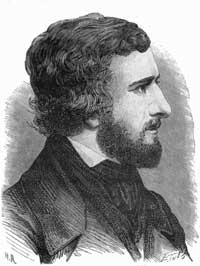
FIGURE XXII
Hippolyte Fizeau [in Les Merveilles de l'Industrie, Louis Figuier]
qu'il recouvrait. Grâce à un ingénieux procédé de M. Fizeau, ces inconvénients n'existent plus : il suffit, pour les prévenir, de dorer la surface de la plaque daguerrienne par un procédé très-simple. L'image daguerrienne est passée au bain d'hyposulfite de soude, puis soumise, soit à l'action de l'hyposulfite de soude auquel on a ajouté du chlorure d'or, soit à une solution d'hyposulfite d'or et de sodium de Fordos et de Gelis; enfin on fait chauffer convenablement, jusqu'à dégagement de bulles gazeuse; l'argent désiodé par l'hyposulfite se dore, ainsi que l'argent uni au mercure, mais ces deux métaux conservent leur blancheur et deviennent en même temps assez adhérents à la plaque pour résister à un frottement qui aurait détaché l'argent amalgamé non doré. Enfin, Niépce de Saint-Victor eut l'heureuse idée, en 1847, de préparer des images inverses sur plaques de verre enduit d'une couche d'amidon cuit ou de blanc d'oeuf préparé de la manière suivante : à l'eau tenant en solution l'amidon cuit ou l'albumine, il ajoute de l'iodure de potassium, puis le liquide est étendu uniformément sur le verre; la couche étant sèche, il la rend sensible en la plongeant dans l'acéto-nitrate d'argent de Blanquart-Evrard,
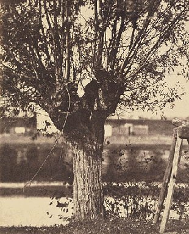
FIGURE XXIII
(daguerréotype de Louis Désiré Blanquart-Evrard, ca. 1860)
puis il l'expose à la chambre obscure, conformément au procédé de cet habile photographe. L'image inverse, ainsi produite, sert de cliché pour reproduire autant d'images directes qu'on le veut. En parlant de ce procédé à l'Académie, dès 1847, j'insistai sur la beauté de l'image, eu égard à la pureté du dessin et à la dégradation de la lumière, qualités dont la cause est l'homogénéité de l'enduit; mais, à l'époque où je le préconisais, le daguerréotype était en grande faveur, et l'on ne prévoyait pas encore le service qu'il rendrait à la photographie et combien il contribuerait à en étendre l'usage.
§ 3. - Perfectionnement de la photographie.
Le procédé de Talbot, tout-ingénieux qu'il est, et toute simple et économique qu'en est aussi l'exécution, quand on le compare au daguerréotype, ne restreignit pas sensiblement l'usage de ce dernier; mais, à partir de la publication d'un simple amateur de Lille, Blanquart-Évrard, faite en 1847, le procédé de Talbot reçut quelques modifications qui, sans être considérables, ajoutèrent à la facilité de son exécution, et dès lors l'image sur papier, ou la photographie proprement dite, se développa, et, grâce à de nouveaux perfectionnements, elle finit par se substituer absolument à la daguerréotypie. Voici le procédé abrégé de Blanquart-Évrard pour préparer d'abord le papier à image inverse (ou cliché) et le papier à image directe.
Papier à image inverse.
Un papier est pénétré d'une solution de nitrate d'argent; il est égoutté et séché, puis plongé dans une solution d'iodure de potassium additionné de 1/25 de bromure. Ce papier, lavé et séché, est étendu sur une glace horizontalement; il y adhère en même temps qu'il reçoit quelques gouttes d'une solution aqueuse d'acide acétique et de nitrate d'argent; on couvre le papier d'une ou plusieurs feuilles de papier buvard humecté; on presse avec une seconde glace et on porte l'ensemble dans la chambre obscure, de manière que la première glace reçoive l'impression de la lumière ; l'exposition ne dure que le quart du temps qu'exigerait une plaque daguerrienne; le papier impressionné est étendu sur un plateau de verre légèrement mouillé et soumis à l'action d'une solution saturée à froid d'acide gallique; à l'instant, l'image apparaît. La solution est retirée avant que les blancs du papier perdent leur blancheur. Le papier est lavé.
Papier à image directe.
Il est passé dans une solution de chlorure de sodium, séché sur le papier buvard, puis plongé dans un bain de nitrate d'argent et lavé. On le place sur la surface du papier-cliché, on couvre d'une glace et on expose vingt minutes au plus au soleil. On porte le papier impressionné dans une pièce obscure, on le tient plongé un quart d'heure dans l'eau pure, puis deux heures dans l'eau d'hyposulfite de soude. Je note, sans réflexion, que Blanquart-Evrard n'a pas cité le nom de Talbot. Le reproche réel qu'on pouvait faire à ce procéda tenait à la structure du papier, si hétérogène, physiquement parlant, quand on lecompare à l'homogénéité d'une surface métallique polie ; dès lors on ne pouvait prétendre avoir la pureté de trait et la dégradation de la lumière de l'image sur métal. Heureusement cet inconvénient disparut en grande partie par l'heureuse idée de Niépce de Saint-Victor, qui substitua au papier-cliché une glace enduite d'albumine de l'oeuf rendue sensible par de l'iodure de potassium ; mais l'enduit albumineux péchait par la sensibilité. Heureusement, G. Le Gray indiqua le collodion (C'est le pyroxyle ou coton-poudre qu'on a dissous dans un mélange d'alcool et d'éther et obtenu ensuite en feuille homogène par l'évaporation du dissolvant); mais c'est à Fry et à Arche qu'est dû le meilleur mode d'employer cette matière. Le collodion, bien préparé, a le grand avantage d'être fort sensible à l'action de la lumière : il en reçoit l'influence en une seconde de temps, ce qui le rend éminemment propre à recevoir l'image de la figure humaine et celle d'un corps quelconque en mouvement. Enfin, la gélatine a été employée en 1850 par Poitevin, et Baldus, en l'étendant sur un papier pour en faire un cliché, s'en est servi avec un grand succès pour copier les monuments.
TROISIÈME SECTION.
DE L'HÉLIOGRAPHIE, DE LA DAGUERRÉOTYPIE ET DE LA PHOTOGRAPHIE AU POINT DE VUE
THÉORIQUE. HISTOIRE DE LA THÉORIE DE L'HÉLIOGRAPHIE, DE LA DAGUERRÉOTYPIE ET DE LA PHOTOGRAPHIE.
§ I. - Héliographie.
Nicéphore Niépce croyait que la lumière modifie les corps en se combinant avec eux.
« Ainsi, dit-il, elle augmente la consistance naturelle de quelques-uns de ces corps; elle les solidifie même, et les rend plus ou moins insolubles, suivant la durée ou l'intensité de son action. Tel est en peu de mots le principe de la découverte. » (La vérité sur l'invention de la photographie, page 167.)
Eh bien, cette explication est inexacte comme je l'ai démontré en 1864. Les recherches citées dans ce journal (Compte rendu de la séance de l'Académie des sciences du 28 d'août 1864.), qui m'ont occupé depuis que je suis aux Gobelins, sur la réaction de la lumière et des corps colorés, démontrent qu'en la plupart des cas où des matières d'origine organique éprouvent quelques changements de la part de la lumière, ces changements n'arrivent que par l'intervention de l'oxygène atmosphérique, de sorte qu'ils n'ont pas lieu dans le vide où la lumière pénètre, et, de plus, lorsque les mêmes corps sont mis dans des vases opaques remplis d'air, à l'abri de la lumière : deux causes, la lumière et l'oxygène, agissent donc simultanément. Je dis l'oxygène, parce qu'ils se manifestent dans ce gaz et non dans l'azote, l'hydrogène, etc. La modification que le bitume de Judée, qui enduit la plaque de métal de Nicéphore Niépce, ne devient insoluble sous l'influence de la lumière qu'à la condition d'opérer au sein de l'air, j'en ai fait faire l'expérience aux Gobelins par Niépce de Saint-Victor. Une plaque sensible enduite de bitume de Judée fut insolée dans le vide où la lumière pénétrait, et, après une insolation prolongée, la plaque soumise au dissolvant de pétrole et d'huile de lavande n'a présenté aucun dessin, tout le bitume, malgré l'insolation, ayant conservé sa solubilité. Cette expérience a été contrôlée rigoureusement.
§ 2. - Daguerréotypie
L'histoire de la théorie de la daguerréotypie est bien moins avancée que celle de l'héliographie. Daguerre n'a absolument rien publié de précis sur la théorie de son procédé. Avant d'aller plus loin, donnons une idée précise de l'image daguerrienne telle que je l'ai exposée dans un mémoire lu à l'Institut, le 25 d'octobre 1847. L'image daguerrienne, quant à l'explication des clairs et des ombres qu'elle montre au spectateur placé de façon à la voir de la manière la plus distincte possible, est dans la position où se trouverait un damas de soie monochrome, lorsque le fond, armure satin, paraîtrait à ce spectateur, ombrée et le dessin, armure taffetas, clair relativement au fond satin. Le satin est formé de fils de soie parallèles réfléchissant surtout la lumière régulièrement ou, comme on dit, spéculairement, à la manière d'un miroir. Lorsque le spectateur voit le satin dans le sens de la lumière réfléchie spéculairement, il le voit comme l'étoffe de soie qui a le plus de brillant; mais dans la position diamétralement opposée, le satin lui apparaît comme la plus obscure des étoffes de soie, et c'est dans cette dernière position que ce satin lui semble obscur à la manière du métal poli de l'image daguerrienne, et que l'armure taffetas, dont il voit à la fois la chaîne et la trame, présente des parties inégalement brillantes, mais qui se détachent en clair du fond satin à l'instar des parties de l'image daguerrienne qui ont été amalgamées par la vapeur du mercure. Voilà ce qui est vrai. Mais que se passe-t-il lorsque l'argent iodé reçoit l'action de la lumière ? Se dégage-t-il de l'iode comme on l'a pensé d'abord ? Et dans quel état se trouve l'argent après l'insolation et avant l'amalgamation ? Les tentatives que j'ai faites pour rendre visible l'iode qui pourrait se dégager de l'argent iodé, exposé à la lumière des heures entières dans un tube ou plongeaient des papiers amidonnés humides, ont échoué. Mais j'ai constaté de fait observé dès 1841 par M. Donné, c'est, après l'insolation, le défaut d'adhérence de la surface iodée au métal qu'elle recouvre; le moindre frottement la déplace en poussière, tandis que la surface non insolée conserve son brillant jaune d'or. Les explications théoriques de l'image daguerrienne données jusqu'ici se réduisent à deux principales. La plus ancienne veut que l'argent iodé exposé à la lumière soit réduit en sous-iodure; mais s'en dégage-t-il une portion d'iode, ou l'iodure produit à l'ombre passerait-il à l'état de sous-iodure en s'unissant à une proportion d'argent. Voilà ce qu'on n'a pas dit. Quoi qu'il en soit, on ajoute qu'en exposant la plaque insolée à la vapeur de mercure à une température qui ne doit pas dépasser 60 degrés, alors le mercure s'amalgame à l'argent qui est en excès de l'iodure neutre, et, dès lors, cet iodure est enlevé par l'hyposulfite de soude comme l'iodure de la partie de la plaque non insolée. Une nouvelle explication a été donnée, de 1866 à 1867, par M. Carey-Lea [cf. l'affaire de l'argentaurum]. L'auteur suppose que la lumière n'agit que mécaniquement sur l'argent iodé, elle le presse comme le ferait un corps qui serait placé dessus, et c'est en raison de cette action que, si la plaque est soumise, en sortant de la chambre obscure, à la vapeur de mercure, Celui-ci s'amalgame aux parties de la plaque qui ont été insolées. Dans l'état actuel de mes connaissances, où je n'aurais que des expériences négatives à exposer comme critique de l'une ou de l'autre des explications que je viens de rapporter, il est convenable de ne pas aller plus loin que ce que je viens de dire.
On a parlé de globules de mercure ou plutôt de globules d'amalgame d'argent constituant les clairs de l'image daguerrienne, je suis loin d'en nier l'existence, le microscope avec lequel j'ai cherché à les voir pouvant avoir été trop faible; mais ce qui m'a étonné, c'est qu'une feuille d'or, appliquée aux clairs de plusieurs images daguerriennes développées sous mes yeux dans mon laboratoire, n'a point blanchi.
§ 3. - Photographie.
La théorie de la photographie laisse autant à désirer que celle de l'image daguerrienne. Ainsi l'on ignore ce qui se passe dans la production de l'image inverse, lorsque l'acide gallique la fait apparaître sur le papier qui sort de la chambre obscure. De ce que les désoxydants agissent pour faire paraître l'image comme fait le sulfate de protoxyde de fer, cela ne suffit pas pour expliquer le phénomène. On ne se rend pas compte du passage du papier après l'apparition de l'image dans l'eau de bromure de potassium, ensuite on ne donne pas la raison pour laquelle on se dispense de passer le papier dans le bain d'hyposulfite de soude lorsqu'on le fait pour l'image directe. Après avoir montré ce que la fixation de l'image de la chambre obscure laisse encore à désirer au point de vue de la science théorique, je ne puis trop insister, dans l'intérêt de l'art et du public, sur la nécessité de connaître, avec certitude, les meilleurs moyens d'assurer la durée des images photographiques; car j'ai constaté, par ma propre expérience, l'inégalité de stabilité de diverses photographies choisies avec soin dans le commerce. La conférence en jugera elle-même par les exemples que je mets sous ses yeux, et j'ajouterai qu'un certain nombre de photographies, qui m'ont été données par leurs auteurs, ont considérablement perdu, quoique conservées à l'abri de la lumière. Tant qu'on ne sera pas plus avancé sur le point de la photographie dont je parle, il importera de publier, aussi promptement que possible, les images photographiques reproduites en dessins indélébiles, afin d'éviter les inconvénients que je signale.
QUATRIÈME SECTION.
DIFFÉRENCE D'ESPRIT DE CLAUDE ET DE NICEPHORE NIÉPCE, ET RÉFLEXIONS SUR L'HISTOIRE DE L'HÉLIOGRAPHIE, DE LA DAGUERRÉOTYPIE ET DE LA PHOTOGRAPHIE.
§ I. - Les deux frères Niépce.
Malgré la sympathie mutuelle de Claude et de Nicéphore Niépce, malgré la conformité d'esprit que semblaient leur donner des recherches accomplies en commun, durant vingt ans au moins, lorsqu'on les juge tous les deux après leur mort, l'examen comparatif montre bientôt que la conformité est apparente, tandis qu'une différence, incontestable les distingue l'un de l'autre, et cette différence apparaît déjà dans leurs travaux communs. En effet, comme je le rappelle (Journal des Savants, 1873, p. 74 et 75), Claude eut évidemment l'initiative dans les travaux relatifs à la construction de nouvelles machines, et évidemment encore, à mon sens, Nicéphore, plus porté que son frère à l'étude de sujets du ressort des sciences physico-chimiques, eut l'initiative des recherches sur l'extraction de l'indigo du pastel; enfin Nicéphore seul s'occupa de lithographie, et n'oublions pas que l'étude des vernis que cette sorte d'impression exige le conduisit à la découverte de la fixation de l'image héliographique, et maintenant n'est-il pas vraisemblable que cette diversité d'aptitude qui distingue les deux frères ne fut point étrangère à la résolution que prit Claude, en 1816, de quitter Châlon-sur-Saône pour se livrer,seul à des recherches de mécanique ? Quoiqu'il en soit, Claude, une fois séparé de son cher Nicéphore, ne fit rien à Paris de ce qu'il espérait; aussi le quitta-t-il pour l'Angleterre, et là, toujours sous l'illusion qu'il ne devait jamais abandonner, après avoir perdu fortune et santé, il mourut, et l'idée d'avoir découvert le mouvement perpétuel adoucit, prétend-on, la misère de ses derniers moments ! Une chose malheureusement vraie est la disposition des hommes, en général, à amoindrir le mérite réel de celui dont ils ne connaissent pas la personne, lorsqu'ils se croient intéressés, par un motif quelconque, à grandir un homme qu'ils jugent susceptible de perdre par la comparaison qu'on fait de lui avec l'inconnu. Telle est l'histoire de Nicéphore Niépce et de Daguerre. La découverte d'avoir fixé le premier l'image de la chambre obscure lui appartient incontestablement, un traité authentique en fait foi (Journal des Savants, 1873, page 67), ainsi que le témoignage d'un membre de la Société royale de Londres, possesseur de spécimens dont QUELQUES-UNS SONT ENCORE ENTRE SES MAINS , écrit-il, et deux grandes autorités scientifiques, en France, la patrie de Nicéphore Niépce, méconnaissent la grandeur de l'invention; l'une d'elles la déprécie avec passion, autant que possible, et l'autre en parle à peine ! (Idem, pages 77 et 78) La découverte est vraiment originale parce qu'on ne pouvait la déduire de ce qui était connu. Elle n'est point le fruit du hasard, c'est une oeuvre réfléchie, et nous demandons si la découverte de la matière sensible, et si, ensuite, la nécessité d'enlever, après l'insolation, la partie de la matière sensible non insolée, ne sont pas le résumé vrai et concis de l'invention de Nicéphore ! Nous demandons si ce résumé ne s'applique pas au procédé de Daguerre comme au procédé de la fixation de l'image sur papier ? Nous demandons enfin si, ces faits rappelés, nous avons eu tort de qualifier l'invention de Nicéphore Niépce de mère de la daguerréotypie et de la photographie ? On a dit, non pour le louer, Nicéphore ne fut pas un savant; en répondant affirmativement qu'on ne s'étonne pas du commentaire. Il ne fut pas un savant de profession, sans doute, mais, à mon sens, il fut un savant d'invention. Une fois l'idée de fixer l'image de la chambre obscure arrêtée dans son esprit, il recherche partout ce qui peut la réaliser, et, pour exemple, je cite ses recherches sur le phosphore devenu rouge dans le vide, sous l'influence de la lumière, en même temps qu'il a perdu sa solubilité dans les liquides où il se dissolvait avant l'insolation (Idem, p. 81). Il ne donne rien au hasard; après avoir expérimenté de toutes les manières possibles sur le phosphore, il y renonce et continue ses essais en employant d'autres matières. Qu'on sache bien la différence existant entre le savant de profession, en quoi que ce soit, dont le savoir s'arrête à ce que les autres ont fait, et l'homme de génie qui recherche curieusement dans les connaissances acquises ce qui a trait à une pensée nouvelle, avec l'intention de la faire passer de l'idéal au réel, et qui, doué de l'esprit éminemment scientifique, du bon sens, n'abandonne une recherche qu'après en avoir reconnu le néant par l'expérience; ce n'est qu'après des essais de ce genre qu'une grande découverte est faite. Eh bien, voilà Nicéphore Niépce tel que je me le représente dans son domaine du Gras ! Voilà l'homme de génie dont les essais multipliés et consciencieux aboutissent à l'héliographie ! Voilà ce qui le distingue éminemment de son frère Claude ! Sans doute, Claude avait de l'imagination, l'invention de plusieurs machines, en général, et du pyréolophore, le prouve; si on le veut, il avait même de l'esprit d'invention, mais il manquait du bon sens de Nicéphore, bon sens aussi précieux dans la science que dans la famille, parce qu'on lui doit la distinction du vrai d'avec le faux. Claude, dominé par l'imagination, ne savait pas s'arrêter dans ses recherches lorsque le résultat était hors de ses prévisions, et c'est ainsi qu'il s'abandonna à la chimère du mouvement perpétuel.
§ II. - Résumé de l'histoire de l'héliographie, de la daguerréotypie et de la photographie.
Résumons à grands traits l'histoire de l'héliographie et des développements qui furent la conséquence de la découverte de Nicéphore Niépce, en insistant sur l'intérêt qu'elle présente au point de vue de l'entendement aussi bien qu'au point de vue moral. Nous avons vu comment la beauté de l'image daguerrienne avait contribué à reculer l'époque où, justice fut rendue à l'inventeur de l'héliographie. Nous avons vu Daguerre, méconnaissant la découverte originale, signaler ce que l'exécution laissait souvent à désirer. Mais, deux ans au plus après la publication du procédé de Daguerre, Talbot fit connaître le procédé qui donnait la première SOLUTION de la fixation de l'image de la chambre obscure sur papier. Cependant, malgré la facilité des manipulations, l'économie de toutes sortes, comparativement avec la daguerréotypie, le procédé de Daguerre ne cessa point encore d'être universellement pratiqué. A la vérité, deux grandes améliorations furent apportées à son procédé : ce fut l'augmentation de sensibilité de la plaque daguerrienne par l'emploi du chlorure d'iode, puis l'usage du brome, proposé par Fizeau, et enfin la dorure de l'image daguerrienne, due encore à cet illustre physicien. Ce ne fut qu'après 1847 que Blanquart - Évrard publia son procédé qui, en définitive, n'était que celui de Talbot avec quelques heureuses modifications, que commença la révolution, accomplie aujourd'hui, de l'abandon absolu de la daguerréotypie en faveur de la photographie. Si, en ce moment, infidèle aux principes qui nous guident dans l'appréciation de l'esprit de découverte ou d'invention, nous jugions Daguerre comme il a jugé Nicéphore Niépce, si nous disions qu'il ne reste plus rien de son invention dans la science, nous serions passible d'injustice; mais tout en faisant remarquer que, si Talbot ne semble pas avoir profité du procédé de Daguerre, indubitablement il a servi Blanquart-Évrard, et celui-ci est bien répréhensible auprès de la justice de l'histoire de ne pas avoir parlé du procédé de Talbot. Mais ce procédé de Blanquart-Évrard, qui commence à montrer que le daguerréotype n'avait pas toutes les qualités que lui attribuaient les partisans de Daguerre lorsqu'ils ne parlaient que de l'héliographie, ce procédé de Blanquart-Évrard, dis-je, est-il supérieur par ses produits à ceux du daguerréotype ? Oui, au point de vue de l'économie, de la facilité de son exécution et de l'absence du miroitage, si désagréable des images sur argent poli ; mais il lui est inférieur quant à la pureté du trait et à la dégradation des clairs et des ombres. Quelle est la cause de cette infériorité ? Elle réside tout entière dans la contexture hétérogène du papier comparée à l'homogénéité de la surface de l'argent poli. C'est précisément cette infériorité qu'il fallait faire disparaître ou atténuer, au moins, et c'est le service que rendit Niépce de Saint-Victor en imaginant la photographie sur verre au moyen de son enduit d'albumine sensible parfaitement homogène; l'épreuve négative du cliché, en photographie, ne fut plus du papier, mais un verre dont l'enduit était parfaitement homogène. Voilà donc un véritable progrès que la photographie doit à Niépce de Saint-Victor; mais l'albumine avait un défaut : trop paresseuse à recevoir l'impression de la lumière, elle se refusait à la reproduction de l'image de la figure humaine ou même à celle d'un corps quelconque en mouvement.
Heureusement que trois personnes, Le Gray, Fry et Arche, en 1850, contribuèrent, à des titres divers, à substituer le collodion (Journal des Savants, 1873, p. 67) à l'albumine, et, grâce à cette substitution, quelques secondes au plus suffisent aujourd'hui pour satisfaire aux deux cas précédents. Si les détails dans lesquels je suis entré, si les réflexions et les considérations auxquelles je me suis livré, paraissaient trop étendues à mes lecteurs, j'invoquerais comme excuse mon amour pour la vérité et la justice, et mes voeux pour le progrès des connaissances humaines. N'y a-t-il pas, dans cette histoire d'une branche de science dont l'origine est contemporaine et dont le développement a été si rapide, un enseignement précieux pour tous ceux qui pensent que les véritables éléments d'un livre sur l'entendement sont les faits précis et exactement définis dont la manifestation s'est faite successivement dans le développement des différentes branches du génie de l'homme.
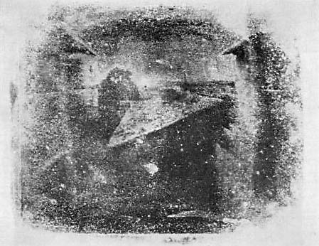
FIGURE XXIV
photographie non retouchée de Nicéphore Niépce, prise au « Gras », cf. fig. XIV
L'histoire dont nous avons tracé un résumé rapide montre comment une découverte originale fut faite, par un penseur doué de toutes les qualités du citoyen et du père de famille, dans une campagne solitaire durant de longues années, et comment la découverte de l'homme modeste, inconnu du monde parisien, fut si longtemps à être appréciée à sa juste valeur. Est-il superflu, lorsque la justice tarde tant à prononcer un arrêt en faveur de l'homme dénué d'ambition et travaillant sans l'espoir d'une récompense, qu'une voix s'élève pour combattre les passions intéressées et triompher de l'indifférence de la masse, jouissant du bienfait sans s'inquiéter de l'auteur, à qui elle devrait, au moins, sa reconnaissance ! Est-il inutile de proclamer bien haut la différence existant entre le mérite d'une découverte originale, dont le caractère est l'imprévu, comme l'héliographie, et les inventions secondaires, conséquences de la première, telles que sont la daguerréotypie et la photographie. N'est-il pas conforme à la justice, à la vérité, comme à la morale, d'insister sur l'exaltation si injuste du daguerréotype au détriment passionné de l'héliographie, de montrer combien les procédés de Fizeau, de Claudin, etc., ajoutèrent de perfections à la daguerréotypie; d'insister sur la disparition du daguerréotype devant la photographie par une succession de perfectionnements dont les derniers annulent les précédents ! Une conséquence morale ne découle-t-elle pas de cette succession si rapide de faits auxquels l'héliographie a donné lieu comme découverte mère ? Le daguerréotype sembla, pendant quelques années, devoir durer toujours, surtout avec les premiers perfectionnements dont il fut l'objet. Cependant, la photographie de Talbot, accueillie froidement d'abord, se perfectionna peu à peu, et enfin elle remplaça le daguerréotype définitivement. N'est-ce pas un exemple frappant de la faiblesse de l'esprit humain dans l'individu, lors même du cas d'une découverte mère, et, en prenant en considération l'intervention d'une foule de personnes qui viennent la perfectionner, n'est-on pas conduit à atténuer la gloire de l'inventeur ? Le perfectionnement rapide des inventions originales est dans l'intérêt de la société; mais, en le reconnaissant, il faut parler en faveur des inventeurs et mettre un grand intervalle entre leur mérite et celui des auteurs de simples perfectionnements; aussi ne puis-je dire trop haut : c'est aux corps savants à juger les inventeurs; à eux incombe le devoir d'appeler l'attention des gouvernements sur les services qu'ils rendent à la société et d'être leur intermédiaire auprès du public, pour lui apprendre ce qu'il leur doit de gratitude ! C'est sous l'influence de cette pensée que cet article et le précédent ont été composés.
CONSIDÉRATIONS SUR LA REPRODUCTION, PAR LES PROCÉDÉS DE M. NIÉPCE DE SAINT-VICTOR, DES IMAGES GRAVÉES, DESSINÉES OU IMPRIMÉES. - Mémoire de l'Académie des Sciences, tome XX, 1849 -
PAR M. E. CHEVREUL.
LUES dans la séance du 5 octobre 1847,
INTRODUCTION.
1. Si la nouveauté et l'imprévu suffisaient pour donner à des expériences tout l'intérêt qui peut satisfaire une pure curiosité, je n'aurais rien à ajouter à l'exposé qu'on vient d'entendre des travaux de M. Niepce de Saint-Victor, tel qu'il l'a rédigé et déposé à l'Académie ; mais par l'originalité des résultats, par les conséquences qu'ils ont déjà et celles qu'ils auront encore tôt ou tard , ces travaux m'ont paru se prêter à des considérations que ne jugeront pas superflues les personnes qui s'efforcent de lier les faits nouveaux avec ceux que l'on connaissait déjà, afin d'établir la contiguïté des efforts par lesquels s'étend incessamment le champ de la science, comme si une seule intelligence le cultivait.
2. Il s'en faut beaucoup que les chimistes et les physiciens aient donné une égale attention aux différentes sortes d'actions moléculaires que la matière présente à l'observation.
3. Les actions en vertu desquelles se font les combinaisons définies ont occupé les chimistes, pour ainsi dire, à l'exclusion des physiciens, soit qu'il s'agisse des composés résultant des affinités les plus énergiques en vertu desquelles des corps comme l'oxygène, le chlore, etc., s'unissent au potassium, au sodium , etc., ou des composés résultant de la neutralisation mutuelle des acides et des alcalis ; soit qu'il s'agisse des composés ternaires ou quaternaires définis, dans lesquels on expulse un de leurs éléments, l'hydrogène, par exemple, par un autre corps, tel que l'oxygène, le chlore, etc. Les chimistes n'ont pas borné leur étude aux phénomènes passagers de ces actions ; ils l'ont étendue encore aux propriétés de leurs produits.
4. Les actions moléculaires en vertu desquelles se font les composés indéfinis, tels que la plupart des alliages métalliques , la solution de corps solides ou de fluides élastiques dans les liquides neutres, et des composés solides produits d'une cémentation, comme l'acier, ont fixé à la fois l'attention des chimistes et celle de plusieurs physiciens, parce qu'il semble en effet que, dans les composés indéfinis, l'affaiblissement de l'action moléculaire rapproche les phénomènes de ceux qui sont du domaine de la physique. [Fulcanelli a écrit que l'alchimie, à un certain moment, se démarquait de la chimie pour prendre la voie de la physique et qu'un certain procédé se signalait par la grande lenteur de son processus]
5. Les actions moléculaires par lesquelles des corps dissous dans des liquides se fixent à des solides, sans que la forme de ceux-ci en paraisse changée, comme cela arrive aux étoffes teintes dans des bains colorés, n'ont guère été examinés jusqu'ici que par le petit nombre des chimistes qui se sont livrés à l'étude de la théorie de la teinture. Je cite particulièrement ces composés pour exemple des combinaisons chimiques que je rapporte à l'affinité capillaire, parce que c'est essentiellement par les molécules de sa surface qu'un solide entre sans désagrégation de ses molécules en combinaison avec un corps.
6. Quant aux actions moléculaires en vertu desquelles l'eau donne aux tissus des animaux les propriétés nécessaires à remplir le rôle que l'organisation leur a imposé dans les phénomènes de la vie, et à divers corps pulvérulents inorganiques la propriété de constituer des pâtes tenaces et ductiles, elles ont été l'objet d'études plus rares encore que les précédentes.
7. Enfin, des chimistes aussi bien que des physiciens se sont occupés de l'examen des actions que certains solides, particulièrement ceux qui sont poreux ou réduits en poudre impalpable, exercent par leur surface sur des fluides élastiques; leur attention s'est particulièrement fixée sur les phénomènes manifestés pendant l'action plutôt que sur les propriétés permanentes acquises par les corps qui y ont pris part; résultat tout simple quand on considère qu'aux yeux de beaucoup de chimistes, l'affinité de laquelle on fait dépendre les combinaisons définies n'existe pas dans les cas dont nous parlons.
8. En définitive, nous voyons comment, à une certaine limite des actions moléculaires, le chimiste et le physicien interviennent dans l'étude de phénomènes qui, au dire de plusieurs, seraient affranchis de l'affinité proprement dite, et rentreraient d'après cela dans la classe des actions purement physiques. Quoi qu'il en soit de cette opinion, les produits de ces actions n'ont point un caractère de permanence dans leurs propriétés, ou une constitution susceptible d'être déterminée d'une manière tellement précise, qu'on puisse les comparer aux composés chimiques proprement dits, à ceux même dont les proportions des éléments sont indéfinies.
9. J'ai cru devoir rappeler cet état de la science, dans l'espérance d'en faire comprendre les rapports avec les recherches de M. Niepce de Saint-Victor ; car dans les expériences qu'il a décrites, l'influence de l'affinité est incontestable. Il se forme des composés définis, des composés analogues à ceux qui sont produits en teinture lorsque des étoffes se combinent à des acides, à des bases, à des sels, à des principes colorants, sans changement de leur état solide; en outre, des vapeurs se fixent à des solides en vertu d'une force attractive suffisante pour vaincre une partie de leur tension seulement, de sorte que, dans le vide ou dans un espace qui est au-dessous d'une certaine limite de saturation de cette même vapeur, les solides qu'on y place laissent exhaler la totalité, ou du moins une portion de celle qu'ils avaient fixée d'abord.
10. Pour plus de clarté, je ferai trois catégories des expériences de M. Niepce de Saint - Victor.
- Dans la première, je comprendrai celles qui concernent la reproduction, au moyen de l'iode, d'une gravure, d'un dessin, d'un imprimé, etc., sur un papier collé en cuve avec de l'amidon et du résinate d'alumine, ou sur un enduit d'amidon cuit et adhérent à une surface unie de verre ou de porcelaine.
- Dans la seconde, je comprendrai les expériences dont l'objet est la reproduction d'une gravure, d'un dessin , d'un imprimé, etc., sur une surface métallique polie, au moyen de divers fluides élastiques.
- Dans la troisième, je parlerai de la reproduction des images du foyer d'une chambre obscure, au moyen d'un composé d'argent appliqué sur un enduit d'albumine au lieu de l'être sur du papier.
§1-PREMIÈRE CATÉGORIE D'EXPÉRIENCES.
Reproduction, au moyen de l'iode, d'une gravure, d'un dessin, d'un imprimé, etc., sur un papier collé en cuve avec de l'amidon et du résinate d'alumine, ou sur un enduit d'amidon cuit et adhérent à une surface unie de verre ou de porcelaine.
11. Lorsqu'on expose à la vapeur d'iode un papier bien sec sur lequel se trouve une image quelconque, gravée, dessinée ou imprimée, la vapeur se fixe aux parties noires du papier, de préférence aux parties blanches: cependant, il s'en fixe un peu sur ces dernières; aussi s'y manifeste-t-il une teinte jaune lorsque l'exposition à la vapeur a été prolongée comme il convient à la réussite de la reproduction de l'image sur papier. Si l'on applique l'image convenablement iodée sur un papier qui contient de l'amidon et mouillé d'eau aiguisée d'acide sulfurique pur, ou, ce qui est bien préférable, sur un enduit uni d'amidon cuit fixé au verre ou à la porcelaine, et également mouillé d'eau acidulée, l'iode quitte la matière de l'image pour constituer avec l'amidon le composé bleu ou bleu violet connu de tout le monde. Les premières épreuves doivent toujours être rejetées, parce que les blancs sont colorés par la petite quantité de vapeur d'iode qui s'est fixée aux parties blanches de l'image originale; on ne peut voir sans étonnement la fidélité avec laquelle les traits les plus délicats du modèle se retrouvent dans les épreuves que l'on obtient ensuite. [au point de vue du symbolisme alchimique, on ne peut qu'être étonné par cette similitude où les Artistes sont, d'assurer que l'impétrant doit d'abord remarquer la NOIRCEUR : et c'est bien l'iode - c'est-à-dire par cabale le violet, ion - qui s'imprime sur le NOIR en RÉVÉLANT l'image inscrite sur le papier. ]
12. Au point de vue scientifique, l'étude de cette reproduction est très-intéressante. En effet, lorsque le modèle se trouve exposé à la vapeur d'iode, celle-ci se porte sur les noirs de préférence aux blancs: mais cela ne veut pas dire que ce soit à l'exclusion des blancs ; car en prolongeant l'exposition, ceux-ci se colorent en orangé jaune-brun par de la vapeur d'iode qui s'y condense. Qu'est-ce qu'il y a donc de vrai dans les expériences de M. Niepce ?
-1° C'est que les noirs absorbent la vapeur d'iode plus vite que les blancs, et en proportion plus considérable ; dès lors, en n'exposant une gravure à la vapeur d'iode qu'un temps insuffisant à la coloration des blancs, les noirs iodés seuls peuvent reproduire leur image.
-2° C'est que si une gravure a été exposée à la vapeur d'iode assez longtemps pour que les blancs se soient iodés, en la tenant ensuite à l'air libre un temps convenable, l'iode abandonne les blancs, tandis qu'il en reste assez dans les noirs pour que ceux-ci reproduisent leur image.
13. Tous ces effets se manifestent en prenant les corps à une même température, en les mettant en présence à la lumière diffuse ou dans l'obscurité, au milieu de l'air ou dans le vide.
14. Conclusion. Il y a une force attractive dans la matière des noirs capable de surmonter la force répulsive de la vapeur d'iode. Cette force existe dans la matière blanche du papier, mais à un degré plus faible. [il est assez remarquable de voir postulé l'un des éléments fondamentaux de la doctrine alchimique, selon quoi la couleur NOIRE doit d'abord apparaître, c'est-à-dire être située au premier plan : n'est-ce pas là ce qui est réalisé, lorsque Chevreul parle comme d'une FORCE ATTRACTIVE de la matière des NOIRS ?]
Elle est identique à celle qui opère la condensation des fluides élastiques à la surface des corps. Si on la confond avec l'affinité, son action est des plus faibles dans les phénomènes dont nous parlons [(4) et (7)].
15. La force attractive en vertu de laquelle les noirs fixent la vapeur d'iode se manifeste encore lorsqu'on plonge une gravure dans l'eau d'iode pendant 4 minutes : celui-ci quitte son dissolvant pour s'unir à la matière des noirs, et la gravure passée dans l'eau pure reproduit ensuite son image sur enduit d'amidon, comme si elle eût été préalablement exposée à la vapeur de l'iode. [exemple d'un déplacement qui reproduit l'image de l'eau mercurielle, c'est-à-dire du Mercure philosophique]
16. Ces expériences sont du plus grand intérêt pour la théorie de la teinture, car une gravure est, par rapport à l'iode dissous dans l'eau que ses noirs attirent plus fortement que ne le font les blancs, ce qu'une toile de coton, sur laquelle on a appliqué la matière d'un dessin mordancé d'alumine, de peroxyde d'étain, de peroxyde de fer, etc., [notons au passage que Chevreul cite, dans la voie sèche, ce que les alchimistes nomment leur SEL et leur SOUFRE ROUGE. Le cas de l'étain rejoint, lui, la voie humide qui ouvre l'accès au soi disant or potable et, surtout, au pourpre de Cassius] au moyen d'une planche ou d'un rouleau gravé, est par rapport aux principes colorants de la cochenille , de la garance, de la gaude, etc., dissous dans un bain de teinture, que fixent les parties mordancées. Si l'opération ne se prolonge pas, si les principes colorants ne sont point en excès, les parties de la toile non mordancées pourront ne point se colorer, ainsi que les blancs de la gravure peuvent ne pas prendre d'iode. Mais dans le cas contraire, les blancs perdront leurs principes colorants par l'exposition aux agents atmosphériques ou par un bain léger de chlore, comme les blancs d'une gravure iodée perdront leur iode par l'exposition à l'air ou par un simple lavage à l'eau.
17. Les noirs d'une gravure fixant l'iode à l'état de vapeur aussi bien que l'iode en solution dans l'eau, établissent un nouveau rapport entre le phénomène de la condensation d'un fluide élastique par un solide, et le phénomène de la fixation par un solide d'un corps dissous dans un liquide. [c'est le phénomène dit d'accrétion dans la voie sèche, qui est sa deuxième phase, comme Fulcanelli l'a bien montré dans le Myst. Cath.]
18. Enfin l'iode fixé aux noirs les abandonne, du moins en partie, pour se fixer sur l'amidon humecté formant enduit sur papier, sur plaque de verre, ou encore sur plaque de porcelaine, et il reproduit l'image des noirs en iodure d'amidon d'un bleu violet, connu de tous ceux qui s'occupent de chimie. Si l'amidon humide a une supériorité d'affinité pour l'iode sur la matière des noirs, le cuivre à son tour en a une plus grande que l'amidon pour le même corps. Rien de plus intéressant que les deux expériences suivantes de M. Niepce de Saint-Victor, qui le prouvent :
- Première expérience. On applique une gravure iodée sur un enduit d'amidon humide adhérent à une plaque de cuivre ; l'iode quitte les noirs, passe au travers de l'amidon , se porte sur le métal, s'y unit et y dessine l'image.
- Deuxième expérience. Une image d'iodure d'amidon bleu-violet sur verre est mouillée, puis appliquée sur une plaque de cuivre. L'image colorée s'évanouit peu à peu, pour se reproduire sur la plaque de cuivre en iodure de ce métal.
19. Certes, au point de vue de la mécanique chimique, il est peu de phénomènes aussi remarquables que cette succession de fixations et de déplacements de l'iode relativement à une série de corps doués chacun à son égard d'une force attractive différente; ainsi, la matière noire d'une gravure l'attirant plus que ne le fait le papier blanc, rappelle à la fois l'action des corps poreux sur les vapeurs et celle des étoffes mordancées sur des principes colorants dissous dans l'eau ; l'amidon humide, enlevant l'iode à la matière noire des gravures, forme un iodure bleu dont la composition paraît bien définie; enfin, le cuivre, enlevant à son tour l'iode à l'amidon, constitue sans doute encore avec lui un composé défini, et, fait digne d'attention, dans tous ses déplacements, l'iode constitue toujours l'image produite par la matière noire qui l'a absorbé en premier lieu !
20. La vapeur d'iode se fixe aux noirs produits sur papier blanc avec de l'encre grasse, de l'encre aqueuse non gommée, de la plombagine, du charbon de fusain, de préférence aux blancs ; elle se comporte d'une manière analogue à l'égard du bois d'ébène relativement au bois blanc, de la soie noire relativement à la soie blanche, enfin des parties noires des plumes blanches et noires de pie et de vanneau relativement aux parties blanches de ces mêmes plumes.
21. Avant de passer outre, je crois utile d'ajouter quelques faits propres à démontrer que c'est bien à une force attractive qu'il faut attribuer la cause de la condensation de la vapeur sur les matières noires dont je viens de parler; qu'en conséquence, on ne pourrait admettre que la vapeur d'iode s'arrêterait aux noirs comme sur un obturateur, tandis qu'elle filtrerait sans obstacle au travers des blancs.
- (a) Si on applique une gravure iodée entre deux plaques de cuivre pendant 8 ou 10 minutes, l'image apparaît sur chacune des plaques. La plaque qui touchait le recto de la gravure présente l'image en sens inverse de celle du modèle, tandis que la plaque qui touchait le verso présente l'image en sens direct. Si les noirs étaient imperméables à la vapeur d'iode, s'ils faisaient fonction d'obturateur à son égard, il n'y aurait pas eu d'image reproduite sur cette dernière plaque.
- (b) M. Niepce a parfaitement constaté encore que cette reproduction de l'image a lieu au delà du contact apparent, fait important pour la théorie des images de Moser.
- (c) On colle le verso d'une gravure sur plaque de verre; on expose la gravure à la vapeur d'iode. Il est évident qu'il n'y a plus de filtration possible par les blancs du papier. Eh bien, la gravure imprime son image sur l'enduit d'amidon.
- (d) Une gravure pénétrée d'un corps gras, exposée à l'iode, reproduit toujours son image; seulement, celle-ci est plus faible que si la gravure n'eût pas été imprégnée de corps gras.
- (e) Une différence de porosité entre des parties noires et des parties blanches ne peut expliquer la condensation de l'iode sur les unes de préférence aux autres. En effet, si une règle d'ébène juxtaposée à une règle de bois blanc poreux reproduit son image sur une plaque de métal, à l'exclusion de celle de la seconde, une règle du même bois blanc, teinte en noir avec la teinture de chapelier, juxtaposée à une règle de bois bien compacte, reproduit son image, tandis que celle-ci ne la reproduit pas. Il est donc évident, par cette double expérience, qu'une différence de porosité ne suffit pas pour expliquer la différence d'aptitude à se pénétrer de vapeur d'iode que possèdent deux bois, dont l'un est noir et l'autre est blanc.
22. Je ferai observer maintenant que les images produites par le procédé de M. Niepce, au moyen de l'iodure d'amidon, n'ont pas la stabilité d'une image produite avec une encre ou un crayon dont le charbon est la base. Cette remarque ne diminue en rien le mérite du travail de M. Niepce , car il est de toute évidence que, s'il n'existe pas aujourd'hui de moyen de faire une image stable sur papier par son procédé, la possibilité d'en trouver un est incontestable, et des essais commencés par l'auteur donnent l'espoir que les obstacles ne sont pas insurmontables.
23. La couleur de l'iodure peut être modifiée suivant que l'amidon a été plus ou moins cuit; et la couleur bleue-violette de l'iodure ordinaire peut, au moyen de l'ammoniaque , se changer en couleur bistre ou marron.
24. Si une gravure est soumise à l'action de la vapeur de mercure, de la vapeur du soufre ; si elle est imprégnée d'azotate d'argent, d'azotate de mercure, de sulfate de zinc, de sulfate de cuivre ; si elle est passée à l'eau de gomme, à l'eau de gélatine, à l'eau d'albumine, elle perd la propriété de s'ioder. Mais M. Niepce peut la lui restituer par des moyens très-simples, particulièrement en recourant à l'ammoniaque dans certains cas. M. Niepce reproduit les caractères du recto ou du verso, à volonté, d'une feuille imprimée des deux côtés. Il a reproduit l'image d'un tableau en exposant celui-ci à la vapeur d'iode, sauf certaines couleurs qui ne prennent pas l'iode, ou qui le fixent de manière à ne pas s'en séparer ; tels sont l'oxyde de cuivre, le minium, la céruse, l'orpin, le cinabre, l'outremer. Il reproduit aussi les gravures coloriées non gommées, dans la coloration desquelles on n'a pas employé les matières précitées.
25. Il a fait un grand nombre d'observations intéressantes sur la propriété qu'a l'iode de s'attacher aux reliefs, aux pointes, aux arêtes, que les corps solides peuvent présenter. C'est en vertu de cette propriété qu'il a reproduit sur métal l'image des timbres secs, et même, dans plusieurs cas, sur papier amidonné.
26. L'affinité élective en vertu de laquelle un corps simple ou composé chasse un corps qui est son analogue d'une de ses combinaisons pour en prendre la place, se retrouvant dans les aptitudes diverses d'une même vapeur à se combiner avec des corps divers, ou des vapeurs diverses à se combiner avec un même corps, on peut dès lors concevoir que si l'iode se combine ou se condense de préférence sur la matière noire d'une gravure, d'un dessin, d'une impression, plutôt que sur le papier blanc, il pourra y avoir telle autre vapeur qui présentera le résultat contraire. De sorte que si cette vapeur, après s'être fixée sur le blanc du papier, s'en dégageait ensuite pendant qu'on la presserait contre une surface dont la matière constituerait avec elle un composé coloré, il est évident que l'image qu'on obtiendrait alors présenterait les ombres et les clairs répartis inversement de ce qu'ils sont dans l'image originale.
27. M. Niepce a vu qu'en plongeant dans une solution d'hypochlorite de chaux des lettres noires imprimées à l'encre grasse sur papier blanc pendant cinq minutes, on obtient, après les avoir exprimées entre deux papiers-brouillard, contre un papier de tournesol imprégné d'eau pure, des lettres bleues sur un fond blanc. Il est donc incontestable que le corps décolorant a pénétré le blanc du papier, et qu'ensuite il a réagi sur la matière bleue de ce dernier, tandis qu'il ne semble pas s'être fixé aux noirs; ou s'il s'y est fixé, une affinité plus forte que celle du papier blanc l'y a retenu. Quoi qu'il en soit, l'effet est inverse de celui que produit l'iode.
28. Puisqu'une vapeur exposée au contact des parties hétérogènes d'un même objet peut se condenser en beaucoup plus grande quantité sur les unes que sur les autres, si elle ne se condense pas sur les premières, à l'exclusion absolue des secondes, on conçoit la diversité d'un grand nombre d'effets susceptibles d'être produits par cette même cause; et je fais surtout allusion à des effets ressentis par des corps vivants, en vertu des propriétés de la matière que j'appelle organoleptiques. [cf. 1 et 2] J'induis donc de là la possibilité des effets suivants :
-1° Différents corps étant exposés à une même matière odorante, les uns ne l'absorbent pas, tandis que les autres l'absorbent. Ceux-ci pourront donc devenir odorants dans des circonstances où les premiers ne le seront pas.
-2° Un corps doué de la propriété d'absorber une vapeur vésicatoire, est distribué d'une manière symétrique à la surface d'un autre corps dénué de cette propriété. Si on expose les deux corps à cette vapeur et qu'on les applique ensuite sur la peau d'un animal, les ampoules qui naîtront par cette application seront l'image de la manière dont le premier corps était distribué à la surface du second.
-3° Des poisons, des virus, des miasmes à l'état de vapeur sont en contact avec des corps susceptibles de les absorber et de les céder ensuite aux organes d'un animal; dès lors il arrivera qu'ils seront les véhicules de ces poisons, de ces virus, de ces miasmes, tandis que d'autres corps qui auront été exposés en même temps que les premiers à cette même vapeur sans pouvoir l'absorber n'auront aucune action sur les animaux.
-4° Dans les trois cas précédents, j'ai supposé les effets produits par des vapeurs qui, absorbées d'abord par un corps à l'exclusion d'un autre, s'en séparent ensuite; mais très probablement il y a des corps qui, après avoir absorbé une vapeur, ne la laisseraient pas dégager dans des circonstances où d'autres corps, doués aussi de la faculté de l'absorber, mais n'ayant pas pour elle une affinité aussi forte, la laisseraient dégager. Conséquemment, on pourrait se tromper si l'on concluait toujours de ce qu'un corps, après son contact avec une vapeur, ne produit aucun effet susceptible de dénoter la présence de cette vapeur condensée, qu'il n'existe pas d'affinité mutuelle entre les deux corps.
§ II. DEUXIEME CATÉGORIE D'EXPERIENCES.
Reproduction, sur une surface métallique polie, d'une gravure, d'un dessin, d'un imprimé, etc., au moyen de divers fluides élastiques.
29. Pour celui qui ignorerait les résultats des expériences de la première catégorie, il serait difficile de se rendre compte des effets produits par les expériences de la seconde, et dès lors serait extrême la surprise qu'ils causeraient. Mais si les expériences dont je viens de parler diminuent cette surprise, il y a au moins compensation, en considérant que le lien dont elles servent à celles qui vont nous occuper, satisfait au besoin qu'éprouve tout esprit élevé de coordonner les connaissances précises récemment acquises avec celles qu'il possédait déjà. Mais avant tout, parlons des expériences de la deuxième catégorie, afin d'insister sur les effets dont il s'agit d'expliquer les causes.
30. - (a) On expose pendant cinq minutes à la vapeur d'iode, développée à la température de 20°, le papier sec sur lequel se trouve l'image qu'on veut reproduire. La vapeur, comme nous l'avons vu dans les expériences de la première catégorie, se fixe sur les noirs.
- (b) Le papier ainsi iodé est appliqué pendant cinq minutes contre une plaque de cuivre sèche, récemment polie et préalablement nettoyée à l'eau aiguisée d'acide azotique d'abord, et à l'eau pure ensuite. L'iode quitte, en partie du moins, le papier pour le métal. Dès lors, en découvrant la plaque, le dessin apparaît, lorsqu'on la regarde dans un certain sens. Les clairs sont produits par la surface même du métal, et les ombres le sont par une couche de cuivre iodé qui est mate et de couleur de rouille.
- (c) On fait chauffer de 50° à 60°, dans une capsule, de l'ammoniaque fluor; après la dissipation de la vapeur vésiculaire, on expose à la vapeur élastique et invisible la plaque de cuivre (b) qu'on vient de séparer du papier qui l'a iodée. Deux ou trois minutes suffisent pour accomplir l'effet de la vapeur. Voici ce que la plaque présente à l'observateur. Les clairs où le métal était à nu sont devenus mats, de brillants qu'ils étaient, et d'un gris clair fort différent de la couleur du cuivre; les ombres du cuivre iodé ont pris plus d'intensité, de manière que le contraste entre les clairs et les ombres est bien plus prononcé qu'il n'était avant le contact de la vapeur d'ammoniaque ; aussi, sous toutes les incidences où l'on regarde l'image, les clairs et les ombres conservent invariablement leurs places respectives. Mais j'ai hâte de dire que le dessin a perdu de sa finesse ; les traits ont été transformés en un véritable pointillé, semblable à celui de certaines miniatures en camaïeu qui n'ont pas été finies.
- (d) On passe sur la plaque du tripoli, au moyen d'un flocon de coton humecté d'eau pure, dans le sens primitif du poli, et alors les traits du dessin reparaissent, mais sous l'incidence la plus favorable à la vision distincte de l'image, les clairs sont produits, non par la surface du cuivre pur, mais par la surface du métal qui a été modifiée par l'ammoniaque, c'est-à-dire qu'en vertu de cette modification elle est devenue mate et d'un gris blanchâtre; quant aux ombres, elles sont produites par le cuivre qui a été iodé dans l'origine. En définitive
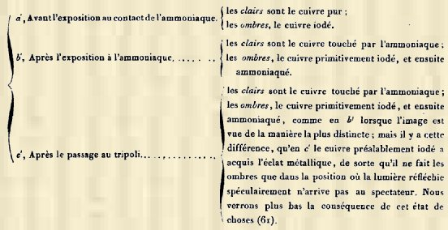
Tel est le procédé de M. Niepce.
31. Si on passait la plaque qui vient d'être soumise à l'ammoniaque dans de l'eau très légèrement aiguisée d'acide azotique,
- Les clairs seraient toujours le cuivre qui n'a pas été iodé.
- Les ombres, le cuivre qui a été iodé.
Si on passait au tripoli la plaque qui a été soumise à l'eau aiguisée d'acide azotique, les effets seraient encore les mêmes; mais les ombres paraîtraient moins intenses, parce que la
modification produite par l'ammoniaque aurait été affaiblie. Avec de l'eau trop fortement acidulée l'image s'affaiblirait beaucoup; car l'acide, à une densité de 1.34, fait disparaître l'image.
32. Remarque. Lorsqu'un papier iodé a été appliqué encore humide sur la plaque de cuivre, et que les clairs de l'image étaient pénétrés d'une certaine quantité d'iode, les parties de la surface de la plaque correspondant aux clairs prennent de l'iode comme les parties correspondant aux ombres, quoique beaucoup moins. Il arrive dès lors que les clairs de la plaque, au lieu du gris blanchâtre qu'ils auraient présenté dans le cas où le papier iodé eût été appliqué parfaitement sec, ont une couleur d'un gris jaunâtre. Après avoir passé l'image au tripoli, l'influence de l'iode dans les clairs se fait encore sentir; ils sont moins brillants, plus mats ou plus gris que ne l'est le cuivre non iodé, poli après avoir été exposé à l'ammoniaque.
Explication des effets précédents.
33. Il y a cinq ans, si on m'eût communiqué les expériences de M. Niepce, en m'engageant à en expliquer les effets, alors que je ne m'étais point encore occupé de la théorie des phénomènes optiques que présentent les étoffes de soie, j'aurais certainement refusé d'entreprendre une pareille recherche, dans la conviction où j'aurais été d'y consacrer un trop long temps. Mais ayant connu ces expériences, lorsque mes études antérieures m'avaient suffisamment préparé à les examiner, j'ai pu me livrer au travail que je vais présenter, avec des détails minutieux sans doute, mais que justifieront, j'espère, la nouveauté du sujet et l'exactitude de mes explications.
34. Je commencerai par rappeler quelques faits de la réflexion de la lumière par des surfaces métalliques planes plus ou moins bien polies, parce qu'ils serviront de base aux explications que je donnerai des effets observés dans la deuxième catégorie des expériences de M. Niepce.
On prend deux plaques de cuivre identiques, plus longues que larges, non que les dimensions aient de l'influence sur les effets dont je veux parler; mais la différence des deux dimensions rend la description de ces effets plus claire, lorsqu'on les observe comparativement. Les plaques sont posées sur un plan horizontal éclairé par la lumière diffuse du jour, de manière que le spectateur puisse les voir sous un angle compris entre 30° et 40°, soit face au jour, soit en lui tournant le dos. Ces plaques sont placées de manière que la longueur de l'une d'elles p se trouve comprise dans le plan vertical de la lumière incidente, tandis que la longueur de l'autre plaque p' est perpendiculaire à ce même plan. Maintenant en regardant p, et ensuite p' successivement, face au jour d'abord, et en sens contraire ensuite, on a les quatre circonstances 1, 2, 3 et 4 dans lesquelles j'ai placé chaque échantillon d'une étoffe pour en définir les effets optiques, tels que je les ai étudiés (Voyez THÉORIE DES EFFETS OPTIQUES DES ÉTOFFES DE SOIE. page 18.)
Je vais examiner les effets de deux plaques identiques pour les quatre cas suivants :
- Premier cas. Les deux plaques ont été polies, dans le sens de la longueur, avec une matière assez grossière pour qu'elles présentent des raies parallèles et des sillons fins et également profonds.
- Deuxième cas. Les deux plaques ont été polies, dans le sens de la longueur, avec une matière assez fine, comme le tripoli, pour qu'elles ne paraissent pas rayées, quoiqu'elles le soient réellement.
- Troisième cas. Les deux plaques ont été également rayées, dans le sens de la longueur et dans le sens de la largeur, d'une manière sensible.
- Quatrième cas. Les deux plaques ont un poli parfait.
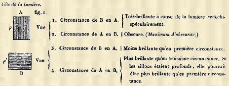
Résultats semblables à ceux du premier cas.
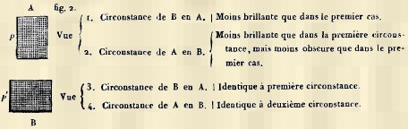
Les résultats correspondent à ceux du troisième cas. Ainsi il y a identité d'effet dans la première et la troisième circonstance comme dans la deuxième et la quatrième ; mais il y ci cette différence, dans le quatrième cas, qu'il y a le maximum de clarté et le maximum d'obscurité qu'il est possible d'observer lors de la réflexion de la lumière par des surfaces planes.
35. Deux conséquences se déduisent des observations précédentes. La première, c'est que, pour toutes les plaques métalliques destinées à recevoir des images délicates, le poli est une condition indispensable; mais, dans le cas où il n'est pas parfait, il faut que la surface ait été polie dans un même sens. Les expériences dont cette conséquence est le résultat, expliquent donc parfaitement la raison de polir les plaques daguerriennes dans un même sens. La seconde, c'est que, pour s'assurer si une surface métallique sur laquelle on n'aperçoit pas de raies a un poli parfait, il faut l'observer le dos tourné à la lumière, afin de voir si elle conservera dans deux positions rectangulaires le même degré d'obscurité.
36. La première recherche a été de reconnaître d'une manière précise la différence existant entre la surface d'une plaque de cuivre polie dans le sens longitudinal avec le tripoli, et
-1° La surface de ce même cuivre, modifiée par le contact de l'iode ;
-2° La surface de ce même cuivre modifiée par le contact de l'ammoniaque;
-3° La surface de ce même cuivre modifiée par le contact successif de l'iode et de l'ammoniaque. Pour cela, on a appliqué sur trois plaques de cuivre un papier épais découpé en forme de trèfle ; dès lors, après les opérations auxquelles chacune des plaques a été soumise, on a pu, sur la même plaque, constater les effets qu'on se proposait de définir ;
-4° Deux surfaces de ce même cuivre, modifiée, l'une par l'iode et l'ammoniaque, appliqués successivement, et l'autre modifiée seulement par l'ammoniaque. Pour cela, on a appliqué deux trèfles en papier épais, l'un près de l'autre, sur une plaque de cuivre ; la plaque a été passée à la vapeur d'iode. On a ôté un des trèfles, et on a passé à la vapeur d'ammoniaque. Par là, on a pu comparer ensemble les modifications produites d'abord par l'iode et par l'ammoniaque appliqués successivement, et ensuite par l'ammoniaque seulement, avec le cuivre non modifié.
37. L'iode en vapeur se combine au cuivre. La combinaison la plus convenable pour le succès de l'opération de M. Niepce, doit être, suivant lui, mate et couleur de rouille. Mais en la conservant au milieu de l'air, et surtout au contact du soleil, la couleur se fonce en passant au bleu des ressorts de montre; et il semblerait, sous l'influence solaire, qu'il se dégagerait de l'iode, car j'ai senti l'odeur de ce corps en flairant une plaque iodée qui venait d'être frappée par le soleil. En même temps que cet effet a lieu sous l'influence de la lumière, le cuivre des clairs se ternit en passant à l'état de protoxyde (Note. Expérience. Dessin sur une plaque dont la moitié est couverte d'un papier noir. Après quatre mois, la partie couverte présente une image parfaitement distincte, quoique sensiblement altérée, et la partie découverte une image effacée ; on n'aperçoit que quelques traits jaunes provenant de l'altération du cuivre iodé. En passant la plaque au tripoli et à l'eau pure, la partie préservée de la lumière présente une légère image, tandis que tout est confus dans l'autre partie.).
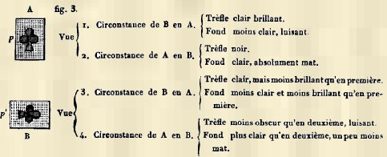
Il est évident que l'image du trèfle tranche sur le fond par la différence qui existe entre une surface spéculaire et une surface mate, et qu'il y a toujours moins d'opposition, entre le fond vu dans la première circonstance et le fond vu dans la deuxième, qu'il n'y en a entre le trèfle vu dans la première circonstance et le trèfle vu dans la seconde. Ajoutons que la couleur du cuivre iodé tranche encore sur la couleur du cuivre par moins de rouge. Il y a donc plusieurs causes de la production de l'image par la réserve.
38. Observation microscopique. Lorsqu'on examine au microscope, sur la platine tournante de George Oberhauser, la plaque numéro 1 de manière qu'elle soit vivement éclairée par le soleil dans la partie iodée et dans la partie où le cuivre est pur,
- Le cuivre iodé présente des dessins extrêmement fins, circulaires en général; les uns sont bleus et violets, les autres oranges et jaunes, ces derniers dominant; le fond du cuivre iodé est jaunâtre.
- Le cuivre pur présente des sillons rectilignes parallèles, couleur de cuivre, avec quelques traits circulaires et irisés.
De sorte que la différence est extrême quand on observe simultanément ces deux effets. Seulement en faisant tourner la platine, on constate parfaitement les effets optiques des
sillons parallèles du cuivre pur par un maximum de clarté ou d'ombre, suivant la position où on, les voit ; la structure comme grenue du cuivre iodé ne présente rien de semblable.
39. Le cuivre, exposé au contact de la vapeur d'ammoniaque fluor, perd de sa couleur et son brillant métallique. Que se passe-t-il ? C'est ce que j'ignore encore. Quoi qu'il en soit,
l'opposition entre l'image réservée et le fond produit un effet tout à fait analogue à celui de la plaque n° 1.
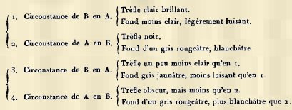
La production de l'image par la réserve s'explique pour cette plaque de la même manière que pour la plaque n° 1 ; seulement l'opposition est plus grande, parce que le cuivre
ammoniaque est plus mat encore que le cuivre iodé, et la couleur en est moins prononcée.
40. Observation microscopique. Par rapport au cuivre pur, le cuivre ammoniaque présente moins de différence au microscope que le cuivre iodé; cela provient principalement de ce que les sillons se montrent encore dans le cuivre ammoniaque.
41. L'eau mise sur le cuivre ammoniaque paraît ne lui rien enlever de matière soluble sensible à l'hématine et à la teinture de violette, du moins en opérant comparativement avec une plaque de cuivre non modifié. L'eau passée sur l'enduit ammoniaque à plusieurs reprises ne paraît avoir produit aucun effet lorsque la plaque est complètement séchée. En passant du coton humecté sur le cuivre modifié, il se colore sensiblement en vert bleuâtre, tandis qu'il ne produit presque rien sur le cuivre non ammoniaque. Le coton bleu verdâtre, touché par le cyano-ferrite de cyanure de potassium acidulé , se colore fortement en marron. La solution de cyano-ferrite ne produit aucun effet sur l'enduit. Si on verse sur l'enduit une goutte d'acide acétique, d'acide phosphorique, etc., aussitôt apparaît le cuivre métallique, et le cyano-ferrite versé dans l'acide produit un précipité abondant rouge marron. L'enduit a donc été dissous. L'acide retient, en outre, de l'ammoniaque. En passant à l'acide la moitié d'un cercle ammoniaque produit sur une plaque carrée, lavant cette moitié, puis la passant à l'émeri; elle se confond alors avec le cuivre pur des angles de la plaque, tandis que la moitié simplement passée au tripoli mouillé d'eau pure montre toujours une image distincte du cuivre métallique. Enfin, on fait disparaître l'image au moyen de l'eau acidulée.
42. Le cuivre exposé au contact de l'iode d'abord, puis à celui de la vapeur d'ammoniaque fluor, prend une couleur brune plus foncée que le n° 2, même lorsque celui-ci a été exposé à l'air et au soleil. Nous ignorons ce qui se passe entre le cuivre iodé et l'ammoniaque.
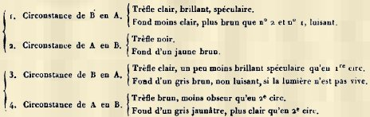
43. Observation microscopique. La différence est tout à fait analogue entre le cuivre pur et le cuivre iodé puis ammoniaque, qu'entre le cuivre pur et le cuivre simplement iodé de la plaque n° 1 ; seulement le cuivre iodé et ammoniaque tranchant davantage par sa couleur brune, l'image est plus apparente.
avec un seul trèfle réservé (n° 4).
44. Cette plaque représente plus que les effets obtenus par le procédé de M. Niepce, puisque le trèfle réservé, que je nommerai trèfle pur, permet de comparer la surface du cuivre non modifiée avec la surface du cuivre modifiée seulement par l'ammoniaque, laquelle surface présente les clairs, et que je nommerai trèfle ammoniaque.
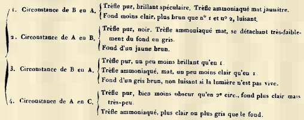
Ainsi, il y a cette différence essentielle, que dans la seconde, et surtout la quatrième circonstance, le trèfle ammoniaque paraît plus clair que le fond, tandis que le trèfle pur paraît plus obscur; mais dans la quatrième la différence est très-faible.
45. Un point bien remarquable, qu'il s'agit d'examiner, c'est l'intensité de la résistance que le cuivre modifié par le contact de l'iode ou de l'ammoniaque, et par le contact successif de l'iode et de l'ammoniaque, présente lorsqu'on soumet le métal au frottement d'un flocon de coton imprégné d'eau pure et de tripoli.
Plaque n° 1.
46. Lorsqu'on passe au tripoli une plaque n° 1 dans le sens longitudinal, aussitôt qu'elle vient d'éprouver l'action de la vapeur d'iode, la modification disparaît, et le cuivre soumis à l'action de la vapeur ammoniacale présente une surface homogène. La modification que le cuivre vient d'éprouver de la part de l'iode n'a donc pas de résistance au frottement du tripoli humide. Mais il en est autrement lorsque la plaque, après avoir été soumise au contact de la vapeur d'iode, est abandonnée à elle-même pendant 48 heures dans un lieu éclairé. Si le dessin a perdu de sa netteté, cependant en passant la plaque au tripoli dans le sens longitudinal, l'image du trèfle est conservée, quoique le mat du fond ait disparu, et que celui-ci ressemble au cuivre pur. Si on passe de nouveau au tripoli la plaque dont je parle, la surface en paraît homogène; cependant, en la regardant sous certaines inclinaisons dans une chambre à parois noires, on peut apercevoir le trèfle. Après avoir fait disparaître tout vestige d'image au moyen du tripoli, on parvient souvent à la faire reparaître en soumettant la plaque à la vapeur de l'ammoniaque. J'ai eu l'occasion de constater par l'odorat le dégagement de l'iode dans cette circonstance. Enfin, on peut, au moyen d'un nouveau passade au tripoli, faire disparaître tout vestige d'image.
Plaque n° 2.
47. La plaque n° 2, passée au tripoli, a présenté les effets suivants :
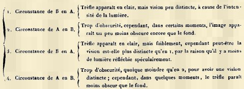
En définitive, dans les plaques n° 2, dont le trèfle a été rëservé, le fond, malgré le passage au tripoli, a toujours paru plus mat que la partie réservée. Dans le cas où la plaque n'aurait été exposée que quelques minutes à la vapeur de l'ammoniaque fluor froide, l'image disparaîtrait par le frottement du tripoli, et il pourrait arriver qu'une nouvelle exposition à l'ammoniaque le fît reparaître.
Plaque n° 3.
48. Les résultats sont analogues aux précédents.
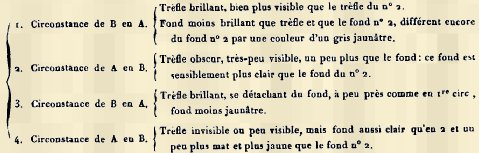
Plaque n° 4.
49.
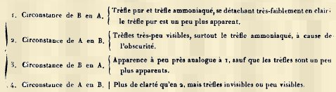
Lorsque le trèfle réservé lors du passage à l'iode a été découvert pendant l'exposition à l'ammoniaque, il y a moins d'opposition entre le trèfle et le fond, qu'il y en a lorsque le trèfle a été préservé du contact de l'ammoniaque, ainsi que cela a eu lieu pour le n° 3.
50. Lorsqu'on examine au microscope, soit à la lumière diffuse, soit au soleil, les plaques n° 1, n° 2 et n° 3, passées au tripoli, on n'aperçoit pas de différence sensible entre le cuivre pur et le cuivre qui a été simplement iodé ou ammoniaque, ou successivement iodé et ammoniaque.
51. Justifions maintenant ce que j'ai dit de l'application de la théorie des effets optiques des étoffes de soie à l'explication des effets optiques des plaques de cuivre présentant des images produites par le procédé de M. Niepce de Saint-Victor.
52. L'opposition la plus grande que l'on puisse faire naître dans une étoffe monochrome, est d'opposer le satin par la chaîne au satin par la trame, par la raison que lorsqu'un des deux apparaît le plus brillant, en vertu de la réflexion spéculaire dont il est doué, l'autre réfléchit la lumière spéculaire dans un sens où elle n'arrive pas à l'oeil du spectateur. On obtiendrait un effet correspondant à celui-ci, en opposant sur une plaque de cuivre, par exemple, une image à raies parallèles extrêmement fines à un fond également rayé, mais dans un sens perpendiculaire aux raies de l'image. Cet effet n'est pas celui des images de M. Niepce de Saint-Victor.
53. On peut produire des effets bien sensibles sur des étoffes de soie, quoiqu'ils ne le soient pas autant que ceux dont je viens de parler, en opposant sur fond de satin par la chaîne des images dont l'armure se rapporte au taffetas. En effet, supposons l'opposition de ces deux tissus dans une même étoffe, voici ce qu'on remarquera : en regardant l'étoffe de manière à voir le satin à son minimum de clarté dans la deuxième circonstance, le taffetas sera vu éclairé, parce que la trame qui le constitue apparaîtra avec le maximum d'éclat dont elle est susceptible ; mais par la raison que cette trame est mêlée de chaîne, et que dans le taffetas l'effet de la chaîne domine sur celui de la trame, toutes choses égales d'ailleurs, le contraste de l'image taffetas avec le fond satin sera, dans la circonstance dont nous parlons, moindre que si le contraste eût résulté de l'opposition d'un satin par la trame au satin par la chaîne formant le fond de l'image.
54. Je vais appliquer cette théorie aux images de M. Niepce telles que nous en avons étudié les effets sur les plaques n° 1, n° 2, n° 3, en distinguant le cas où elles n'ont pas été passées au tripoli du cas où elles l'ont été.
PREMIER CAS. Plaques n° 1, 2 et 3, non passées au tripoli.
55. La grande opposition existant entre la surface du cuivre poli dans un même sens d'une part, et d'une autre part, celle du cuivre iodé ou ammoniaque, ou iodé d'abord et ammoniaque ensuite, que l'on observe si bien au microscope, indépendamment de toute couleur, démontre parfaitement que la première surface avec les sillons fins et parallèles, réfléchit la lumière à la manière du satin, tandis que la seconde, plus ou moins grenue, la réfléchit à la manière du taffetas.
DEUXIÈME CAS. Plaques n°' 1, 2 et 3, passées au tripoli.
56. L'opposition des images de M. Niepce de Saint-Victor est bien plus faible après le passage des plaques au tripoli qu'elle n'était auparavant, par la double raison que l'opposition de la couleur entre les deux parties de cuivre a diminué, et que l'action du tripoli a sillonné la surface de cuivre que les réactifs avaient rendue grenue. Dès lors on conçoit parfaitement la raison des effets suivants : La vision dans la première et même la troisième circonstance est peu distincte, à cause du vif éclat de la lumière réfléchie; elle est peu distincte encore dans la deuxième circonstance, parce qu'alors peu de lumière arrive à l'oeil du spectateur. Il résulte de cet état de choses, qu'il existe des positions intermédiaires entre A et B, fig. 4, où la vision des images est plus distincte qu'elle ne l'est en celles-ci. On pourra aisément s'en convaincre en se plaçant successivement en C et en C, c'est-à-dire, dans des directions telles, que CP fait avec PA un angle de 45°, et EP avec PA un angle de 135°. Effectivement, en C la plaque est moins obscure qu'en A, et la vision du trèfle est plus distincte; en E, où la lumière réfléchie spéculairement est moindre qu'en B et plus grande qu'en C, l'opposition du trèfle et du fond étant portée au maximum, l'image apparaît de la manière la plus distincte ; enfin, en D, où l'angle DPA est de 45°, la vision est moins distincte qu'en C et en E.
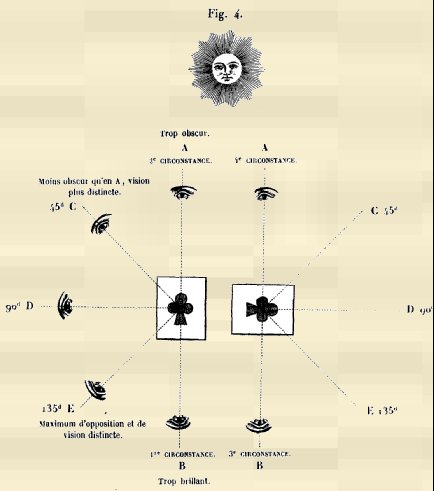
57. Reprenons maintenant le procédé de M. Niepce, pour en expliquer les effets, conformément aux actions chimiques et aux principes de la réflexion de la lumière que nous venons de rappeler. Lorsqu'on a appliqué un dessin iodé sur une plaque de cuivre, l'iode quitte le papier pour le métal ; l'iodure de cuivre reproduit les traits et les ombres du dessin, et le cuivre non iodé les clairs. L'action de l'iode est donc la même que dans l'expérience précédente, où une plaque de cuivre avec un trèfle réservé a été exposée à la vapeur d'iode. Les traits sont parfaitement distincts et continus; mais l'iodure de cuivre s'altérant à l'air et à la lumière, et la surface du cuivre y perdant son brillant métallique, l'image n'est pas dans une condition satisfaisante de conservation. Si on passait la plaque au tripoli légèrement, l'image serait faible; et en la frottant beaucoup, elle disparaîtrait.
58. Lorsqu'on vient à exposer à la vapeur de l'ammoniaque la plaque de cuivre iodée, la vapeur agit, comme je l'ai dit,
-1° Sur les clairs, en abaissant beaucoup la couleur propre au métal, et en lui ôtant tout brillant spéculaire;
-2° Sur le cuivre iodé, en en fonçant la couleur. Ce résultat, pour être obtenu, ne demande que deux ou trois minutes de contact du métal avec l'ammoniaque. L'iodure éprouve une modification dans sa couleur et dans sa composition; mais, comme je l'ai fait observer, les traits ne sont pas purs.
59. Si on passe la plaque au tripoli, le cuivre pur ammoniaque conserve son gris blanchâtre et reste mat, tandis que le cuivre iodé devient brillant comme le cuivre pur. Or, comme le premier est dénué de brillant spéculaire et qu'il est blanchâtre, il n'est point étonnant qu'il fasse les clairs du dessin ; tandis que le cuivre iodé, qui a repris toute l'apparence du cuivre pur, produit les ombres du dessin lorsque la lumière spéculaire qu'il réfléchit ne peut arriver à l'oeil du spectateur; et c'est alors que la vision de l'image est la plus distincte. L'image de M. Niepce est donc alors tout à fait analogue aux images photographiques sur métal, où les ombres sont produites par le métal doué du poli spéculaire.
60. L'image que présente la plaque de cuivre, après le contact de l'iode et celui de l'ammoniaque, et après avoir été polie, est fort différente de l'image produite simplement par l'iode. Celle-ci est beaucoup plus perceptible, et l'est dans bien plus de positions que la première; et d'un autre côté, les clairs et les ombres rappellent plutôt la peinture, c'est-à-dire que les traits ont disparu de plus en plus depuis l'impression de la gravure iodée, jusqu'au passage au tripoli de la plaque iodée d'abord et ammoniaquée ensuite.
61. Puisque les clairs de la plaque simplement iodée sont le cuivre nu, et que les ombres de la plaque iodée, ammoniaquée et polie sont, sinon le cuivre absolument pur, du moins du cuivre bien moins modifié que le cuivre ammoniaque, il doit nécessairement y avoir des positions identiques pour les deux dessins, où les clairs et les ombres apparaîtront d'une manière inverse. C'est en effet ce que l'expérience confirme parfaitement, en regardant convenablement une plaque de cuivre, dont chaque moitié présente le même dessin obtenupar les deux procédés dont nous comparons les résultats. Pour cela, on se place dans l'embrasure d'une fenêtre; la plaque est tenue d'abord verticalement, de manière que le plan idéal où elle se trouve fasse un angle dièdre de 135° avec une des vitres, puis on la regarde dans le sens de la lumière incidente et non dans celui de la lumière réfléchie, en l'inclinant très-légèrement vers le ciel. Je mets sous les yeux de l'Académie une plaque de cuivre, sur les deux moitiés de laquelle on a imprimé une même gravure passée à l'iode. La moitié qui est à la droite du spectateur présente le dessin simplement iodé; la moitié qui est à sa gauche, après avoir reçu l'iode de la gravure, a été exposée à l'ammoniaque, puis passée au tripoli. C'est la preuve expérimentale de ce que j'ai avancé plus haut (30). On voit, d'après cela, combien il est nécessaire, pour s énoncer avec précision lorsqu'il s'agit de décrire des images analogues à celles dont je parle, de définir les positions où on les observe, quand il s'agit de les qualifier d'inverses ou de directes, ou, ce qui est la même chose, de négatives ou de positives.
REFLEXIONS.
62. Un fait, à mon sens bien remarquable, après la cémentation du métal par la vapeur d'iode, la vapeur d'ammoniaque, etc., cémentation en vertu de laquelle le poli donné jusqu'à une certaine profondeur n'efface pas le dessin, c'est le fait que, le poli ayant été poussé plus loin, mais seulement ce qui est suffisant pour faire disparaître l'image sous toutes les inclinaisons, cette image redevient sensible par l'exposition du métal à une vapeur, celle de l'ammoniaque, par exemple. En effet, supposons le trèfle réservé dont le fond a été passé à l'iode, puis effacé avec le tripoli jusqu'à la disparition de l'image. Comment la surface du cuivre en apparence homogène, exposée à l'ammoniaque, présente-t-elle un trèfle plus blanc que le fond ? L'effet n'est-il pas remarquable, soit qu'il soit produit par l'iode resté dans le cuivre, lequel empêche le métal de blanchir par l'ammoniaque, comme cela a lieu pour le cuivre pur, soit, ce qui est bien moins probable, que, tout l'iode ayant été enlevé par le frottement du tripoli à l'état d'iodure, les particules de cuivre situées au-dessous de la couche iodée aient subi un arrangement tel, qu'en absorbant la vapeur d'ammoniaque elles ne produisent pas un composé aussi blanc que les particules du cuivre pur. Enfin, fait bien remarquable encore : c'est que la modification ait lieu dans le sens perpendiculaire à la surface de la plaque soumise à la vapeur.
Action de vapeurs autres que celle de l'iode sur les surfaces métalliques.
63. M. Niepce de Saint-Victor a constaté que le chlore gazeux et sec, dans lequel on plonge un papier imprimé, se fixe sur les noirs. Il en est de même de la vapeur qui se dégage de l'eau de chlore ; mais le papier exposé à cette vapeur n'imprime pas d'image sensible sur le cuivre ; il faut l'exposer à la vapeur de l'ammoniaque fluor pour la faire apparaître. Dans tous les cas , les effets du chlore sont bien plus faibles que ceux de l'iode. Un imprimé plongé dans l'eau de chlore, appliqué contre un papier de tournesol bleu, reproduit l'impression en lettres rouges, parce qu'il s'est produit vraisemblablement de l'acide chlorhydrique. M. Niepce, en chauffant de l'hypochlorite de chaux à sec dans une capsule de porcelaine, a observé quelquefois que les premières vapeurs dégagées donnent au papier imprimé la propriété de reproduire les lettres en rouge, et que les vapeurs dégagées plus tard, étant absorbées par le papier blanc, reproduisent les lettres en bleu sur fond blanc, le chlore ayant décoloré le tournesol.
64. Le brome n'a pas paru à M. Niepce avoir d'action bien sensible pour se porter sur les noirs d'une gravure.
65. Une gravure exposée 5 à 10 minutes à la vapeur du soufre contenu dans une capsule de porcelaine chauffée pur une lampe à alcool, de manière à produire une vapeur qui ne contient pas d'acide sulfureux sensible à l'odorat et au papier de tournesol, acquiert la propriété d'imprimer une image parfaitement nette sur une plaque de cuivre, contre laquelle on la presse pendant 10 minutes. La vapeur qui a été absorbée par les noirs forme les ombres de l'image, et le cuivre métallique en fait les clairs.
66. La vapeur de l'orpiment produit le même effet.
67. Le résultat est encore le même en employant le bisulfure de fer; mais l'opération est plus difficile.
68. Une gravure plongée dans un flacon de gaz sulfhydrique absorbe ce gaz par les noirs, et lorsqu'on la presse contre une plaque de cuivre , l'image est reproduite en sulfure.
69. Lorsqu'on expose une gravure à la vapeur de l'acide azotique d'une densité de 1,34 pendant cinq minutes environ, et qu'on l'applique ensuite contre une plaque de cuivre, ce ne sont pas les noirs, mais les blancs qui cèdent au métal la vapeur qu'ils ont absorbée. Le résultat de l'impression sur la plaque de cuivre est une matière blanchâtre et mate correspondant aux clairs de l'image, tandis que le cuivre métallique correspond aux ombres. La preuve que les blancs ont absorbé la vapeur acide, c'est qu'en appliquant la gravure sur un papier de tournesol, le dessin est produit en bleu sur un fond rouge, si l'exposition de la gravure à la vapeur acide a été faite convenablement. Cette expérience ne prouve pas que les noirs n'ont pas absorbé la vapeur acide ; car les phénomènes seraient encore les mêmes, conformément à ce que j'ai dit (28 -4°), dans le cas où les noirs, attirant la vapeur plus fortement que ne le font les blancs, la conserveraient, tandis que les blancs la céderaient à d'autres corps. L'existence d'une attraction élective de la vapeur acide, relativement à une série de corps, n'en existerait pas moins.
70. Enfin, j'ajouterai que les noirs des plumes de pie ou de vanneau, qui absorbent l'iode et qui le cèdent au cuivre, ne prennent pas l'acide azotique; car ces plumes, plongées dans cet acide, impriment au contraire leurs parties blanches sur le métal.
71. Si on met quelques grammes de phosphore dans une capsule de porcelaine à une température de 18 degrés environ , et qu'on expose une gravure à la vapeur qui s'en exhale pendant 5 ou 10 minutes, la gravure, appliquée contre une plaque de cuivre, n'y imprime pas d'image sensible; mais celle-ci se manifeste par l'exposition de la plaque à la vapeur de l'ammoniaque fluor , et l'aspect en est des plus agréables. Les clairs produits par le cuivre ammoniaque sont d'un blanc vaporeux remarquable. Quant aux ombres, elles seraient, suivant M. Niepce, le produit de la vapeur phosphorée fixée au cuivre. L'image ainsi produite n'est pas susceptible de résister à l'action du tripoli.
72. Il paraît bien, d'après cette expérience, que les noirs d'une gravure exposée à la vapeur du phosphore brûlant lentement, absorbent une matière capable de se porter sur le cuivre et de s'opposer à ce qu'il devienne blanc par l'ammoniaque. Mais quelle est cette vapeur ? Elle ne paraît pas être acide ; du moins, la gravure appliquée contre un papier bleu de tournesol ne le rougit pas.
73. Il serait bien curieux de rechercher si la matière active de la vapeur de phosphore est différente réellement de l'acide phosphatique. S'il en était ainsi, l'étude des images de M. Niepce de Saint-Victor conduirait, dans certains cas, à distinguer des matières différentes, où jusqu'ici on n'a admis qu'une espèce de corps. Et, à ce sujet, je rappellerai combien nous sommes peu avancés dans la connaissance des odeurs de plusieurs matières métalliques, telles que celles du cuivre, du fer, de l'étain, et de plusieurs de leurs composés.
74. M. Niepce de Saint-Victor a produit avec l'iode des figures sur le fer, le plomb , l'étain, le laiton et l'argent ; mais avec ce dernier métal, il a substitué l'exposition à la vapeur du mercure à l'exposition à la vapeur de l'ammoniaque fluor.
75. Il y a, sans doute, de l'analogie entre certaines images de Moser et certaines images reproduites par les procédés de M. Niepce ; mais il me semble très-difficile de la définir, en voyant la diversité des procédés indiqués par le physicien allemand, et surtout le manque de développement d'une analyse précise des effets de chaque sorte de procédé , et si l'on considère en outre l'intention bien évidente où il est de ramener en définitive les phénomènes qu'il décrit à des actions physiques et non à des actions chimiques. Toutes les expériences de M. Niepce, bien plus circonscrites à la vérité, sont au contraire essentiellement fondées sur des effets de contact, produits entre des corps placés dans des circonstances qui relèvent de la chimie. Et en cela même elles viennent à l'appui de l'opinion de M. Fizeau, qui, rejetant la théorie des radiations d'une lumière, latente, pour expliquer la production des images de Moser, l'attribue à des émanations de vapeurs dont la matière est déposée à la surface du corps qui donne son image à la surface d'un autre corps placé vis-à-vis du premier.
§3. TROISIÈME CATEGORIE D'EXPERIENCES.
Reproduction des images du foyer d'une chambre obscure, au moyen d'un composé d'argent, appliqué sur un enduit d'amidon ou d'albumine au lieu de l'être sur du papier.
76. Si les images produites sur papier au moyen d'un composé d'argent sensible au contact de la lumière, laissent tant à désirer, l'inégalité de la surface où apparaît l'image en est la cause, puisqu'il y a impossibilité que les détails s'y peignent avec fidélité. Sans doute, cet inconvénient a fait préférer à son usage en photographie les plaques métalliques, malgré leur cherté, leur poids et l'effet de la réflexion spéculaire. Dans cet état de choses, M. Niepce de Saint-Victor a eu l'heureuse idée d'enduire des plaques de verre transparent ou dépoli d'une couche mince d'amidon cuit ou d'albumine de blanc d'oeuf, et de s'en servir au lieu de papier. Les épreuves négatives, ou , pour parler plus correctement, inverses , qu'il a obtenues, ne permettent pas de douter qu'il n'ait atteint le but qu'il s'était proposé. Il emploie 5 parties d'amidon délayées parfaitement dans 100 parties d'eau, auxquelles il ajoute 5 parties d'une solution renfermant 0,25 d'iodure de potassium ; c'est cet amidon cuit qu'il coule sur des plaques de verre où il sèche rapidement , soit au soleil, soit à l'étuve. Ou bien il ajoute l'iodure de potassium à du blanc d'oeuf frais parfaitement limpide, et ce liquide est coulé sur les plaques de verre. Ces plaques sont ensuite imprégnées de la liqueur d'acéto-nitrate d'argent de M. Blanquart-Evrard, puis soumises à l'action de la lumière dans la chambre noire, conformément au procédé décrit par cet auteur. L'Académie prendra une idée du perfectionnement apporté dans la photographie par les manipulations précédentes, en voyant les épreuves inverses obtenues par M. Niepce de Saint-Victor. On a tout lieu d'espérer que, dans beaucoup de cas, il sera possible de reporter l'image sur bois ou sur pierre lithographique , sans qu'il soit nécessaire de la reproduire d'abord par le dessin pour la graver ensuite sur bois, ou en tirer des épreuves au moyen de la lithographie.
RÉSUMÉ.
Les recherches dans lesquelles M. Niepce de Saint-Victor a fait preuve de tant de persévérance et de talent, me paraissent devoir fixer l'attention des savants sous les rapports suivants :
-1° Sous le rapport de l'attraction élective avec laquelle une même vapeur peut être fixée par différents corps. Ainsi, l'iode a plus de tendance à se fixer à plusieurs matières noires qu'au papier blanc, soit qu'il agisse à l'état de vapeur, soit qu'il agisse à l'état de solution liquide. Dans le premier cas, les noirs agissent à l'instar des solides poreux condensant des vapeurs ; dans le second , comme des mordants fixant des matières colorantes à des tissus. D'un autre côté, les matières noires cèdent leur iode à l'amidon, et celui-ci le cède enfin à des métaux ;
-2° Sous le rapport de l'attraction élective de certaines vapeurs qui se fixent au papier blanc de préférence aux parties noires d'une encre grasse, ainsi que cela arrive à la vapeur de l'acide azotique ;
-3° Sous le rapport de la rapidité avec laquelle peuvent réagir une vapeur et des corps solides aussi compactes que le sont les métaux, comme on l'observe entre la vapeur de
l'ammoniaque fluor et le cuivre , par exemple ;
-4° Sous le rapport de la distance à laquelle une vapeur qui se dégage de la matière d'une image est susceptible de reproduire cette image sur un plan où la vapeur vient à se condenser ;
-5° Sous le rapport de l'influence très-diverse que différents solides pourraient exercer sur l'économie animale , après avoir été exposés a une même vapeur.
Malgré l'étendue des détails précédents, il me reste, pour remplir la tâche que je me suis prescrite, à dire quelques mots de l'auteur des recherches dont je viens de parler. Si l'Académie est toujours disposée à accorder son approbation et ses encouragements à ceux qui lui communiquent des faits nouveaux, cette disposition ne doit-elle pas se manifester surtout lorsque ces faits lui sont présentés par une personne qui, étrangère à la classe des savants , est engagée dans une carrière où tout le temps de celui qui la suit appartient à l'État ? Telle est la position de M. Niepce de Saint-Victor, digne à tous égards de porter le nom de son oncle, Joseph-Nicéphore Niepce, à qui revient l'honneur d'avoir fixé, dès 1826, les images de la chambre noire sur un métal enduit d'une matière sensible à la lumière, le bitume de Judée préalablement dissous dans l'huile de lavande. M. Niepce de Saint-Victor, à sa sortie du collège, s'engagea, et entra comme simple cavalier à l'école de Saumur. Deux ans après, il passa maréchal des logis dans le 1er régiment de dragons, où il devint successivement sous-lieutenant et lieutenant, sans cesser d'y remplir les fonctions d'instructeur. Il y a cinq ans, l'administration de l'armée ayant manifesté l'intention de changer en couleur aurore la couleur distinctive rosé des premiers régiments de cavalerie, à la condition cependant de ne pas défaire les uniformes déjà confectionnés, on apprit au ministère de la guerre qu'un lieutenant de dragons en garnison à Montauban disait avoir trouvé le moyen de remplir cette condition difficile. Ce lieutenant était M. Niepce de Saint-Victor. Mandé à Paris pour répéter son procédé devant une commission nommée par le ministre de la guerre, le résultat en fut tel qu'il l'avait annoncé; un peu plus tard, l'exécution qu'on en fit en grand dans plusieurs régiments eut un égal succès. Il faut savoir que jamais M. Niepce, avant cette époque, ne s'était occupé de teinture. De retour à Montauban, M. Niepce commença à se livrer aux recherches dont l'Académie connaît maintenant les résultats. Convaincu que Paris lui offrirait plus de ressources pour les continuer que les garnisons de province, il demanda son admission dans la garde municipale, quoiqu'il sût bien qu'en changeant d'arme il perdrait de ses chances à l'avancement. En considération de ses bons services, on fit droit à sa demande. C'est depuis son séjour à Paris que j'ai pu apprécier ce que l'intelligence de M. Niepce a de qualités rares et distinguées, par les confidences qu'il m'a faites de ses travaux ; le plus grand nombre ont été exécutés au quartier de cavalerie du faubourg Saint-Martin, dans la salle de police , qui, étant pour ainsi dire constamment libre, à cause de la sévérité du choix des hommes appelés à composer la garde municipale, a pu recevoir ainsi la nouvelle destination que M. Niepce lui a donnée. Ces détails sur un homme qui pendant vingt-trois ans a constamment satisfait à toutes les exigences de la profession militaire, sans jamais reculer devant aucun sacrifice que son goût des recherches scientifiques lui a imposé, ne paraîtront pas déplacés, et j'ose espérer que l'Académie accordera un témoignage d'estime à M. Niepce de Saint-Victor, qui honore doublement le titre d'officier français.